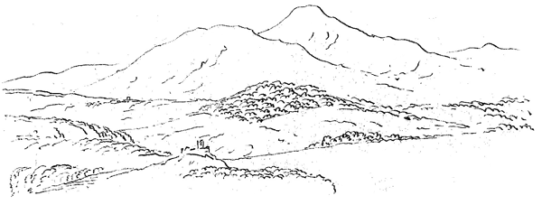

Aus Briefen, wenige Zeit vor der Abreise, an Meyer nach Florenz und Stäfa geschrieben.
Weimar den 28 April 1797.
Bisher habe ich immer, wenn ich ungeduldig werden wollte, Sie, mein wertester Freund, mir zum Muster vorgestellt: denn Ihre Lage, obgleich mitten unter den herrlichsten Kunstwerken, gewährte Ihnen doch keine Mitteilung und gemeinschaftlichen Genuß, wodurch alles was unser ist doch erst zum Leben kommt; dagegen ich, obgleich abgeschnitten von dem so sehr gewünschten Anschauen der bildenden Künste, doch in einem fortdauernden Austausch der Ideen lebte, und in vielen Sachen die mich interessierten weiter kam.
Nun aber gesteh' ich Ihnen gern, daß meine Unruhe und mein Unmut auf einen hohen Grad zunimmt, da nicht allein alle Wege nach Italien für den Augenblick versperrt, sondern auch die Aussichten auf die nächste Zeit äußerst schlimm sind.
In Wien hat man alle Fremden ausgeboten; Graf Fries, mit dem ich früher zu reisen hoffte, geht selbst erst im September zurück; der Weg von da auf Triest ist für jetzt auch versperrt und für die Zukunft wie die übrigen verheert und unangenehm. In dem obern Italien selbst, wie muß es da nicht aussehen! wenn außer den kriegführenden Heeren auch noch zwei Parteien gegen einander kämpfen. Und selbst nach einem Frieden, wie unsicher und zerrüttet muß es eine lange Zeit in einem Lande bleiben, wo keine Polizei ist, noch sein wird! Einige Personen die jetzt über Mailand heraus sind, können nicht genug erzählen, wie gequält und gehindert man überall wegen der Pässe ist, wie man aufgehalten und herumgeschleppt wird und was man sonst für Not des Fortkommens und übrigen Lebens zu erdulden hat.
Sie können leicht denken, daß unter diesen Umständen mich alles, was einigen Anteil an mir nimmt, von einer Reise abmahnt; und ob ich gleich recht gut weiß, daß man bei allen einigermaßen gewagten Unternehmungen auf die Negativen nicht achten soll, so ist doch der Fall von der Art, daß man selbst durch einiges Nachdenken das Unrätliche einer solchen Expedition sehr leicht einsehen kann.
Dieses alles zusammen drängt mir beinahe den Entschluß ab: diesen Sommer, und vielleicht das ganze Jahr, an eine solche Reise nicht weiter zu denken. Ich schreibe Ihnen dieses sogleich, um auf alle Fälle mich noch mit Ihnen darüber schriftlich unterhalten zu können. Denn was ich Ihnen raten soll weiß ich wahrlich nicht. So sehr Sie mir auf allen Seiten fehlen, und so sehr ich durch Ihre Abwesenheit von allem Genuß der bildenden Kunst getrennt bin, so möchte ich doch Sie nicht gern sobald von der Nahrung Ihres Talentes, die Sie künftig in Deutschland wieder ganz vermissen werden, getrennt wissen. Wenn mein Plan durch die äußern Umstände zum Scheitern gebracht wird, so wünschte ich doch den Ihrigen vollendet zu sehen.
Ich habe mir wieder eine eigne Welt gemacht, und das große Interesse, das ich an der epischen Dichtung gefaßt habe, wird mich schon eine Zeit lang hinhalten. Mein Gedicht Herrmann und Dorothea ist fertig; es besteht aus zweitausend Hexametern und ist in neun Gesänge geteilt, und ich sehe darin wenigstens einen Teil meiner Wünsche erfüllt. Meine hiesigen und benachbarten Freunde sind wohl damit zufrieden, und es kommt hauptsächlich nun darauf an: ob es auch vor Ihnen die Probe aushält. Denn die höchste Instanz von der es gerichtet werden kann ist die, vor welche der Menschenmaler seine Kompositionen bringt, und es wird die Frage sein, ob Sie unter dem modernen Costume die wahren echten Menschenproportionen und Gliederformen anerkennen werden.
Der Gegenstand selbst ist äußerst glücklich, ein Sujet wie man es in seinem Leben nicht zweimal findet; wie denn überhaupt die Gegenstände zu wahren Kunstwerken seltner gefunden werden als man denkt, deswegen auch die Alten beständig sich nur in einem gewissen Kreis bewegen.
In der Lage in der ich mich befinde, habe ich mir zugeschworen, an nichts mehr Teil zu nehmen als an dem, was ich so in meiner Gewalt habe wie ein Gedicht; wo man weiß, daß man zuletzt nur sich zu tadeln oder zu loben hat; an einem Werke an dem man, wenn der Plan einmal gut ist, nicht das Schicksal des Penelopeischen Schleiers erlebt. Denn leider in allen übrigen irdischen Dingen lösen einem die Menschen gewöhnlich wieder auf was man mit großer Sorgfalt gewoben hat, und das Leben gleicht jener beschwerlichen Art zu wallfahrten, wo man drei Schritte vor und zwei zurücktun muß. Kommen Sie zurück, so wünschte ich, Sie könnten sich auf jene Weise zuschwören, daß Sie nur innerhalb einer bestimmten Fläche, ja ich möchte wohl sagen, innerhalb eines Rahmens, wo Sie ganz Herr und Meister sind, Ihre Kunst ausüben wollen. Zwar ist, ich gestehe es, ein solcher Entschluß sehr illiberal und nur Verzweiflung kann einen dazu bringen; es ist aber doch immer besser, ein für allemal zu entsagen, als immer einmal einen um den andern Tag rasend zu werden.
Vorstehendes war schon vor einigen Tagen geschrieben, nicht im besten Humor, als auf einmal die Friedensnachricht von Frankfurt kam. Wir erwarten zwar noch die Bestätigung, und von den Bedingungen und Umständen ist uns noch nichts bekannt, ich will aber diesen Brief nicht aufhalten, damit Sie doch wieder etwas von mir vernehmen, und Eingeschlossenes, das man mir an Sie gegeben hat, nicht liegen bleibe. Leben Sie wohl und lassen Sie mich bald wieder von sich hören. In weniger Zeit muß sich nun vieles aufklären, und ich hoffe, der Wunsch, uns in Italien zuerst wieder zu sehen, soll uns doch noch endlich gewährt werden.
Weimar am 8 Mai 1797.
Am 28 April schrieb ich Ihnen einen Brief voll übler Laune, die Friedensnachrichten, die in dem Augenblick dazu kamen, rektifizierten den Inhalt. Seit der Zeit habe ich mir vorgesetzt, so sicher als ein Mensch sich etwas vorsetzen kann:
Daß ich Anfangs Juli nach Frankfurt abreise, um mit meiner Mutter noch mancherlei zu arrangieren, und daß ich alsdann, von da aus, nach Italien gehen will, um Sie aufzusuchen.
Ich darf Sie also wohl bitten in jenen Gegenden zu verweilen und, wenn Sie nicht tätig sein können, inzwischen zu vegetieren. Sollten Sie aber Ihrer Gesundheit wegen nach der Schweiz zurück gehen wollen, so schreiben Sie mir, wo ich Sie treffe. Ich kann rechnen, daß Sie diesen Brief Ende Mais erhalten; antworten Sie mir aber nur unter dem Einschluß von Frau Rat Goethe nach Frankfurt am Main, so finde ich Ihren Brief gewiß, und werde mich darnach richten. In der Zwischenzeit erfahren wir die Verhältnisse des obern Italiens und sehen uns mit Zufriedenheit, wo es auch sei, wieder. Ich wiederhole nur kürzlich, daß es mir ganz gleich ist, in welche Gegend ich mich von Frankfurt aus hinbewege, wenn ich nur erfahre, wo ich Sie am nächsten treffen kann. Leben Sie recht wohl! Mir geht alles recht gut, so daß ich nach dem erklärten Frieden hoffen kann, Sie auch auf einem befriedigten, obgleich sehr zerrütteten Boden wieder zu sehen.
Jena, den 6 Juni 1797.
Ihren Brief vom 13 Mai habe ich gestern erhalten, woraus ich sehe, daß die Posten zwar noch nicht mit der alten Schnelligkeit, doch aber wieder ihren Gang gehen, und das macht mir Mut Ihnen gleich wieder zu schreiben.
Seitdem ich die Nachricht erhielt, daß Sie sich nicht wohl befinden, bin ich unruhiger als jemals; denn ich kenne Ihre Natur, die sich kaum anders als in der vaterländischen Luft wieder herstellt. Sie haben indessen noch zwei Briefe von mir erhalten, einen vom 28 April und einen vom 8 Mai, möchten Sie doch auf den letzten diejenige Entschließung ergriffen haben die zu Ihrem Besten dient. Ihre Antwort, die ich nach dem jetzigen Lauf der Posten in Frankfurt gewiß finden kann, wird meine Wege leiten. Selbst mit vielem Vergnügen würde ich Sie in Ihrem Vaterland aufsuchen und an dem Züricher See einige Zeit mit Ihnen verleben. Möge doch das Gute, das Ihnen aus unserm freundschaftlichen Verhältnis entspringen kann, Sie einigermaßen schadlos halten für die Leiden, die Sie in der Zwischenzeit ausgestanden haben und die auch auf mich, in der Ferne, den unangenehmsten Einfluß hatten; denn noch niemals bin ich von einer solchen Ungewißheit hin und her gezerrt worden; noch niemals haben meine Plane und Entschließungen so von Woche zu Woche variiert. Ich ward des besten Lebensgenusses unter Freunden und nahe Verbundnen nicht froh, indes ich Sie einsam wußte und mir einen Weg nach dem andern abgeschnitten sah.
Nun mag denn Ihr nächster Brief entscheiden, und ich will mich darein finden und ergeben was er auch ausspricht. Wo wir auch zusammenkommen, wird es eine unendliche Freude sein. Die Ausbildung die uns indessen geworden ist, wird sich durch Mitteilung auf das schönste vermehren.
Schiller lebt in seinem neuen Garten recht heiter und tätig; er hat zu seinem Wallenstein sehr große Vorarbeiten gemacht. Wenn die alten Dichter ganz bekannte Mythen, und noch dazu teilweise, in ihren Dramen vortrugen, so hat ein neuerer Dichter, wie die Sachen stehen, immer den Nachteil, daß er erst die Exposition, die doch eigentlich nicht allein aufs Faktum, sondern auf die ganze Breite der Existenz, und auf Stimmung geht, mit vortragen muß. Schiller hat deswegen einen sehr guten Gedanken gehabt, daß er ein kleines Stück die Wallensteiner als Exposition vorausschickt, wo die Masse der Armee, gleichsam wie das Chor der Alten, sich mit Gewalt und Gewicht darstellt, weil am Ende des Hauptstücks doch alles darauf ankommt: daß die Masse nicht mehr bei ihm bleibt, sobald er die Formel des Diensts verändert. Es ist in einer viel pesantern und also für die Kunst bedeutendern Manier als die Geschichte von Dumouriez.
Höchst verlangend bin ich auch Ihre Ideen über das Darstellbare und Darzustellende zu vernehmen. Alles Glück eines Kunstwerks beruht auf dem prägnanten Stoff den es darzustellen unternimmt. Nun ist der ewige Irrtum, daß man bald etwas Bedeutendes, bald etwas Hübsches, Gutes und Gott weiß was alles, sich unterschiebt, wenn man doch einmal was machen will und muß.
Wir haben auch in diesen Tagen Gelegenheit gehabt manches abzuhandeln über das was in irgend einer prosodischen Form geht und nicht geht. Es ist wirklich beinahe magisch, daß etwas, was in dem einen Sylbenmaße noch ganz gut und charakteristisch ist, in einem andern leer und unerträglich scheint. Doch eben so magisch sind ja die abwechselnden Tänze auf einer Redoute, wo Stimmung, Bewegung und alles durch das Nachfolgende gleich aufgehoben wird.
Da man meine ganze Operation von Ihrer Antwort auf meinen Brief vom 8 Mai abhängt, so will ich nicht wieder schreiben, als bis ich diese erhalten habe, und Ihnen nachher gleich antworten wo ich bin und wie ich gehe. Sollten Sie auch auf diesen noch irgend etwas zu vermelden haben, so schicken Sie es nur auf Frankfurt an meine Mutter, wo ich schon das Weitere besorgen will.
Weimar, den 7 Juli 1797.
Sein Sie mir bestens auf vaterländischem Grund und Boden gegrüßt! Ihr Brief vom 26 Juni, den ich heut' erhalte, hat mir eine große Last vom Herzen gewälzt. Zwar konnt' ich hoffen, daß Sie auf meinen Brief vom 8 Mai gleich zurückkehren würden; allein bei meiner Liebe zu Ihnen, bei meiner Sorge für Ihre Gesundheit, bei dem Gefühl des Wertes den ich auf unser einziges Verhältnis lege, war mir die Lage der Sache äußerst schmerzlich, und mein durch die Lähmung unsers Plans ohnehin schon sehr gekränktes Gemüt ward nun durch die Nachricht von Ihrem Zustande noch mehr angegriffen. Ich machte mir Vorwürfe, daß ich, trotz der Umstände, nicht früher gegangen sei, Sie aufzusuchen; ich stellte mir Ihr einsames Verhältnis und ihre Empfindungen recht lebhaft vor, und arbeitete ohne Trieb und Behaglichkeit bloß um mich zu zerstreuen. Nun geht eine neue Epoche an, in welcher alles eine bessere Gestalt gewinnen wird. Aus unserm eigentlichen Unternehmen mag nun werden was will, sorgen Sie einzig für Ihre Gesundheit und ordnen Sie das Gesammelte nach Lust und Belieben. Alles was Sie tun ist gut, denn alles hat einen Bezug auf ein Ganzes.
Ihr Brief hat mich noch in Weimar getroffen, wohin mir meine Mutter ihn schickte. Der Herzog ist schon einige Monate abwesend, er will mich vor meiner Abreise noch über manches sprechen und ich erwarte ihn. Indessen habe ich alles geordnet und bin so los und ledig als jemals. Ich gehe sodann nach Frankfurt mit den Meinigen, um sie meiner Mutter vorzustellen, und nach einem kurzen Aufenthalte sende ich jene zurück und komme Sie am schönen See zu treffen. Welch eine angenehme Empfindung ist es mir, Sie bis auf jenen glücklichen Augenblick wohl aufgehoben und in einem verbesserten Zustande zu wissen!
Schreiben Sie nach dem Empfang dieses nur nach Frankfurt. Von mir erhalten Sie nun alle acht Tage Nachricht. Zum Willkomm auf deutschem Grund und Boden sende ich Ihnen etwas über die Hälfte meines neuen Gedichts. Möge Ihnen die Aura die Ihnen daraus entgegenweht angenehm und erquicklich sein. Weiter sage ich nichts. Da wir nun glücklicherweise wieder so viel näher gebracht worden, so sind nun unsere ersten Schritte bestimmt; und sind wir nur einmal erst wieder zusammen, so wollen wir fest an einander halten und unsere Wege weiter zusammen fortführen. Leben Sie tausendmal wohl!
Weimar, den 14 Juli 1797.
Seitdem ich Sie wieder in Ihr Vaterland gerettet weiß, sind meine Gedanken nun hauptsächlich darauf gerichtet: daß wir wechselseitig mit demjenigen bekannt werden was jeder bisher einzeln für sich getan hat. Sie haben durch Anschauung und Betrachtung ein unendliches Feld kennen gelernt, und ich habe indessen von meiner Seite, durch Nachdenken und Gespräch über Theorie und Methode, mich weiter auszubilden nicht versäumt, so daß wir nun entweder unmittelbar mit unsern Arbeiten zusammentreffen, oder uns wenigstens sehr leicht werden erklären und vereinigen können.
Ich schicke Ihnen hier einen Aufsatz, worin, nach einigem Allgemeinen, über Laokoon gehandelt ist. Die Veranlassung zu diesem Aufsatze sage ich hernach. Schiller ist mit der Methode und dem Sinn desselben zufrieden; es ist nun die Frage: ob Sie mit dem Stoff einig sind? ob Sie glauben, daß ich das Kunstwerk richtig gefaßt und den eigentlichen Lebenspunkt des Dargestellten wahrhaft angegeben habe? Auf alle Fälle können wir uns künftig vereinigen: teils dieses Kunstwerk, teils andere in einer gewissen Folge dergestalt zu behandeln, daß wir, nach unserm altern Schema, eine vollständige Entwickelung von der ersten poetischen Konzeption des Werks, bis auf die letzte mechanische Ausführung zu liefern suchen und dadurch uns und Andern mannichfaltig nutzen.
Hofrat Hirt ist hier, der in Berlin eine Existenz nach seinen Wünschen hat und sich auch bei uns ganz behaglich befindet. Seine Gegenwart hat uns sehr angenehm unterhalten, indem er bei der großen Masse von Erfahrung die ihm zu Gebote steht, beinah alles in Anregung bringt was in der Kunst interessant ist, und dadurch einen Zirkel von Freunden derselben, selbst durch Widerspruch, belebt. Er kommunizierte uns einen kleinen Aufsatz über Laokoon, den Sie vielleicht schon früher kennen und der das Verdienst hat, daß er den Kunstwerken auch das Charakteristische und Leidenschaftliche als Stoff vindiziert, welches durch den Mißverstand des Begriffs von Schönheit und göttlicher Ruhe allzusehr verdrängt worden war. Schillern, der auch seit einigen Tagen hier ist, hatte von dieser Seite gedachter Aufsatz besonders gefallen, indem er selbst jetzt über Tragödie denkt und arbeitet, wo eben diese Punkte zur Sprache kommen. Um mich nun eben hierüber am freisten und vollständigsten zu erklären, und zu weiteren Gesprächen Gelegenheit zu geben, so wie auch besonders in Rücksicht unserer nächsten gemeinschaftlichen Arbeiten, schrieb ich die Blätter, die ich Ihnen nun zur Prüfung überschicke.
Sorgen Sie vor allen Dingen für Ihre Gesundheit in der vaterländischen Luft und strengen sich, besonders durch Schreiben, ja nicht an. Disponieren Sie sich Ihr Schema im Ganzen und rangieren Sie die Schätze Ihrer Kollektaneen und Ihres Gedächtnisses; warten Sie alsdann bis wir wieder zusammenkommen, da Sie die Bequemlichkeit des Diktierens haben werden, indem ich einen Schreiber mitbringe, wodurch das Mechanische der Arbeit, welches für eine nicht ganz gesunde Person drückend ist, sehr erleichtert, ja gewissermaßen weggehoben wird.
Unser Herzog scheint sich auf seiner Reise zu gefallen, denn er läßt uns eine Woche nach der andern warten. Doch beunruhigt mich seine verspätete Ankunft, die ich erwarten muß, gegenwärtig nicht, indem ich Sie in Sicherheit weiß. Ich hoffe, Sie haben meinen Brief vom 7ten mit dem Anfange des Gedichtes richtig erhalten, und ich will es nunmehr so einrichten, daß ich alle Wochen etwas an Sie absende. Schreiben Sie mir, wenn es auch nur wenig ist, unter der Adresse meiner Mutter nach Frankfurt. Ich hoffe Ihnen bald meine Abreise von hier und meine Ankunft dort melden zu können und wünsche, daß Sie sich recht bald erholen möchten und daß ich die Freude habe, Sie, wo nicht völlig hergestellt, doch in einem recht leidlichen Zustande wieder zu finden. Leben Sie recht wohl, wertester Freund! Wie freue ich mich auf den Augenblick in welchem ich Sie wiedersehen werde, um durch ein vereintes Leben uns für die bisherige Vereinzelung entschädigt zu sehen!
Schiller und die Hausfreunde grüßen, alles freut sich Ihrer Nähe und Besserung.
Heut über acht Tage will ich verschiedene Gedichte beilegen. Wir haben uns vereinigt in den diesjährigen Almanach mehrere Balladen zu geben und uns bei dieser Arbeit über Stoff und Behandlung dieser Dichtungsart selbst aufzuklären; ich hoffe, es sollen sich gute Resultate zeigen.
Humboldts werden nun auch von Dresden nach Wien abgehen. Gerning, der noch immerfort bei jedem Anlaß Verse macht, ist über Regensburg eben dahin abgegangen. Beide Partien denken von jener Seite nach Italien vorzurücken; die Folge wird lehren wie weit sie kommen.
Die Herzogin Mutter ist nach Kissingen. Wieland lebt in Osmanstedt mit dem notdürftigen Selbstbetruge. Fräulein von Imhof entwickelt ein recht schönes poetisches Talent, sie hat einige allerliebste Sachen zum Almanach gegeben. Wir erwarten in diesen Tagen den jungen Stein von Breslau, der sich im Weltwesen recht schön ausbildet. Und so hätten Sie denn auch einige Nachricht von dem Personal das einen Teil des Weimarischen Kreises ausmacht. Bei Ihrer jetzt größeren Nähe scheint es mir, als ob man Ihnen auch hiervon etwas sagen könne und müsse. Knebel ist nach Bayreuth gegangen; er macht Miene in jenen Gegenden zu bleiben, nur fürchte ich, er wird nichts mehr am alten Platze finden; besonders ist Nürnberg, das er liebt, in dem jetzigen Augenblick ein trauriger Aufenthalt. Nochmals ein herzliches Lebewohl.
Weimar, den 21 Juli 1797.
Hier ist, mein werter Freund, die dritte wöchentliche Sendung mit der ich Ihnen zugleich ankündigen kann: daß mein Koffer mit dem Postwagen heute früh nach Frankfurt abgegangen und daß also schon ein Teil von mir nach Ihnen zu in Bewegung ist; der Körper wird nun auch wohl bald dem Geiste und den Kleidern nachfolgen.
Diesmal schicke ich Ihnen, damit Sie doch ja auch recht nordisch empfangen werden, ein paar Balladen, bei denen ich wohl nicht zu sagen brauche, daß die erste von Schillern, die zweite von mir ist. Sie werden daraus sehen, daß wir, indem wir Ton und Stimmung dieser Dichtart beizubehalten suchen, die Stoffe würdiger und mannichfaltiger zu wählen besorgt sind; nächstens erhalten Sie noch mehr dergleichen.
Die Note von Böttiger über die zusammenschnürenden Schlangen ist meiner Hypothese über Laokoon sehr günstig; er hatte, als er sie schrieb, meine Abhandlung nicht gelesen.
Schiller war diese acht Tage bei mir, ziemlich gesund und sehr munter und tätig; Ihrer ist, ich darf wohl sagen, in jeder Stunde gedacht worden.
Unsere Freundin Amelie hat sich auch in der Dichtkunst wundersam ausgebildet und sehr artige Sachen gemacht, die mit einiger Nachhülfe recht gut erscheinen werden. Man merkt ihren Produktionen sehr deutlich die soliden Einsichten in eine andere Kunst an, und wenn sie in beiden fortfährt, so kann sie auf einen bedeutenden Grad gelangen.
Heute nicht mehr. Nur noch den herzlichen Wunsch, daß Ihre Gesundheit sich immer verbessern möge! Schicken Sie Ihre Briefe nur an meine Mutter.
Frankfurt, den 8 August 1797.
Zum ersten Mal habe ich die Reise aus Thüringen nach dem Mainstrome durchaus bei Tage mit Ruhe und Bewußtsein gemacht, und das deutliche Bild der verschiedenen Gegenden, ihre Charaktere und Übergänge, war mir sehr lebhaft und angenehm. In der Nähe von Erfurt war mir der Kessel merkwürdig worin diese Stadt liegt. Er scheint sich in der Urzeit gebildet zu haben, da noch Ebbe und Flut hinreichte und die Unstrut durch die Gera heraufwirkte.
Der Moment, wegen der heranreifenden Feldfrüchte, war sehr bedeutend. In Thüringen stand alles zum schönsten, im Fuldaischen fanden wir die Mandeln auf dem Felde und zwischen Hanau und Frankfurt nur noch die Stoppeln; vom Wein verspricht man sich nicht viel, das Obst ist gut geraten.
Wir waren von Weimar bis hier vier Tage unterwegs und haben von der heißen Jahreszeit wenig oder gar nicht gelitten. Die Gewitter kühlten Nachts und Morgens die Atmosphäre aus, wir fuhren sehr früh, die heißesten Stunden des Tags fütterten wir, und wenn denn auch einige Stunden des Wegs bei warmer Tageszeit zurückgelegt wurden, so ist doch meist auf den Höhen und in den Tälern wo Bäche fließen ein Luftzug.
So bin ich denn vergnügt und gesund am 3ten in Frankfurt angekommen und überlege in einer ruhigen und heiteren Wohnung nun erst: was es heiße in meinen Jahren in die Welt zu gehen. In früherer Zeit imponieren und verwirren uns die Gegenstände mehr, weil wir sie nicht beurteilen noch zusammenfassen können, aber wir werden doch mit ihnen leichter fertig, weil wir nur aufnehmen was in unserm Wege liegt und rechts und links wenig achten. Später kennen wir die Dinge mehr, es interessiert uns deren eine größere Anzahl und wir würden uns gar übel befinden, wenn uns nicht Gemütsruhe und Methode in diesen Fällen zu Hülfe käme. Ich will nun alles, was mir in diesen Tagen vorgekommen, so gut als möglich ist zurecht stellen, an Frankfurt selbst als einer vielumfassenden Stadt meine Schemata probieren und mich dann zu einer weiteren Reise vorbereiten.
Sehr merkwürdig ist mir aufgefallen wie es eigentlich mit dem Publikum einer großen Stadt beschaffen ist. Es lebt in einem beständigen Taumel von Erwerben und Verzehren, und das was wir Stimmung nennen, läßt sich weder hervorbringen noch mitteilen; alle Vergnügungen, selbst das Theater soll nur zerstreuen, und die große Neigung des lesenden Publikums zu Journalen und Romanen entsteht eben daher, weil jene immer und diese meist Zerstreuung in die Zerstreuung bringen.
Ich glaube sogar eine Art von Scheu gegen poetische Produktion oder wenigstens insofern sie poetisch sind, bemerkt zu haben, die mir aus eben diesen Ursachen ganz natürlich vorkommt. Die Poesie verlangt, ja gebietet Sammlung, sie isoliert den Menschen wider seinen Willen, sie drängt sich wiederholt auf und ist in der breiten Welt (um nicht zu sagen in der großen) so unbequem wie eine treue Liebhaberin.
Ich gewöhne mich nun, alles wie mir die Gegenstände vorkommen und was ich über sie denke aufzuschreiben, ohne die genaueste Beobachtung und das reifste Urteil von mir zu fordern oder auch an einen künftigen Gebrauch zu denken. Wenn man den Weg einmal ganz zurückgelegt hat, so kann man mit besserer Übersicht das Vorrätige immer wieder als Stoff gebrauchen.
Das Theater habe ich einige Mal besucht und zu dessen Beurteilung mir auch einen methodischen Entwurf gemacht; indem ich ihn nun nach und nach auszufüllen suche, so ist mir erst recht aufgefallen: daß man eigentlich nur von fremden Ländern, wo man mit niemand in Verhältnis steht, eine leidliche Reisebeschreibung machen könnte. Über den Ort wo man gewöhnlich sich aufhält wird niemand wagen etwas zu schreiben, es müßte denn von bloßer Aufzählung der vorhandenen Gegenstände die Rede sein: eben so geht es mit allem was uns noch einigermaßen nah' ist, man fühlt erst, daß es eine Impietät wäre, wenn man auch sein gerechtestes, mäßigstes Urteil über die Dinge öffentlich aussprechen wollte. Diese Betrachtungen führen auf artige Resultate und zeigen mir den Weg der zu gehen ist. So vergleiche ich z. B. jetzt das hiesige Theater mit dem Weimarischen; habe ich noch das Stuttgarter gesehen, so läßt sich vielleicht über die drei etwas Allgemeines sagen, das bedeutend ist und das sich auch allenfalls öffentlich produzieren läßt.
Den 8 August.
In Frankfurt ist alles tätig und lebhaft, und das vielfache Unglück scheint nur einen allgemeinen Leichtsinn bewirkt zu haben. Die Millionen Kriegskontribution, die man im vorigen Jahre den vorgedrungenen Franzosen hingeben mußte, sind so wie die Not jener Augenblicke vergessen, und jedermann findet es äußerst unbequem, daß er nun zu den Interessen und Abzahlungen auch das Seinige beitragen soll. Ein jeder beklagt sich über die äußerste Teuerung, und fährt doch fort Geld auszugeben und den Luxus zu vermehren, über den er sich beschwert. Doch habe ich auch schon einige wunderliche und unerwartete Ausnahmen bemerken können.
Gestern Abend entstand auf einmal ein lebhafter Friedensruf, inwiefern er gegründet sei, muß sich bald zeigen. Ich habe mich in diesen wenigen Tagen schon viel umgesehen, bin die Stadt umfahren und umgangen; außen und innen entsteht ein Gebäude nach dem andern, und der bessere und größere Geschmack läßt sich bemerken, obgleich auch hier mancher Rückschritt geschieht. Gestern war ich im Schweizerschen Hause, das auch inwendig viel Gutes enthält, besonders hat mir die Art der Fenster sehr wohl gefallen; ich werde ein kleines Modell davon an die Schloßbaukommission schicken.
Das hiesige Theater hat gute Subjekte, ist aber im Ganzen für eine so große Anstalt viel zu schwach besetzt; die Lücken, welche bei Ankunft der Franzosen entstanden, sind noch nicht wieder ausgefüllt. Auf den Sonntag wird Palmira gegeben, worauf ich sehr neugierig bin.
Ich lege eine Rezension einiger italiänischen Zeitungsblätter bei, die mich interessiert haben, weil sie einen Blick in jene Zustände tun lassen.
Es liegen verschiedene italiänische Zeitungen vor mir, über deren Charakter und Inhalt ich einiges zu sagen gedenke.
Die auswärtigen Nachrichten sämtlich sind aus fremden Zeitungen übersetzt, ich bemerke also nur das Eigne der inländischen.
L'Osservatore Triestino No. 58. 21 Juli 1797. Ein sehr gut geschriebener Brief über die Besitznehmung von Cherso vom 10 Juli. Dann einiges von Zara. Die Anhänge sind wie unsere Beilagen und Wochenblätter.
Gazzetta Universale No. 58. 22 Juli 1797. Florenz. Ein nachdrückliches Gesetz wegen Meldung des Ankommens, Bleibens und Abgehens der Fremden, im Florentinischen publiziert.
Notizie Universali No. 60. 28 Juli 1797. Roveredo. Ein Artikel aus Östreich macht auf die große bewaffnete Stärke des Kaisers aufmerksam.
Il Corriere Milanese. No. 59. 24 Juli 1797. Die italiänischen Angelegenheiten werden im republikanischen Sinne, aber mit großer Mäßigung, Feinheit und rhetorischer Stellung vorgetragen; es fällt einem dabei der Leidener Luzac ein.
In einer Buchhändler-Nachricht ist ein Werk: Memorie Storiche del Professore Gio. Battista Rottondo nativo di Monza, nel Milanese, scritte da lui medesimo, angekündigt. Wahrscheinlich eine romanhafte Komposition, durch welche man, so viel sich aus der Anzeige erraten läßt, den Revolutionisten in Italien Mäßigkeit raten will.
Giornale Degli Uomini Liberi. Bergamo. 18 Juli 1797. No. 5 Lebhaft demokratisch, welches sich in der Bergamasken-Manier sehr lustig ausnimmt; denn wer lacht nicht wenn er liest: Non si dee defraudare il Popolo Sovrano Bergamasco di dargli notizia etc.
Für den Platz aber und für die Absicht scheint das Blatt sehr zweckmäßig zu sein, indem es hauptsächlich die Angelegenheiten der Stadt und des Bezirks behandelt.
No. 6. Die Aufhebung eines Klosters durch die Mehrheit der Mönchsstimmen wird begehrt, die aristokratische Partei verlangt unanimia.
Die Sprachwendungen haben etwas Originales und der ganze Ausdruck ist lebhaft, treu, naiv, so daß man den Harlekin im besten Sinne zu hören glaubt.
Il Patriota Bergamasco No. 17. 18 Juli 1797. Ein Kompliment an die Bergamasker, daß ihre Nationalgarden bei dem großen Föderationsfest sich so ganz besonders ausgenommen haben: I Segni da esse manifestati di patriotismo e di giocondita attrassero la comune meraviglia, e loro meritarono il vanto de' piu energici republicani. Wenn man diese Stelle gehörig übersetzt, so wünschte man die Bergamasker bei dieser Gelegenheit mit ihrer giocondità gesehen zu haben. Den Nachrichten aus dem Kirchenstaat sucht man, durch Worte die Schwabacher gedruckt sind, eine komische Tournure zu geben.
Ein Brief des Generals Buonaparte an den Astronomen Cagnoli in Verona, der bei den Unruhen viel gelitten und verloren hatte, soll den Gemütern Beruhigung einflößen, da dem Manne Ersatz und Sicherheit versprochen wird.
No. 18 ist sehr merkwürdig; der Patriot beklagt sich daß nach der Revolution noch keine Revolution sei und daß gerade alles noch seinen alten aristokratischen Gang gehen wolle. Natürlicher Weise hat, wie überall, die liebe Gewohnheit nach den ersten lebhaften Bewegungen wieder ihr Recht behauptet und alles sucht sich wieder auf die Füße zu stellen; worüber sich denn der gute Patriot gar sehr beklagt.
Den 9 August.
Das allgemeine Gespräch und Interesse ist heute die Feier des morgenden Tages, die in Wetzlar begangen werden soll; man erzählt Wunderdinge davon. Zwanzig Generale sollen derselben beiwohnen, von allen Regimentern sollen Truppen dazu gesammelt werden, militärische Evolutionen sollen geschehen; Gerüste sind aufgerichtet und was dergleichen mehr ist. Indessen fürchten die Einwohner bei dieser Gelegenheit böse Szenen; mehrere haben sich entfernt; man will heute Abend schon kanonieren gehört haben.
Bei alle dem lebt man hier in vollkommener Sicherheit und jeder treibt sein Handwerk eben als wenn nichts gewesen wäre; man hält den Frieden für gewiß und schmeichelt sich, daß der Kongreß hier sein werde, ob man gleich nicht weiß wo man die Gesandten unterbringen will. Wenn alles ruhig bleibt, so wird die nächste Messe über die Maßen voll und glänzend werden; es sind schon viele Quartiere bestellt und die Gastwirte und andere Einwohner setzen unerhörte Preise auf ihre Zimmer.
Was mich betrifft, so sehe ich nur immer mehr ein daß jeder nur sein Handwerk ernsthaft treiben und das übrige alles lustig nehmen soll. Ein paar Verse die ich zu machen habe interessieren mich jetzt mehr als viel wichtigere Dinge, auf die mir kein Einfluß gestattet ist, und wenn ein jeder das Gleiche tut, so wird es in der Stadt und im Hause wohl stehen. Die wenigen Tage die ich hier bin hat mich die Betrachtung so mancher Gegenstände schon sehr vergnügt und unterhalten, und ich habe für die nächste Zeit noch genug vor mir.
Ich will hernach unsern guten Meyer, der am Zürichersee angekommen ist, aufsuchen und, ehe ich meinen Rückweg antrete, noch irgend eine kleine Tour mit ihm machen. Nach Italien habe ich keine Lust, ich mag die Raupen und Chrysaliden der Freiheit nicht beobachten; weit lieber möchte ich die ausgekrochenen französischen Schmetterlinge sehen.
Gestern war ich bei Herrn von Schwarzkopf, der mit seiner jungen Frau auf einem Bethmannischen Gute wohnt; es liegt sehr angenehm eine starke halbe Stunde von der Stadt vor dem Eschenheimer Tore auf einer sanften Anhöhe, von der man vorwärts die Stadt und den ganzen Grund worin sie liegt und hinterwärts den Nitagrund bis an das Gebirg übersieht. Das Gut gehörte ehemals der Familie der von Riese und ist wegen der Steinbrüche bekannt, die sich in dem Bezirk desselben befinden. Der ganze Hügel besteht aus Basalt und der Feldbau wird in einem Erdreiche getrieben das aus Verwitterung dieser Gebirgsart sich gebildet hat; es ist auf der Höhe ein wenig steinig, aber Früchte und Obstbäume gedeihen vortrefflich. Bethmanns haben viel dazu gekauft und meine Mutter hat ihnen ein schönes Baumstück, das unmittelbar daran stößt, abgelassen. – Die Fruchtbarkeit des herrlichen Grundes um Frankfurt und die Mannichfaltigkeit seiner Erzeugnisse erregt Erstaunen, und an den neuen Zäunen, Staketen und Lusthäusern, die sich weit um die Stadt umher verbreiten, sieht man, wie viel wohlhabende Leute in der letzten Zeit nach größern und kleinern Stücken eines fruchtbaren Bodens gegriffen haben. Das große Feld, worauf nur Gemüse gebaut wird, gewährt in der jetzigen Jahreszeit einen sehr angenehmen und mannichfaltigen Anblick. Überhaupt ist die Lage, wie ich sie an einem schönen Morgen vom Turme wieder gesehen, ganz herrlich und zu einem heitern und sinnlichen Genusse ausgestattet, deswegen sich die Menschen auch so zeitig hier angesiedelt und ausgebreitet haben. Merkwürdig war mir die frühe städtische Kultur, da ich gestern las, daß schon 1474 befohlen ward, die Schindeldächer wegzutun, nachdem schon früher die Strohdächer abgeschafft waren. Es läßt sich denken, wie ein solches Beispiel in dreihundert Jahren auf die ganze Gegend gewirkt haben müsse.
Frankfurt, den 14 August.
Gestern sah ich die Oper Palmira, die im Ganzen genommen sehr gut und anständig gegeben ward. Ich habe aber dabei vorzüglich die Freude gehabt einen Teil ganz vollkommen zu sehen, nämlich die Dekorationen. Sie sind von einem Mailänder Fuentes, der sich gegenwärtig hier befindet.
Bei der Theater-Architektur ist die große Schwierigkeit, daß man die Grundsätze der echten Baukunst einsehen und von ihnen doch wieder zweckmäßig abweichen soll. Die Baukunst im höhern Sinne soll ein ernstes, hohes, festes Dasein ausdrücken, sie kann sich, ohne schwach zu werden, kaum aufs Anmutige einlassen; aber auf dem Theater soll alles eine anmutige Erscheinung sein. Die theatralische Baukunst muß leicht, geputzt, mannichfaltig sein, und sie soll doch zugleich das Prächtige, Hohe, Edle darstellen. Die Dekorationen sollen überhaupt, besonders die Hintergründe, Tableaux machen. Der Dekorateur muß noch einen Schritt weiter als der Landschaftsmaler tun, der auch die Architektur nach seinem Bedürfnis zu modifizieren weiß.
Die Dekorationen zu Palmira geben Beispiele woraus man die Lehre der Theatermalerei abstrahieren könnte. Es sind sechs Dekorationen die auf einander in zwei Akten folgen, ohne daß eine wieder kommt; sie sind mit sehr kluger Abwechselung und Gradation erfunden. Man sieht ihnen an, daß der Meister alle Moyens der ernsthaften Baukunst kennt; selbst da, wo er baut wie man nicht bauen soll und würde, behält doch alles den Schein der Möglichkeit bei, und alle seine Konstruktionen gründen sich auf den Begriff dessen was im Wirklichen gefordert wird. Seine Zierraten sind sehr reich, aber mit reinem Geschmack angebracht und verteilt; diesen sieht man die große Stukkaturschule an, die sich in Mailand befindet, und die man aus den Kupferstich-Werken des Albertolli kann kennen lernen. Alle Proportionen gehen ins Schlanke, alle Figuren, Statuen, Basreliefs, gemalte Zuschauer gleichfalls; aber die übermäßige Länge und die gewaltsamen Gebärden mancher Figuren sind nicht Manier, sondern die Notwendigkeit und der Geschmack haben sie so gefordert. Das Kolorit ist untadelhaft und die Art zu malen äußerst frei und bestimmt. Alle die perspektivischen Kunststücke, alle die Reize der nach Direktionspunkten gerichteten Massen zeigen sich in diesen Werken; die Teile sind völlig deutlich und klar ohne hart zu sein, und das Ganze hat die lobenswürdigste Haltung. Man sieht die Studien einer großen Schule und die Überlieferungen mehrerer Menschenleben in den unendlichen Details, und man darf wohl sagen, daß diese Kunst hier auf dem höchsten Grade steht; nur schade daß der Mann so kränklich ist, daß man an seinem Leben verzweifelt. Ich will sehen daß ich das, was ich hier nur flüchtig hingeworfen habe, besser zusammenstelle und ausführe.
Auf niedrigen, nicht zu starken, alt-dorischen blauen Säulen und ihren weißen Kapitälen ruht ein weißes einfaches Gesims, dessen mittlerer Teil der höchste ist, es konnte auch für einen eigens proportionierten Architrav gelten; von diesen geht ein Tonnengewölb über das ganze Theater, das wegen seiner ungeheuern Höhe und Breite einen herrlichen Effekt macht. Da das Tonnengewölbe von den Coulissen nicht herüber laufen kann, so scheint es oben durch blaue Vorhänge verdeckt, auf dem Hintergrunde aber erscheint es in seiner Vollkommenheit. Gleich wo das Gewölbe auf dem Gesimse ruht sind Basreliefs angebracht. Das übrige ist mit einfachen Steinen gewölbt. Das Tonnengewölbe läuft auf ein Kreisgebäude aus, das sich wieder im Kreuze am Tonnengewölbe anschließt, wie die Art der neuern Kirchen ist; nur trägt diese Rundung auf ihrem Kranze keine Kuppel, sondern eine Galerie, über die man hinaus einen gestirnten Himmel sieht.
Frauen
Demois. Woralek. Frauenzimmerliche Mittelgröße, wohlgebaut, etwas stark von Gliedern, jung, natürliche Bewegungen, mit den Armen gewisse Gesten die nicht übel wären, wenn sie nicht immer wieder kämen; ein zusammengefaßtes Gesicht, lebhafte schwarze Augen; ein lächelndes Verziehen des Mundes verstellt sie oft; eine schöne und gut ausgebildete Stimme, im Dialog zu schnell; daher sie die meisten Stellen überhudelt.
Rollen. Erste Liebhaberin in der Oper: Constanze, Pamina, die Müllerin.
Demois. Boudet. Weibliche Mittelgestalt; gutes lebhaftes Betragen, rasche Gebärden. Gewisse natürliche Rollen spielt sie gut, nur drücken ihre Mienen und Gesten zu oft Härte, Kälte, Stolz und Verachtung aus, wodurch sie unangenehm wird. Sie spricht deutlich und ist überhaupt eine energische Natur.
Rollen. Muntere, naive: Margarethe in den Hagestolzen. Einen Savoyarden.
Madame Aschenbrenner. Nicht gar groß, sonst gut gebaut; ein artiges Gesicht, schwarze Augen. In ihrer Deklamation und Gebärden hat sie das weinerlich Angespannte was man sonst für pathetisch hielt. Sie tanzt gut; es hat aber diese Kunst keine günstige Wirkung auf sie gehabt, indem sie in Gang und Gebärden manieriert ist.
Rollen. Affektuose, sentimentale Liebhaberinnen; singt auch ein wenig. Cora in der Sonnenjungfrau. Ophelia in Hamlet.
Madame Bulla. Mittelgröße, etwas größer als Madame Aschenbrenner, gute Gesichtsbildung; ihre Aktion ein wenig zu ruhig, der Ton ihrer Stimme ein wenig zu hell und scharf.
Rollen. Edle Mütter, Frauen von Stande, heitere humoristische Rollen: Elvira in Rollas Tod. Die Frau in dem Ehepaar aus der Provinz. Fräulein von Sachau in der Entführung.
Madame Bötticher. Etwas über Mittelgröße, wohlgebaut, mäßig stark, angenehme Bildung; sieht für ihre Karikaturrollen etwas zu gut aus.
Rollen. Karikaturen und was sich denen nähert: Oberhofmeisterin in Elise von Valberg. Frau Schmalheim. Frau Griesgram.
Männer
Herr Prandt. Wohlgebaut, nicht angenehm gebildet, lebhafte schwarze Augen die er zu sehr rollt; sonore tiefe Stimme, gute Bewegungen.
Rollen. Helden. Würdige Alte: Rolla. Zar. Seekapitän im Bruderzwist. Molai in den Tempelherren.
Herr Schröder. Mittelgröße, wohlgestaltet, gute jugendliche Gesichtsbildung, lebhafte Bewegung; singt baritono, im Dialog tiefe etwas schnarrende, heftige, rauhe Stimme.
Rollen. Erste Liebhaber in der Oper: Don Juan. Deserteur. Figurierende Rollen im Schauspiel. Fürst in Dienstpflicht. Philipp der Schöne in den Tempelherren.
Herr Lux. Gedrängte gut gebildete Mittelgestalt; weiß seine Kleidung und Gebärden nach den Rollen zu motivieren, hat einen guten doch nicht recht vollklingenden Baß; spielt zu sehr nach dem Souffleur.
Rollen. Erster Buffo in der Oper. Im Schauspiel ähnliche Rollen: Den Bedienten des Kapitäns im Bruderzwist. Den Amtmann in der Aussteuer.
Herr Schlegel. Wohlgebaut, hat aber bei aller Beweglichkeit etwas Steifes. An der Bewegung seiner Beine sieht man, daß er ein Tänzer ist; singt als zweiter Baß noch gut genug. Es mag ihm an Geschmack und Gefühl fehlen, drum übertreibt er leicht.
Rollen. Zweite Buffos auch z. B. Knicker, sodann Sarastro, und den Geist in Don Juan.
Herr Demmer. Gut gebaut, oberwärts etwas dicklicht, vorstehendes Gesicht, blond und blaue Augen; hat was Meckerndes in der Stimme und einen leidlichen Humor.
Rollen. Erste Liebhaber in der Oper: Tamino. Infant. Karikatur-Rollen: Stöpsel in Armut und Edelsinn. Posert im Spieler.
Herr Schmidt. Hager, alt, schwächlich, übertreibt; man bemerkt an ihm weder Naturell noch Geschmack.
Rollen. Schwache, verliebte, humoristische Alte: von Sachau in der Entführung, Brandchen im Räuschchen.
Herr Düpré. Ziemliche Größe, hager aber gut gebildet, starke Gesichtszüge; im Ganzen steif.
Rollen. Launige Rollen, Halb-Karikaturen, Bösewichter. Kerkermeister im Deserteur. Noffodei in den Tempelherren.
Herr Stentzsch. Jugendlich wohlgebildet. Figur und Wesen sind nicht durchgearbeitet, Sprache und Gebärden haben keinen Fluß; im Ganzen ist er nicht unangenehm, aber er läßt den Zuschauer völlig kalt.
Rollen. Erste Liebhaber, junge Helden: Ludwig der Springer. Hamlet. Bruder des Mädchen von Marienburg.
Herr Grüner. Von dessen Händeln mit der Königsberger Schauspieldirektion im 3ten Stück des 2ten Bandes des Hamburger Theaterjournals von 1797 viel erzählt wird, spielte hier einige Gastrollen. Er hat Gewandtheit auf dem Theater und eine leichte Kultur, ist aber nicht mehr jung und hat kein günstiges Gesicht. Seine Sprache ist äußerst preußisch und auch sein Spiel (ich sah ihn als Sichel) hat eine gewisse anmaßliche Gewandtheit; seine Stimme ist von keiner Bedeutung.
Frankfurt, den 15 August 1797.
Über den eigentlichen Zustand eines aufmerksam Reisenden habe ich eigne Erfahrungen gemacht und eingesehen, worin sehr oft der Fehler der Reisebeschreibungen liegt. Man mag sich stellen wie man will, so sieht man auf der Reise die Sache nur von Einer Seite, und übereilt sich im Urteil; dagegen sieht man aber auch die Sache von dieser Seite lebhaft und das Urteil ist im gewissen Sinne richtig. Ich habe mir daher Akten gemacht, worin ich alle Arten von öffentlichen Papieren die mir jetzt begegnen: Zeitungen, Wochenblätter, Predigtauszüge, Verordnungen, Komödienzettel, Preiskurrente einheften lasse und sodann auch sowohl das was ich sehe und bemerke als auch mein augenblickliches Urteil einschalte. Ich spreche nachher von diesen Dingen in Gesellschaft und bringe meine Meinung vor, da ich denn bald sehe, in wiefern ich gut unterrichtet bin, und in wiefern mein Urteil mit dem Urteil wohlunterrichteter Menschen übereintrifft. Sodann nehme ich die neue Erfahrung und Belehrung auch wieder zu den Akten, und so gibt es Materialien, die mir künftig als Geschichte des Äußern und Innern interessant genug bleiben müssen. Wenn ich bei meinen Vorkenntnissen und meiner Geistesgeübtheit Lust behalte dieses Handwerk eine Weile fortzusetzen, so kann ich eine große Masse zusammenbringen.
Ein paar poetische Stoffe bin ich schon gewahr geworden, die ich in einem feinen Herzen aufbewahren werde, und dann kann man niemals im ersten Augenblick wissen, was sich aus der rohen Erfahrung in der Folgezeit noch, als wahrer Gehalt aussondert.
Bei dem allem leugne ich nicht, daß mich mehrmals eine Sehnsucht nach dem Saalgrunde wieder angewandelt, und würde ich heute dahin versetzt, so würde ich gleich, ohne irgend einen Rückblick, etwa meinen Faust oder sonst ein poetisches Werk anfangen können.
Hier möchte ich mich nun an ein großes Stadtleben wieder gewöhnen, mich gewöhnen nicht mehr zu reisen, sondern auch auf der Reise zu leben; wenn mir nur dieses vom Schicksal nicht ganz versagt ist, denn ich fühle recht gut, daß meine Natur nur nach Sammlung und Stimmung strebt und an allem keinen Genuß hat was diese hindert. Hätte ich nicht an meinem Herrmann und Dorothea ein Beispiel, daß die modernen Gegenstände, in einem gewissen Sinne genommen, sich zum Epischen bequemten, so möchte ich von aller dieser empirischen Breite nichts mehr wissen.
Auf dem Theater, so wie ich auch wieder hier sehe, wäre in dem gegenwärtigen Augenblicke manches zu tun, aber man müßte es leicht nehmen und in der Gozzischen Manier traktieren; doch es ist in keinem Sinne der Mühe wert.
Meyer hat unsere Balladen sehr gut aufgenommen. Ich habe nun, weil ich von Weimar aus nach Stäfa wöchentlich Briefe an ihn schrieb, schon mehrere Briefe von ihm hier erhalten; es ist eine reine und treu fortschreitende Natur, unschätzbar in jedem Sinne. Ich will nur eilen ihn wieder persönlich habhaft zu werden, und ihn dann nicht wieder von mir lassen.
Frankfurt, den 18 August 1797.
Ich besuchte gestern den Theatermaler, dessen Werke mich so sehr entzückt hatten, und fand einen kleinen, wohlgebildeten, stillen, verständigen, bescheidenen Mann. Er ist in Mailand geboren, heißt Fuentes, und als ich ihm seine Arbeiten lobte, sagte er mir: er sei aus der Schule des Gonzaga, dem er, was er zu machen verstehe, zu verdanken habe. Er ließ mich die Zeichnungen zu jenen Dekorationen sehen die, wie man erwarten kann, sehr sicher und charakteristisch mit wenigen Federzügen gemacht und auf denen die Massen mit Tusche leicht angegeben sind. Er zeigte mir noch verschiedene Entwürfe zu Dekorationen die zunächst gemacht werden sollen, worunter einer zu einem gemeinen Zimmer mir besonders wohlgedacht erschien. Er ließ mich auch die Veränderungen bemerken, die zwischen den Zeichnungen und den ausgeführten Dekorationen zu Palmira sich fanden. Es ist eine Freude einen Künstler zu sehen der seiner Sache so gewiß ist, seine Kunst so genau kennt, so gut weiß was sie leisten und was sie wirken kann. Er entschuldigte verschiedenes das er an seinen Arbeiten selbst nicht billigte, durch die Forderungen des Poeten und des Schauspielers, die nicht immer mit den Gesetzen der guten Dekoration in Einstimmung zu bringen seien.
Bei Gelegenheit der Farbengebung, da bemerkt wurde, daß das Violette bei Nacht grau aussähe, sagte er: daß er deshalb das Violette, um ein gewisses leuchtendes und durchsichtiges Grau hervorzubringen, anwende. Ferner, wie viel auf die Beleuchtung der Dekorationen ankomme.
Es ward bemerkt welch eine große Praktik nötig sei, um mit Sicherheit einer studierten Manier die Farben aufzusetzen, und es kam nicht ohne Lächeln zur Sprache, daß es Menschen gebe, die von einem Studium, wodurch man zur Gewißheit gelangt, so wenig Begriff haben, daß sie die schnelle und leichte Methode des Meisters für nichts achten; vielmehr denjenigen rühmen, der sich bei der Arbeit besinnt und ändert und korrigiert. Man sieht die Freiheit des Meisters für Willkür und zufällige Arbeit an.
Frankfurt, den 18 August 1797.
Wenn man Frankfurt durchwandert und die öffentlichen Anstalten sieht, so drängt sich einem der Gedanke auf: daß die Stadt in frühern Zeiten von Menschen müsse regiert gewesen sein, die keinen liberalen Begriff von öffentlicher Verwaltung, keine Lust an Einrichtung zu besserer Bequemlichkeit des bürgerlichen Lebens gehabt, sondern die vielmehr nur so notdürftig hinregierten und alles gehen ließen wie es konnte. Man hat aber bei dieser Betrachtung alle Ursache billig zu sein. Wenn man bedenkt was das heißen will, bis nur die nächsten Bedürfnisse einer Bürgergemeinde, die sich in trüben Zeiten zufällig zusammen findet, nach und nach befriedigt, bis für ihre Sicherheit gesorgt, und bis ihr nur das Leben, indem sie sich zusammen findet und vermehrt, möglich und leidlich gemacht wird; so sieht man daß die Vorgesetzten zu tun genug haben, um nur von einem Tag zum andern mit Rat und Wirkung auszulangen, Mißstände, wie das Überbauen der Häuser, die krummen Anlagen der Straßen, wo jeder nur sein Plätzchen und seine Bequemlichkeit im Auge hatte, fallen in einem dunklen gewerbvollen Zustande nicht auf, und den düstern Zustand der Gemüter kann man an den düstern Kirchen und an den dunkeln und traurigen Klöstern jener Zeit am besten erkennen. Das Gewerb ist so ängstlich und emsig, daß es sich nicht nahe genug an einander drängen kann; der Krämer liebt die engen Straßen, als wenn er den Käufer mit Händen greifen wollte. So sind alle die alten Städte gebaut, außer welche gänzlich umgeschaffen worden.
Die großen alten öffentlichen Gebäude sind Werke der Geistlichkeit und zeugen von ihrem Einfluß und erhöhteren Sinn. Der Dom mit seinem Turm ist ein großes Unternehmen; die übrigen Klöster, in Absicht auf den Raum den sie einschließen, sowohl in Absicht auf ihre Gebäude, sind bedeutende Werke und Besitztümer. Alles dieses ist durch den Geist einer dunklen Frömmigkeit und Wohltätigkeit zusammengebracht und errichtet. Die Höfe und ehemaligen Burgen der Adeligen nehmen auch einen großen Raum ein, und man sieht in den Gegenden wo diese geistlichen und weltlichen Besitzungen stehen, wie sie anfangs gleichsam als Inseln dalagen und die Bürger sich nur notdürftig dran herumbauten.
Die Fleischbänke sind das Häßlichste was vielleicht dieser Art sich in der Welt befindet; sie sind auf keine Weise zu verbessern, weil der Fleischer seine Waren, so wie ein anderer Krämer, unten im Hause hat. Diese Häuser stehen auf einem Klumpen beisammen und sind mehr durch Gänge als Gäßchen getrennt.
Der Markt ist klein und muß sich durch die benachbarten Straßen bis auf den Römerberg ausdehnen. Verlegung desselben auf den Hirschgraben zur Meßzeit.
Das Rathaus scheint früher ein großes Kaufhaus und Warenlager gewesen zu sein, wie es auch noch in seinen Gewölben für die Messe einen dunkeln und dem Verkäufer fehlerhafter Waren günstigen Ort gewährt.
Die Häuser baute man in frühern Zeiten, um Raum zu gewinnen, in jedem Stockwerke über. Doch sind die Straßen im Ganzen gut angelegt, welches aber wohl dem Zufall zuzuschreiben ist; denn sie gehen entweder mit dem Flusse parallel, oder es sind Straßen, welche diese durchkreuzen und nach dem Lande zu gehen. Und das Ganze lief halbmondförmig ein Wall und Graben, der nachher ausgefüllt wurde; doch auch in der neuen Stadt ist nichts Regelmäßiges und auf einander Passendes. Die Zeile geht krumm, nach der Richtung des alten Grabens, und die großen Plätze der neuen Stadt ist man nur dem Unwerte des Raums zu jener Zeit schuldig. Die Festungswerke hat die Notwendigkeit hervorgebracht, und man kann fast sagen, daß die Mainbrücke das einzige schöne und einer so großen Stadt würdige Monument aus der frühern Zeit sei; auch ist die Hauptwache anständig gebaut und gut gelegen.
Es würde interessant sein die Darstellung der verschiedenen Epochen der Aufklärung, Aufsicht und Wirksamkeit in Absicht solcher öffentlichen Anstalten zu versuchen; die Geschichte der Wasserleitungen, Kloaken, des Pflasters mehr auseinander zu setzen, und auf die Zeit und vorzüglichen Menschen, welche gewirkt, aufmerksam zu sein.
Schon früher wurde festgesetzt, daß jemand der ein neues Haus baut, nur in dem ersten Stock überbauen dürfe. Schon durch diesen Schritt war viel gewonnen. Mehrere schöne Häuser entstanden; das Auge gewöhnte sich nach und nach ans Senkrechte, und nunmehr sind viele hölzerne Häuser auch senkrecht aufgebaut. Was man aber den Gebäuden bis auf den neusten Zeitpunkt, und überhaupt manchem andern ansieht, ist: daß die Stadt niemals einen Verkehr mit Italien gehabt hat. Alles was Gutes dieser Art sich findet ist aus Frankreich hergenommen.
Eine Hauptepoche macht denn nun zuletzt das Schweitzerische Haus auf der Zeile, das in einem echten, soliden und großen italienischen Style gebaut ist und vielleicht lange das einzige bleiben wird. Denn obgleich noch einige von dieser Art sind gebaut worden, so hatten doch die Baumeister nicht Talent genug mit dem ersten zu wetteifern, sondern sie verfielen, indem sie nur nicht eben dasselbe machen wollten, auf falsche Wege, und wenn es so fortgeht, so ist der Geschmack, nachdem ein einziges Haus nach richtigen Grundsätzen aufgestellt worden, schon wieder im Sinken.
Die beiden neuen reformierten Bethäuser sind in einem mittlern, nicht so strengen und ernsten, aber doch richtigen und heitern Geschmack gebaut und, bis auf wenige Mißgriffe in Nebendingen, durchaus lobenswert.
Die neuerbaute Lutherische Hauptkirche gibt leider viel zu denken. Sie ist als Gebäude nicht verwerflich, ob sie gleich im allermodernsten Sinne gebaut ist; allein da kein Platz in der Stadt weder wirklich noch denkbar ist, auf dem sie eigentlich stehen könnte und sollte, so hat man wohl den größten Fehler begangen, daß man zu einem solchen Platz eine solche Form wählte. Die Kirche sollte von allen Seiten zu sehen sein, man sollte sie in großer Entfernung umgehen können, und sie stickt zwischen Gebäuden die ihrer Natur und Kostbarkeit wegen unbeweglich sind und die man schwerlich wird abbrechen lassen. Sie verlangt um sich herum einen großen Raum und steht an einem Orte wo der Raum äußerst kostbar ist. Um sie her ist das größte Gedräng und Bewegung der Messe, und es ist nicht daran gedacht wie auch irgend nur ein Laden stattfinden könnte. Man wird also wenigstens in der Meßzeit hölzerne Buden an sie hinanschieben müssen, die vielleicht mit der Zeit unbeweglich werden, wie man an der Katharinenkirche noch sieht und ehemals um den Münster von Straßburg sah.
Nirgends wäre vielleicht ein schönerer Fall gewesen, in welchem man die Alten höchst zweckmäßig hätte nachahmen können, die, wenn sie einen Tempel mitten in ein lebhaftes Quartier setzen wollten, das Heiligtum durch eine Mauer vom Gemeinen absonderten, dem Gebäude einen würdigen Vorhof gaben und es nur von dieser Seite sehen ließen. Ein solcher Vorhof wäre hier möglich gewesen, dessen Raum für die Kutschen, dessen Arkaden zur Bequemlichkeit der Fußgänger und zugleich, im Fall der Messe, zum Ort des schönsten Verkehrs gedient hätte.
Es wäre ein philanthropisches Unternehmen, das freilich in diesem Falle von keinem Nutzen mehr sein könnte, vielleicht aber bei künftigen Unternehmungen wirken würde, wenn man noch selbst jetzt hinterdrein Plane und Risse von dem was hätte geschehen sollen, darlegte; denn da eine öffentliche Anstalt so viel Tadel ertragen muß: wie man es nicht hätte machen sollen, so ist es wenigstens billiger, wenn man zu zeigen übernimmt: wie man es anders hätte machen sollen. Doch ist vielleicht überhaupt keine Zeit mehr Kirchen und Paläste zu bauen, wenigstens würde ich in beiden Fällen immer raten: die Gemeinden in anständige Bethäuser und die großen Familien in bequeme und heitere Stadt- und Landhäuser zu teilen, und beides geschieht ja in unsern Tagen schon gewissermaßen von selbst.
Was die Bürgerhäuser betrifft, so würde ich überhaupt raten: der italienischen Manier nicht weiter zu folgen und selbst mit steinernen Gebäuden sparsamer zu sein. Häuser deren erster Stock von Steinen, das übrige von Holz ist, wie mehrere jetzt sehr anständig gebaut sind, halte ich in jedem Sinn für Frankfurt für die schicklichsten; sie sind überhaupt trockner, die Zimmer werden größer und luftiger. Der Frankfurter, wie überhaupt der Nordländer, liebt viele Fenster und heitere Stuben, die bei einer Façade im höheren Geschmack nicht stattfinden können. Dann ist auch zu bedenken, daß ein steinernes, einem Palast ähnliches kostbares Haus nicht so leicht seinen Besitzer verändert, als ein anderes das für mehr denn einen Bewohner eingerichtet ist. Der Frankfurter, bei dem alles Ware ist, sollte sein Haus niemals anders als Ware betrachten. Ich würde daher vielmehr raten: auf die innere Einrichtung aufmerksam zu sein, und hierin die Leipziger Bauart nachzuahmen, wo in einem Hause mehrere Familien wohnen können, ohne in dem mindesten Verhältnis zusammen zu stehen. Es ist aber sonderbar! noch jetzt baut der Mann, der bestimmt zum Vermieten baut, in Absicht auf Anlegung der Treppen, der offenen Vorsäle u. s. w. noch eben so als jener, der vor Zeiten sein Haus, um es allein zu bewohnen, eingerichtet; uns so muß z. B. der Mietmann eines Stockwerks, wenn er ausgeht, dafür sorgen, daß ein Halbdutzend Türen verschlossen werden. So mächtig ist die Gewohnheit und so selten das Urteil.
Die verschiedenen Epochen in denen öffentliche heitere Anstalten z. B. die Allee um die Stadt angelegt ward, und wie der öffentliche Geist mit dem Privatgeist sich verband, wodurch ganz allein ein echtes städtisches Wesen hervorgebracht wird, wären näher zu betrachten. Die Erbauung des Schauspielhauses, die Pflasterung des Platzes vor demselben, die Ausfüllung der Pferdeschwemme auf dem Roßmarkt, und vor allem das unschätzbare Unternehmen der neuen Straße an der Brücke wäre zu erwähnen, welches denen die es angaben, anfingen, beförderten und, gebe der Himmel! in seinem ganzen Umfange ausführen werden, zur bleibenden Ehre gereichen wird.
In früheren Zeiten das Abtragen der alten Pforten nicht zu vergessen.
Über die Judengasse, das Aufbauen des abgebrannten Teils und ihre etwaige Erweiterung nach dem Graben zu wäre zu denken und darüber auch allenfalls ein Gedanke zu äußern.
Eines ist zwar nicht auffallend, jedoch einem aufmerksamen Beobachter nicht verborgen, daß alles was öffentliche Anstalt ist in diesem Augenblicke still steht, dagegen sich die Einzelnen unglaublich rühren und ihre Geschäfte fördern. Leider deutet diese Erscheinung auf ein Verhältnis das nicht mit Augen gesehen werden kann, auf die Sorge und Enge in welcher sich die Vorsteher des gemeinen Wesens befinden: wie die durch den Krieg ihnen aufgewalzte Schuldenlast getragen und mit der Zeit vermindert werden soll; indes der Einzelne sich wenig um dieses allgemeine Übel bekümmert und nur seinen Privatvorteil lebhaft zu fördern bemüht ist.
Die Hauptursache von den in früherer Zeit vernachlässigten öffentlichen Anstalten ist wohl eben im Sinne der Unabhängigkeit der einzelnen Gilden, Handwerke und dann weiter in fortdauernden Streitigkeiten und Anmaßungen der Klöster, Familien, Stiftungen u. s. w. zu suchen, ja in den von einer gewissen Seite lobenswürdigen Widerstrebungen der Bürgerschaft. Dadurch ward aber der Rat, er mochte sich betragen wie er wollte, immer gehindert, und indem man über Befugnisse stritt, konnte ein gewisser liberaler Sinn des allgemein Vorteilhaften nicht stattfinden.
Es wäre vielleicht eine für die gegenwärtige Zeit interessante Untersuchung, darzustellen: wie das Volk den Regenten, die nicht ganz absolut regieren, von jeher das Leben und Regiment sauer gemacht. Es wäre dieses keineswegs eine aristokratische Schrift, denn eben jetzt leiden alle Vorsteher der Republiken an diesen Hindernissen.
Ich habe in diesen Tagen darüber nachgedacht wie spät sich ein Zug von Liberalität und Übersicht eben über das städtische Wesen in Frankfurt manifestieren konnte.
Was wäre nicht eine Straße die vom Liebenfrauenberg auf die Zeile durchgegangen wäre, für eine Wohltat fürs Publikum gewesen! Eine Sache, die in frühern Zeiten mit sehr geringen Kosten ja mit Vorteil abzutun war.
Frankfurt, den 19 August 1797.
Die französische Revolution und ihre Wirkung sieht man hier viel näher und unmittelbarer, weil sie so große und wichtige Folgen auch für diese Stadt gehabt hat, und weil man mit der Nation in so vielfacher Verbindung steht. Bei uns sieht man Paris immer nur in einer Ferne, daß es wie ein blauer Berg aussieht, an dem das Auge wenig erkennt, dafür aber auch Imagination und Leidenschaft desto wirksamer sein kann. Hier unterscheidet man schon die einzelnen Teile und Lokalfarben.
Von dem großen Spiel, das die Zeit her hier gespielt worden, hört man überall reden. Es gehört diese Seuche mit unter die Begleiter des Kriegs, denn sie verbreitet sich am gewaltsamsten zu den Zeiten, wenn großes Glück und Unglück auf der allgemeinen Wagschale liegt; wenn die Glücksgüter ungewiß werden, wenn der Gang der öffentlichen Angelegenheiten schnellen Gewinst und Verlust auch für Particuliers erwarten läßt. Es ist fast in allen Wirtshäusern gespielt worden, außer im Roten Hause. Die eine Bank hat für einen Monat, nur fürs Zimmer, 70 Carolin bezahlt. Einige Banquiers haben Frühstück und Abendessen aufs anständigste für die Pointeurs auftragen lassen. Jetzt da man nach und nach von Seiten des Rats diesem Übel zu steuern sucht, denken die Liebhaber auf andere Auswege. Auf dem Sandhofe, auf deutschherrischem Grund und Boden, hat man eine kostbare Anstalt einer neuen Wirtschaft errichtet, die gestern mit 130 Couverts eröffnet worden. Die Meubles sind aus der Herzoglich Zweibrückischen Auktion, so wie die ganze Einrichtung überhaupt sehr elegant sein soll. Dabei ist alles zuletzt aufs Spielen angesehen.
Das Hauptinteresse sollte eigentlich gegenwärtig für die Frankfurter die Wiederbezahlung ihrer Kriegsschulden und die einstweilige Verinteressierung derselben sein; da aber die Gefahr vorbei ist, haben wenige Lust tätig mitzuwirken. Der Rat ist hierüber in einer unangenehmen Lage: er und der wackere Teil der Bürger, der sein bares Geld, sein Silbergeschirr, seine Münzcabinete und was sonst noch des edlen Metalls vorrätig war, freiwillig hingab, hat nicht allein damals hierdurch und durch die persönlichen Leiden der weggeführten Geisel die Stadt und den egoistischen flüchtigen Teil der Reichen vertreten und gerettet; sondern ist auch gutmütig genug gewesen, für die nicht Schutzverwandten, als die Stifter, Klöster und deutschen Orden u. s. w. die Kontributionen in der Masse mitzuerlegen. Da es nun zum Ersatz kommen soll, so existiert weder ein Fuß, wornach, noch ein Mittel, wodurch man eine so große Summe, als zu dem Interesse- und dem Amortisations-Fonds nötig ist, beibringen könnte. Der bisherige Schatzungsfuß ist schon für den ordinären Zustand völlig unpassend, geschweige für einen außerordentlichen Fall; jede Art von neuer Abgabe drückt irgend wohin, und unter den hundert und mehr Menschen die mitzusprechen haben, findet sich immer ein und der andere der die Last von seiner Seite wegwälzen will. Die Vorschläge des Rats sind an das bürgerliche Kollegium gegangen; ich fürchte aber sehr, daß man nicht einig werden wird und daß, wenn man einig wäre, der Reichshofrat doch wieder anders sentieren würde. Indessen bettelt man von Gutwilligen Beiträge, die künftig berechnet werden, und, wenn man bei erfolgender Repartition zu viel gegeben hat, verinteressiert werden sollen, einstweilen zusammen, weil die Interessen doch bezahlt werden müssen. Ich wünsche daß ich mich irre, aber ich fürchte, daß diese Angelegenheit so leicht nicht in Ordnung kommen wird.
Für einen Reisenden geziemt sich ein skeptischer Realism; was noch idealistisch an mir ist wird in einem Schatullchen, wohlverschlossen, mitgeführt wie jenes Undinische Pygmäenweibchen. Sie werden also von dieser Seite Geduld mit mir haben. Wahrscheinlich werde ich jenes Reisegeschichtchen auf der Reise zusammenschreiben können. Übrigens will ich erst ein paar Monate abwarten. Denn obgleich in der Empirie fast alles einzeln unangenehm auf mich wirkt, so tut doch das Ganze sehr wohl, wenn man endlich zum Bewußtsein seiner eigenen Besonnenheit kommt.
Ich denke etwa in acht Tagen weiter zu gehen und mich bei dem herrlichen Wetter, das sich nun bald in den echten mäßigen Zustand des Nachsommers setzen wird, durch die schöne Bergstraße, das wohlbebaute gute Schwaben nach der Schweiz zu begeben, um auch einen Teil dieses einzigen Landes mir wieder zu vergegenwärtigen.
Frankfurt, den 20 August 1797.
Die hiesige Stadt mit ihrer Beweglichkeit und den Schauspielen verschiedener Art, die sich täglich erneuern, so wie die mannichfaltige Gesellschaft, geben eine gar gute und angenehme Unterhaltung; ein Jeder hat zu erzählen wie es ihm in jenen gefährlichen und kritischen Tagen ergangen, wobei denn manche lustige und abenteuerliche Geschichten vorkommen. Am liebsten aber höre ich diejenigen Personen sprechen, die ihrer Geschäfte und Verhältnisse wegen vielen der Hauptpersonen des gegenwärtigen Kriegsdramas näher gekommen, auch besonders mit den Franzosen mancherlei zu schaffen gehabt, und das Betragen dieses sonderbaren Volkes von mehr als Einer Seite kennen gelernt haben. Einige Details und Resultate verdienen aufgezeichnet zu werden.
Der Franzos ist nicht einen Augenblick still, er geht, schwätzt, springt, pfeift, singt und macht durchaus einen solchen Lärm, daß man in einer Stadt oder in einem Dorfe immer eine größere Anzahl zu sehen glaubt, als sich drin befinden; anstatt daß der Östreicher still, ruhig und ohne Äußerung irgend einer Leidenschaft, gerade vor sich hinlebt. Wenn man ihre Sprache nicht versteht, werden sie unwillig, sie scheinen diese Forderung an die ganze Welt zu machen; sie erlauben sich alsdann manches um sich selbst ihre Bedürfnisse zu verschaffen; weiß man aber mit ihnen zu reden und sie zu behandeln, so zeigen sie sich sogleich als bons enfans und setzen sehr selten Unart oder Brutalität fort. Dagegen erzählt man von ihnen manches Erpressungsgeschichtchen unter allerlei Vorwänden, wovon verschiedene lustig genug sind. So sollen sie an einem Ort, wo Kavallerie gelegen, beim Abzuge verlangt haben, daß man ihnen den Mist bezahle. Als man sich dessen geweigert, setzten sie so viel Wagen in Requisition als nötig waren, um diesen Mist nach Frankreich zu führen; da man sich denn natürlich entschloß lieber ihr erstes Verlangen zu befriedigen. An einigen andern Orten behauptet man: der abreisende General lasse sich jederzeit bestehlen, um wegen Ersatz des Verlustes noch zuletzt von dem Orte eine Auflage fordern zu können. Bei einer Mahlzeit sind ihre Forderungen so bestimmt und umständlich, daß sogar die Zahnstocher nicht vergessen werden. Besonders ist jetzt der gemeine Mann, obgleich er genährt wird, sehr aufs Geld begierig, weil er keins erhält, und er sucht daher auch von seiner Seite etwas mit Façon zu erpressen und zu erschleichen. So hält z. E. auf dem Wege nach den Bädern jeder ausgestellte Posten die Reisenden an, untersucht die Pässe und ersinnt alle erdenklichen Schwierigkeiten, die man durch ein kleines Trinkgeld gar leicht hebt; man kommt aber auch, wenn man nur Zeit verlieren und sich mit ihnen herum disputieren will, endlich ohne Geld durch. Als Einquartierung in der Stadt haben sie sowohl das erste als zweite Mal gutes Lob, dagegen waren ihre Requisitionen unendlich und oft lächerlich, da sie wie Kinder, oder wahre Naturmenschen, alles was sie sahen zu haben wünschten.
In den Kanzleien ihrer Generale wird die große Ordnung und Tätigkeit gerühmt, so auch der Gemeingeist ihrer Soldaten und die lebhafte Richtung aller nach Einem Zweck. Ihre Generale, obgleich meist junge Leute, sind ernsthaft und verschlossen, gebieterisch gegen ihre Untergebnen und in manchen Fällen heftig und grob gegen Landsleute und Fremde. Sie haben den Duell für abgeschafft erklärt, weil eine Probe der Tapferkeit, bei Leuten die so oft Gelegenheit hätten sie abzulegen, auf eine solche Weise nicht nötig sei. In Wiesbaden forderte ein Trierischer Offizier einen französischen General heraus, dieser ließ ihn sogleich arretieren und über die Grenze bringen.
Aus diesen wenigen Zügen läßt sich doch gleich übersehen, daß in Armeen von dieser Art eine ganz eigene Energie und eine sonderbare Kraft wirken müsse, und daß eine solche Nation in mehr als Einem Sinne furchtbar sei.
Die Stadt kann von Glück sagen daß sie nicht wieder in ihre Hände gekommen ist, weil sonst der Requisitionen, ungeachtet des Friedens, kein Ende gewesen wäre. Die Dörfer in denen sie liegen werden alle ruiniert, jede Gemeinde ist verschuldet und in den Wochenblättern stehen mehrere, welche Kapitalien suchen; dadurch ist auch die Teuerung in der Stadt sehr groß. Ich werde ehestens eine Liste der verschiedenen Preise überschicken. Ein Hase z. B. kostet 2 Gulden und ist doch für dieses Geld nicht einmal zu haben.
Frankfurt, den 21 August 1797.
Es liegen drei Bataillons des Regiments Manfredini hier, unter denen sich, wie man an gar mancherlei Symptomen bemerken kann, sehr viel Rekruten befinden. Die Leute sind fast durchaus von einerlei Größe, eine kleine aber derbe und wohlgebaute Art. Verwundersam ist die Gleichheit der Größe, aber noch mehr die Ähnlichkeit der Gesichter; es sind, so viel ich weiß, Böhmen. Sie haben meist lang geschlitzte kleine Augen, die etwas nach der ganzen Physiognomie zurück, aber nicht tief liegen; enggefaßte Stirnen, kurze Nasen, die doch keine Stumpfnasen sind, mit breiten, scharf eingeschnittenen Nasenflügeln; die Oberwange ist etwas stark und nach der Seite stehend, der Mund lang, die Mittellinie fast ganz grad, die Lippen flach, bei Vielen hat der Mund einen verständig ruhigen Ausdruck; die Hinterköpfe scheinen klein, wenigstens macht das kleine und enge Casquet das Ansehen. Sie sind knapp und gut gekleidet, ein lebendiger grüner Busch von allerlei täglich frischem Laub auf dem Casquette gibt ein gutes Ansehen, wenn sie beisammen sind. Sie machen die Handgriffe, so weit ich sie auf der Parade gesehen, rasch und gut; am Deployieren und Marschieren allein spürt man mitunter das Rekrutenhafte. Übrigens sind sie sowohl einzeln als im Ganzen ruhig und gesetzt.
Die Franzosen dagegen, die manchmal einzeln in der Stadt erscheinen, sind gerade das Gegenteil. Wenn die Kleidung der Östreicher bloß aus dem Notwendigen und Nützlichen zusammengesetzt ist, so ist die der Franzosen reichlich, überflüssig, ja beinahe wunderlich und seltsam. Lange blaue Beinkleider sitzen knapp am Fuße, an deren Seite unzählige Knöpfe auf roten Streifen sich zeigen; die Weste ist verschieden, der blaue lange Rock hat einen weißen, artigen Vorstoß; der große Hut, der in der Quere aufgesetzt wird, ist mit sehr langen Litzen aufgeheftet, und entweder mit dem dreifarbigen Büschel oder mit einem brennend roten Federbusch geziert; ihr Gang und Betragen ist sehr sicher und freimütig, doch durchaus ernsthaft und gefaßt, wie es sich in einer fremden noch nicht ganz befreundeten Stadt geziemt. Unter denen, die ich sah, waren keine kleinen, und eher große als mittelgroße.
Frankfurt, den 23 August 1797.
Noch etwas von den Franzosen und ihrem Betragen.
Als bei Custines Einfall der General Neuwinger die Tore von Sachsenhausen besetzen ließ, hatten die Truppen kaum ihre Tornister abgelegt, als sie sogleich ihre Angeln hervorrafften und die Fische aus dem Stadtgraben herausfischten.
In den Ortschaften, die sie noch jetzt besetzen, findet man unter den Offizieren sehr verständige, mäßige und gesittete Leute, die Gemeinen aber haben nicht einen Augenblick Ruh', und fechten besonders sehr viel in den Scheunen. Sie haben bei ihren Compagnien und Regimentern Fechtmeister, und es kam vor kurzen darüber, welcher der beste Fechtmeister sei, unter seinen Schülern zu großen Mißhelligkeiten. Es scheint im Kleinen wie im Großen: wenn der Franzose Ruhe nach Außen hat, so ist der häusliche Krieg unvermeidlich.
Den 25 August 1797.
Bei neblichtem, bedecktem, aber angenehmem Wetter früh nach 7 Uhr von Frankfurt ab. Hinter der Warte war mir ein Kletterer merkwürdig, der mit Hülfe eines Strickes und zweier Eisen an den Schuhen auf die starken und hohen Buchen stieg. Auf der Chaussee von Sprenglingen bis Langen findet sich viel Basalt, der sehr häufig in dieser flach erhobenen Gegend brechen muß; weiterhin sandiges, flaches Land, viel Feldbau, aber mager. Ich sah seit Neapel zum ersten Mal wieder die Kinder auf der Straße die Pferde-Exkremente in Körbchen sammeln.
Um 12 in Darmstadt, wo wir in einer Viertelstunde expediert wurden. Auf der Chaussee finden sich nun Steine des Grundgebirges: Sienite, Porphyre, Tonschiefer und andere Steinarten dieser Epoche. Darmstadt hat eine artige Lage vor dem Gebirge, und ist wahrscheinlich durch die Fortsetzung des Wegs aus der Bergstraße nach Frankfurt in frühern Zeiten entstanden. In der Gegend von Fechenbach liegen sandige Hügel, gleichsam alte Dünen, gegen den Rhein vor, und hinterwärts gegen das Gebirg ist eine kleine Vertiefung wo sehr schöner Feldbau getrieben wird. Bis Zwingenberg bleibt der Melibokus sichtbar, und das schöne wohlgebaute Tal dauert fort. Die Weinberge fangen an sich über die Hügel bis an das Gebirge auszubreiten. In der Gegend von Heppenheim ist man mit der Ernte wohl zufrieden. Zwei schöne Ochsen, die ich beim Postmeister sah, hatte er im Frühjahr für 25 Carolin gekauft, jetzt würden sie für 18 zu haben sein. Die Kühe sind im Preise nicht gefallen. Wegen Pferdemangel fuhren wir erst halb sechs von Heppenheim weiter. Beim Purpurlichte des Abends waren die Schatten, besonders auf dem grünen Grase, wundersam smaragdgrün. Man passiert zum ersten Mal wieder ein Wasser von einiger Bedeutung, die Weschnitz, die bei Gewittern sehr stark anschwillt. Schöne Lage von Weinheim. Abends halb zehn Uhr erreichten wir Heidelberg und kehrten, da der goldene Hecht besetzt war, in den drei Königen ein.
Heidelberg, den 26 August 1797.
Ich sah Heidelberg an einem völlig klaren Morgen, der durch eine angenehme Luft zugleich kühl und erquicklich war. Die Stadt in ihrer Lage und mit ihrer ganzen Umgebung hat, man darf sagen etwas Ideales, das man sich erst recht deutlich machen kann, wenn man mit der Landschaftsmalerei bekannt ist, und wenn man weiß, was denkende Künstler aus der Natur genommen und in die Natur hineingelegt haben. Ich ging in Erinnerung früherer Zeiten über die schöne Brücke und am rechten Ufer des Neckars hinauf. Etwas weiter oben, wenn man zurücksieht, hat man die Stadt und die ganze Lage in ihrem schönsten Verhältnisse vor sich. Sie ist in der Länge auf einem schmalen Raum zwischen den Bergen und dem Flusse gebauet, das obere Tor schließt sich unmittelbar an die Felsen an, an deren Fuß die Landstraße nach Neckargemünd nur die nötige Breite hat. Über dem Tore steht das alte verfallene Schloß in seinen großen und ernsten Halbruinen. Den Weg hinauf bezeichnet, durch Bäume und Büsche blickend, eine Straße kleiner Häuser, die einen sehr angenehmen Anblick gewährt, indem man die Verbindung des alten Schlosses und der Stadt bewohnt und belebt sieht. Darunter zeigt sich die Masse einer wohlgebauten Kirche und so weiter die Stadt mit ihren Häusern und Türmen, über die sich ein völlig bewachsener Berg erhebt, höher als der Schloßberg, indem er in großen Partien den roten Felsen, aus dem er besteht, sehen läßt. Wirft man den Blick auf den Fluß hinaufwärts, so sieht man einen großen Teil des Wassers zu Gunsten einer Mühle, die gleich unter dem untern Tore liegt, zu einer schönen Fläche gestemmt, indessen der übrige Strom über abgerundete Granitbänke in dieser Jahreszeit seicht dahin und nach der Brücke zufließt, welche, im echten guten Sinne gebaut, dem Ganzen eine edle Würde verleiht, besonders in den Augen desjenigen, der sich noch der alten hölzernen Brücke erinnert. Die Statue des Kurfürsten, die hier mit doppeltem Rechte steht, so wie die Statue der Minerva von der andern Seite, wünscht man um einen Bogen weiter nach der Mitte zu, wo sie am Anfang der horizontalen Brücke, um so viel höher, sich viel besser und freier in der Luft zeigen würden. Allein bei näherer Betrachtung der Konstruktion möchte sich finden, daß die starken Pfeiler, auf welchen die Statuen stehen, hier zur Festigkeit der Brücke nötig sind; da denn die Schönheit wie billig der Notwendigkeit weichen mußte.
Der Granit, der an dem Wege heraussteht, machte mir mit seinen Feldspatkrystallen einen angenehmen Eindruck. Wenn man diese Steinarten an so ganz entfernten Orten gekannt hat und wiederfindet, so geben sie uns eine erfreuliche Andeutung des stillen und großen Verhältnisses der Grundlagen unserer bewohnten Welt gegen einander. Daß der Granit noch so ganz kurz an einer großen Plaine hervorspringt, und spätere Gebirgsarten im Rücken hat, ist ein Fall, der mehr vorkommt; besonders ist der von der Roßtrappe merkwürdig. Zwischen dem Brocken und den ebengenannten ungeheuern Granitfelsen, die so weit vorliegen, finden sich verschiedene Arten Porphyre, Kieselschiefer u. s. w. Doch ich kehre vom rauhen Harz in diese heitere Gegend gern und geschwind zurück, und sehe durch diesen Granit eine schöne Straße geebnet; ich sehe hohe Mauern aufgeführt, um das Erdreich der untersten Weinberge zusammen zu halten, die sich auf dieser rechten Seite des Flusses, den Berg hinauf, gegen die Sonne gekehrt, verbreiten.
Ich ging in die Stadt zurück, eine Freundin zu besuchen, und sodann zum Obertore hinaus. Hier hat die Lage und Gegend keinen malerischen, aber einen sehr natürlich schönen Anblick. Gegenüber sieht man nun die hohen gutgebauten Weinberge, an deren Mauer man erst hinging, in ihrer ganzen Ausdehnung. Die kleinen Häuser darin machen mit ihren Lauben sehr artige Partien, und es sind einige, die als die schönsten malerischen Studien gelten könnten. Die Sonne machte Licht und Schatten, so wie die Farben deutlich; wenige Wolken stiegen auf.
Die Brücke zeigt sich von hier aus in einer Schönheit, wie vielleicht keine Brücke der Welt; durch die Bogen sieht man den Neckar nach den flachen Rheingegenden fließen, und über ihr die lichtblauen Gebirge jenseit des Rheins in der Ferne. An der rechten Seite schließt ein bewachsener Fels mit rötlichen Seiten, der sich mit der Region der Weinberge verbindet, die Aussicht.
Gegen Abend ging ich mit Demoiselle Delf nach der Plaine, zuerst an den Weinbergen hin, dann auf die große Chaussee herunter, bis dahin, wo man Rohrbach sehen kann. Hier wird die Lage von Heidelberg doppelt interessant, da man die wohlgebauten Weinberge im Rücken, die herrliche fruchtbare Plaine bis gegen den Rhein, und dann die überrheinischen blauen Gebirge in ihrer ganzen Reihe vor sich sieht. Abends besuchten wir Frau von Cathcart und ihre Tochter, zwei sehr gebildete und würdige Personen, die im Elsaß und Zweybrücken großen Verlust erlitten. Sie empfahl mir ihren Sohn, der gegenwärtig in Jena studiert.
Heidelberg, den 26 August 1797.
An der Table d'hote waren gute Bemerkungen zu machen; eine Gesellschaft östreichischer Offiziere, teils von der Armee, teils von der Verpflegung, gewöhnliche Gäste, unterhielten sich heiter und in ihren verschiedenen Verhältnissen des Alters und der Grade ganz artig.
Sie lasen in einem Briefe, worin einem neuen Eskadron-Chef von einem humoristischen Kameraden und Untergebenen zu seiner neuen Stelle Glück gewünscht wird; unter andern sehr leidlichen Bonmots war mir das eindrücklichste:
»Offiziere und Gemeine gratulieren sich, endlich aus den Klauen der Demoiselle Rosine erlöst zu sein.« Andere brachten gelegentlich Eigenheiten und Unerträglichkeiten verschiedener Chefs aus eigener Erfahrung zur Sprache. Einer fand grüne Schabracken mit roten Borten bei seiner Eskadron und erklärte diese Farben für ganz abscheulich; er befahl also in Gefolg dieses Geschmacks-Urteils sogleich, daß man rote Schabracken mit grünen Borten anschaffen solle. Eben so befahl er auch, daß die Offiziere Hals- und Hosen-Schnallen völlig überein tragen sollten, und daß der Obrist alle Monate genau darnach zu sehen habe.
Überhaupt bemerkte ich, daß sie sämtlich sehr geschickt und sogar mit Geist und Verwegenheit, mit mehr oder weniger Geschmack, die richtige und komische Seite der Sachen auffanden; doch zuletzt war das Sonderbare, daß ein einziges vernünftiges Wort die ganze Gesellschaft aus der Fassung brachte. Einer erzählte nämlich von dem Einschlagen eines Gewitters, und sagte bezüglich auf den alten Aberglauben: daß so ein Haus eben immer abbrenne. Einer von den Freunden, der, wie ich wohl nachher merkte, ein wenig in Naturwissenschaften gepfuscht haben mochte, versetzte sogleich: »ja, wenn es nicht gelöscht wird!« worin er zwar ganz recht hatte, allein zugleich zu vielem Hin- und Widerreden Anlaß gab, bei dem der ganze Diskurs in Konfusion geriet, unangenehm wurde und zuletzt sich in ein allgemeines Stillschweigen verlor.
Unter andern skizzierten sie auch einen Charakter, der wohl irgendwo zu brauchen wäre: Ein schweigender, allenfalls trocken humoristischer Mensch, der aber, wenn er erzählt und schwört, gewiß eine Lüge sagt, sie aber ohne Zweifel selbst glaubt.
Geschichten vom General W. und seinem Sohne, der im Elsaß zuerst zu plündern und zu vexieren anfing. Überhaupt von der seltsamen Konstitution der Armee: ein Wunsch des Gemeinen nach Krieg, des Offiziers nach Frieden.
Sinsheim, den 27 August 1797.
Aus Heidelberg um 6 Uhr, an einem kühlen und heitern Morgen. Der Weg geht am linken Ufer des Neckars hinaus zwischen Granitfelsen und Nußbäumen. Drüben liegt ein Stift und Spital sehr anmutig. Rechts am Wege stehen kleine Häuser mit ihren Besitzungen, die sich den Berg hinauf erstrecken. Über dem Wasser, am Ende der Weinbergshöhe, die sich von Heidelberg heraufzieht, liegt Ziegelhausen. Es legen sich neue Gebirge und Täler an; man fährt durch Schlierbach. Über dem Wasser sieht man Sandsteinfelsen in horizontalen Lagen, diesseits am linken Ufer Frucht- und Wein-Bau. Man fährt an Sandsteinfelsen vorbei; es zeigt sich über dem Wasser eine schöne, sanft ablaufende wohlgebaute Erdspitze, um die der Neckar herumkommt. Der Blick auf Neckar-Gemünd ist sehr schön, die Gegend erweitert sich und ist fruchtbar.
Neckar-Gemünd ist eine artige, reinliche Stadt. Das obere Tor ist neu und gut gebaut, ein scheinbarer Fallgatter schließt den obern Halbzirkel. Man hat hier den Neckar verlassen; man findet Maulbeerbäume, dann neben einer geraden Chaussee durch ein sanftes nicht breites Tal, an beiden Seiten Feld-, Obst- und Garten-Bau; die gleichen Höhen sind an beiden Seiten mit Wald bedeckt; man sieht kein Wasser. Der Wald verliert sich, die Höhen werden mannichfaltiger; man findet nur Fruchtbau, die Gegend sieht einer thüringischen ähnlich.
Wiesenbach, sauberes Dorf, alles mit Ziegeln gedeckt. Die Männer tragen blaue Röcke und mit gewirkten Blumen gezierte weiße Westen. Hier fließt wenig Wasser. Der Hafer war eben geschnitten und das Feld fast leer. Der Boden ist lehmig, der Weg geht bergauf, man sieht wenig Bäume, die Wege sind leidlich repariert.
Mauer, liegt freundlich; eine artige Pappelallee führt vom Dorfe nach einem Lusthause. Die Weiber haben eine katholische nicht unangenehme Bildung; die Männer sind höflich, keine Spur von Rohheit; man bemerkt eher eine sittliche Stille. Hinter dem Orte findet man eine Allee von Kirschbäumen an der Chaussee, die durch feuchte Wiesen erhöht durchgeht; sie wird mit Kalkstein gebessert.
Meckesheim liegt artig an einem Kalksteinhügel, der mit Wein bebaut ist; es hat Wiesen und Feldbau.
Zutzenhausen, auf Lehmhügeln; guter Fruchtbau an der rechten Seite, links Wiesen und anmutige waldige Hügel.
Hoffenheim; von da geht eine schöne alte Pappelallee bis Sinsheim, wo wir ein Viertel nach 10 Uhr ankamen, und in den drei Königen einkehrten.
Sinsheim hat das Ansehen eines nach der Landesart heitern Landstädtchens. Das gut angelegte Pflaster ist nach dem Kriege nicht repariert worden. Ich bemerkte eine Anstalt, die ich in dem sehr reinlichen Neckar-Gemünd auch schon, doch in einem sehr viel geringern Grade, gesehen hatte: daß nämlich Mist und Gassenkot mehr oder weniger an die Häuser angedrückt war. Der Hauptweg in der Mitte, die Gossen an beiden Seiten, und die Pflasterwege vor den Häusern bleiben dadurch ziemlich rein. Der Bürger, der gelegentlich seinen Dung auf die Felder schaffen will, ist nicht durch eine allzu ängstliche Polizei gequält, und wenn er den Unrat sich häufen läßt, so muß er ihn unter seinen Fenstern dulden; das Publikum aber ist auf der Straße wenig oder gar nicht inkommodiert.
Sinsheim hat schöne Wiesen und Felder, viel Kleebau, und die Stallfütterung ist hier allgemein. Sie haben auch von der Viehseuche viel gelitten, die noch in der Nachbarschaft grassiert. Die Gemeine hat das Recht, zusammen tausend Schafe zu halten, welche mit einer Anzahl Wiesen, diese zu überwintern, verpachtet ist. Die Schafe werden auf Stoppeln und Brache getrieben. Sobald das Grummet von den Wiesen ist, kommt erst das Rindvieh drauf; die Schafe nicht eher als bis es gefroren hat.
Es ist eine Administration hier, welche die ehemaligen Kirchgüter verwaltet, an denen Katholiken und Lutheraner in gewissen Proportionen Teil nehmen.
Ein Klafter Holz, 6 Fuß breit, 6 Fuß hoch, und die Scheite 4 Fuß lang, kostet bis ans Haus 18 fl., das Pfund Butter kostet gegenwärtig 30 Kreuzer, in Heidelberg 48 Kreuzer.
Um 2 Uhr von Sinsheim ab. Draußen links liegt ein artiges Kloster; eine alte schöne Pappelallee begleitet die Straße. Vorwärts und weiter rechts sieht man an einem schönen Wiesengrund Rohrbach und Steinfurt liegen, durch welche man nachher durchkommt. Die Pappeln dauern fort; wo sie auf der Höhe aufhören, fangen Kirschbäume an, die aber traurig stehen. Der Feldbau ist auf den Höhen und den sanften Gründen wie bisher; der Weg steigt aufwärts. Die Kirschbäume zeigen sich schöner gewachsen. Flötzkalk in schmalen horizontalen, sehr zerklüfteten Schichten. Über der Höhe gehen die Pappeln wieder an.
Kirchhard. Der Weg geht wieder auf- und absteigend. Der horizontale Kalk dauert fort. Gerade Chausseen und schöner Fruchtbau bis
Fürfeld. Geringer Landort. Weiter dauern die Fruchtbäume fort. Auf dieser ganzen Fahrt sieht man wenig oder gar kein Wasser. Man erblickt nun die Berge des Neckartals.
Kirchhausen liegt zwischen anmutigen Gärten und Baumanlagen; dahinter ist eine schöne Aussicht nach den Gebirgen des Neckars; man kommt durch ein artiges Wäldchen und durch eine Pappelallee bis
Frankenbach. Die Kieshügel an der Chaussee erleichtern sehr die Erhaltung derselben. Schöne Pappelallee bis Heilbronn, die hie und da wahrscheinlich vom Fuhrwerk im Kriege gelitten hat und deren baldige Rekrutierung nach dem Frieden jeder Reisende zum Vergnügen seiner Nachfolger wünschen muß. Überhaupt sind von Heidelberg hierher die Chausseen meist mit mehr oder weniger Sorgfalt gebessert.
Abends um 6 Uhr erreichten wir Heilbronn und stiegen in der Sonne, einem schönen und, wenn er fertig sein wird, bequemen Gasthofe ab.
Heilbronn, den 28 August 1797.
Wenn man sich einen günstigen Begriff von Heilbronn machen will, so muß man um die Stadt gehen. Die Mauern und Graben sind ein wichtiges Denkmal der vorigen Zeit. Die Gräben sind sehr tief und fast bis herauf gemauert, die Mauern hoch, und aus Quaderstücken gut gefugt und in den neuern Zeiten genau verstrichen. Die Steine waren als Rustica gehauen, doch sind die Vorsprünge jetzt meistens verwittert. Das geringe Bedürfnis der alten Defension kann man hier recht sehen. Hier ist bloß auf Tiefe und Höhe gerechnet, die freilich kein Mensch leicht übersteigen wird; aber die Mauer geht in geraden Linien und die Türme springen nicht einmal vor, so daß kein Teil der Mauer von der Seite verteidigt ist. Man sieht recht, daß man das Sturmlaufen bei der Anlage dieses großen Werks für unmöglich gehalten hat, denn jede Schießscharte verteidigt eigentlich gerade aus nur sich selbst. Die Türme sind viereckt und hoch, unten an der Mauer her geht ein gemauerter bedeckter Weg. Die Türme an den Toren springen vor, und es sind daselbst die nötigen Außenwerke angebracht; nirgends ist ein Versuch einer Befestigung nach neuer Art sichtbar. Unterhalb des bedeckten Weges und an dessen Stelle sind an einigen Orten Baumschulen und andere Pflanzungen angelegt.
Eine schöne Allee führt um den größten Teil des Grabens. Sie besteht aus Linden und Kastanien, die als Gewölbe gehauen und gezogen sind; die Gärten stoßen gleich daran als größere und kleinere Besitzungen.
Die Stadt ist ihrer glücklichen Lage, ihrer schönen und fruchtbaren Gegend nach, auf Garten-, Frucht- und Wein-Bau gegründet, und man sieht wie sie zu einer gewissen Zeit der Unruhe sich entschließen mußte, die sämtlichen Bewohner, sowohl die gewerbetreibenden als ackerbauenden, in ihre Mauern einzuschließen. Da sie ziemlich auf der Plaine liegt, sind ihre Straßen nicht ängstlich, aber meist alt mit überhängenden Giebeln. Auf die Straße gehen große hölzerne Rinnen, die das Wasser über die Seitenwege, welche an den Häusern her größtenteils erhöht gepflastert sind, hinweg führen. Die Hauptstraßen sind meistens rein; aber die kleineren, besonders nach den Mauern zu, scheinen hauptsächlich von Gärtnern und Ackerleuten bewohnt zu sein. Die Straße dient jedem kleinen Hausbesitzer zum Misthof; Ställe und Scheune, alles ist dort, jedoch nur klein und von jedem einzelnen Besitzer zusammengedrängt. Ein einziges großes steinernes Gebäude, zu Aufbewahrung der Frucht, bemerkte ich, das einen reichen Besitzer ankündigte. Man sieht nicht wie an andern Orten verschiedene Epochen der Bauart, besonders keine Ämulation, die solche Epochen mit sich führen. Ein einziges Gebäude zeichnet sich aus, das durch die Bildsäule des Aesculaps und durch die Basreliefs von zwei Einhörnern sich als Apotheke ankündigt. Noch einige neue steinerne, aber ganz schlichte Häuser finden sich auch; das übrige ist alles von altem Schlag, doch wird sich das Gasthaus der Sonne durch einen Sprung, wenn es fertig ist, auszeichnen. Es ist ganz von Stein und im guten, wenn schon nicht im besten Geschmack, ungefähr wie das Sarrasinische auf dem Kornmarkt zu Frankfurt. Das Untergeschoß hat recht wohnbare Mezzaninen, darüber folgen noch zwei Geschosse. Die Zimmer, so weit sie fertig, sind geschmackvoll und sehr artig mit französischem Papier ausgeschmückt.
Was öffentliche Gemeindeanstalten betrifft, so scheint man in einer sehr frühen Zeit mit Mäßigkeit darauf bedacht gewesen zu sein. Die alten Kirchen sind nicht groß, von außen einfach und ohne Zierrat. Der Markt mäßig, das Rathaus nicht groß, aber schicklich. Die Fleischbänke, ein uraltes, ringsum frei auf Säulen stehendes, mit einer hölzernen Decke bedecktes Gebäude. Sie sind wenigstens viel löblicher als die Frankfurter, scheinen aber für die gegenwärtige Zeit zu klein, oder aus sonst einer Ursache verlassen. Ich fand wenig Fleischer darin; hingegen haben die Metzger an ihren in der Stadt zerstreuten Häusern ihre Ware aufgelegt und ausgehängt; ein böser und unreinlicher Mißbrauch. Das weiße Brot ist hier sehr schön. Männer und Frauenzimmer gehen ordentlich, aber nicht sehr modisch gekleidet. Es werden keine Juden hier gelitten. Eine Beschreibung oder Plan konnte ich von Heilbronn nicht erhalten.
Was ich aus dem Erzählten und andern Symptomen durch das bloße Anschauen schließen kann, ist: daß die Stadt durch den Grund und Boden, den sie besitzt, mehr als durch etwas Anderes wohlhabend ist; daß die Glücksgüter ziemlich gleich ausgeteilt sind; daß jeder still in seinem Einzelnen vor sich hinlebt, ohne gerade viel auf seine Umgebungen und aufs Äußere verwenden zu wollen; daß die Stadt übrigens eine gute Gewerbsnahrung, aber keinen ansehnlichen Handel hat; daß sie auf gemeine bürgerliche Gleichheit fundiert ist; daß weder Geistlichkeit noch Edelleute in frühern Zeiten großen Fuß in der Stadt gefaßt hatten; daß das öffentliche Wesen in frühern Zeiten reich und mächtig war, und daß es bis jetzt noch an einer guten mäßigen Verwaltung nicht fehlen mag. Der Umstand, daß der neuerbaute Gasthof auf einmal über alle Stufen der Architektur wegsprang, mag ein Zeugnis sein, wie viel die Bürgerklasse in diesen Zeiten gewonnen hat.
Die Menschen sind durchaus höflich und zeigen in ihrem Betragen eine gute, natürliche, stille, bürgerliche Denkart.
Die Mägde sind meist schöne stark und fein gebildete Mädchen und geben einen Begriff von der Bildung des Landvolks; sie gehen aber meistenteils schmutzig, weil sie mit zu dem Feldbau der Familien gebraucht werden.
Der Neckar ist oberhalb und unterhalb der Stadt zum Behufe verschiedener Mühlen durch Wehre gedämmt; die Schiffahrt von unten herauf geht also nur bis hierher, wo ausgeladen werden muß; man lädt oberhalb wieder ein und kann bis Kannstadt fahren. Diese Schiffe tragen bei hohem Wasser ungefähr 800 Zentner, auch wird hier viel ausgeladen und weiter ins Land hinein zur Achse transportiert.
Vor dem Tor steht ein großes Gebäude, das ehemals ein Waisenhaus war; die Waisen sind aber gegenwärtig nach den bekannten Beispielen auf Dörfer verteilt.
Das Wirtshausgebäude ist von einem Zweybrücker Baumeister, der sich in Paris aufgehalten, gebaut, und von ihm sowohl das Ganze als das Einzelne angegeben. Daß die Handwerker ihn nicht völlig sekundierten, sieht man am Einzelnen.
An den Fensterscheiben fand ich eine Sonderbarkeit. Es sind länglich viereckte Tafeln, die in der Quere stehen und unten eingebogen sind, so daß man von dem Fenster und dem Rahmen etwas abnehmen müßte. Der Hausherr sagte mir nur, daß der Glaser sich nach den Tafeln habe richten müssen; er glaubt daß sie sich, wenn sie noch biegsam sind, so werfen. Ich kann auch nichts Zweckmäßiges darin finden. Übrigens ist es Lohrer Glas.
An der Wirtstafel speiste außer der Hausfamilie noch der Oberamtmann von Möckmühl und die Seinen.
Abends um 6 Uhr fuhr ich mit dem Bruder des Wirts auf den Wartberg. Es ist, weil Heilbronn in der Tiefe liegt, eigentlich die Warte und dient anstatt eines Hauptturms. Die wesentliche Einrichtung oben aber ist eine Glocke, wodurch den Ackerleuten und besonders Weingärtnern ihre Feierstunde angekündigt wird. Der Turm liegt ungefähr eine halbe Stunde von der Stadt auf einer mit buschigem Holz oben bewachsenen Höhe, an deren Fuß Weinberge sich hinunterziehen. In der Nähe des Turmes steht ein artiges Gebäude mit einem großen Saale und einigen Nebenzimmern, wo die Woche einige Male getanzt wird. Wir fanden eben die Sonne als eine blutrote Scheibe in einem wahren Scirocco-Duft rechts von Wimpfen untergehen. Der Neckar schlängelt sich ruhig durch die Gegend, die von beiden Seiten des Flusses sanft aufsteigt. Heilbronn liegt am Flusse und das Erdreich erhöht sich nach und nach bis gegen die Hügel in Norden und Nord-Osten. Alles was man übersieht ist fruchtbar; das Nächste sind Weinberge, und die Stadt selbst liegt in einer großen grünen Masse von Gärten. Der Anblick erweckt das Gefühl von einem ruhigen, breiten, hinreichenden Genuß. Es sollen 12 000 Morgen Weinberge um die Stadt liegen; die Gärten sind sehr teuer, so daß wohl 1500 fl. für einen Morgen gegeben werden.
Ich hatte sehr schönes Vieh gesehen und fragte darnach. Man sagte mir, daß vor dem Kriege 3000 Stück in der Stadt gewesen, die man aber aus Sorge vor der Viehseuche nach und nach abgeschafft und erst wieder herbeischaffen werde; eine Kuh könne immer 12 bis 18 Carolin kosten und wert sein; viele halten sie auf Stallfütterung; geringe Leute haben Gelegenheit sie auf die Weide zu schicken, wozu die Gemeinde schöne Wiesen besitzt.
Ich fragte nach dem Bauwesen. Der Stadtrat hat es vor dem Krieg sehr zu befördern gesucht; besonders wird der Bürgermeister gerühmt, der schöne Kenntnisse besessen und sich dieses Teils sehr angenommen. Vor dem Kriege hat man von Seiten der Stadt demjenigen, der nach Vorschrift von Stein baute, die Steine umsonst angefahren und ihm leicht verzinslichen Vorschuß gegeben. Was diese Vorsorge gefruchtet und warum sich die Baulust nicht mehr ausgebreitet, verdient einer nähern Untersuchung.
Die Obrigkeit besteht aus lauter Protestanten und Studierten. Sie scheint sehr gut Haus zu halten, denn sie hat die bisherigen Kriegslasten ohne Aufborgung oder neue Auflagen bestritten. Einer Kontribution der Franzosen ist sie glücklich entgangen. Sie war auf 140 000 Gulden angesetzt, die auch schon parat lagen. Jetzt werden alle Vorspanne, welche die Östreicher verlangen, aus dem Ärarium bezahlt und die Bürger verdienen dabei. Das beste Zeichen einer guten Wirtschaft ist, daß die Stadt fortfährt Grundstücke zu kaufen, besonders von fremden Besitzern in der Nachbarschaft. Hätten die Reichsstädte in früherer Zeit diesen großen Grundsatz von den Klöstern gelernt, so hätten sie sich sehr erweitern und zum Teil manchen Verdruß ersparen können, wenn sie fremde Besitzer mitunter in ihr Territorium einkaufen ließen.
Die Stadt hat eine Schneidemühle mit dem Rechte, allein Bauholz und Bretter zu verkaufen. Diese Befugnisse sind auf dreißig Jahre verpachtet. Der Einwohner kann zwar von einem vorbeifahrenden Flößer auch kaufen, muß aber dem Monopolisten einen Batzen vom Gulden abgeben, so wie der Flößer diesem auch eine Abgabe bezahlen muß.
Da nun der Pachter, indem er Holz im Großen kauft und selbst flößt, das Holz so wohlfeil als der Flößer geben kann, so kann er sich einen guten Vorteil machen. Dagegen wird er, wenn er es zu hoch treiben wollte, wieder durch die Konkurrenz des Flößers balanciert. Unter diesen Umständen scheint also nicht, wie ich anfangs glaubte, diese Art von bedingtem Alleinhandel dem Bauen hinderlich zu sein.
Was die Abgaben betrifft, so sollen die Grundstücke sehr gering, das bare Vermögen hingegen und die Kapitalien hoch belegt sein.
Bei Erzählung von der Warte habe ich einer artigen alten Einrichtung zu erwähnen vergessen. Oben auf dem Turm steht ein hohler mit Kupferblech beschlagener, großer Knopf, der zwölf bis sechzehn Personen zur Not fassen könnte. Diesen konnte man ehemals mannshoch in die Höhe winden und eben so unmittelbar wieder auf das Dach herablassen. So lange der Knopf in der Höhe stand, mußten die Arbeiter ihr Tagewerk verrichten; sobald er niedergelassen ward, war Mittagsruhe oder Feierabend. Seiner Größe wegen konnte man ihn überall erkennen, und dieses dauernde sichtbare Zeichen war zuverlässiger als das Zeichen der Glocke, das doch verhört werden kann. Schade daß dieses Denkmal alter Sinnlichkeit außer Gebrauch gekommen ist.
In dem Hinfahren sah ich auch Weinsberg liegen, nach dem man wohl wie Bürger tut, fragen muß, da es sehr zwischen Hügel hineingedrückt ist, am Fuße des Berges, auf dem das, durch Frauentreue berühmte, jetzt zerstörte Schloß liegt, dessen Ruinen ich denn auch, wie billig, begrüßt habe. Auch hier ist man mit der Ernte sehr zufrieden.
Sie kam, wie überall, sehr lebhaft hinter einander, so daß die Winterfrüchte zugleich mit den Sommerfrüchten reif wurden. Der Feldbau ist auch hier in drei Jahresabteilungen eingeteilt, obgleich kein Feld brach liegt, sondern im dritten Jahre mit Hafer bestellt wird. Außerdem benutzt ein jeder, insofern er es mit der Düngung zwingen kann, seinen Boden in der Zwischenzeit, wie es angeht, z. B. mit Sommerrüben.
Ludwigsburg, den 29 Aug. 1797.
Von Heilbronn gegen 5 Uhr, vor Sonnenaufgang fort. Der Weg führt erst durch schöne Gärtnerei, verläßt dann die Allee und man kommt auf die alte Ludwigsburger Straße. Nebel bezeichneten den Gang des Neckars. Bockingen lag rechts im Nebel des Neckartales, links auf der Fläche sah man Feldbau. Man kommt durch Sontheim, das deutsch-herrisch ist und sieht in der Ebene eine immer abwechselnde Fruchtbarkeit, bald Wein, bald Feldbau. Wir fuhren quer durch den obern Teil eines artigen Wiesentals an dem weiter unten Schloß und Dorf Thalheim liegt. Hier wird der horizontale Kalkstein wieder angetroffen.
Lauffen hat eine artige Lage, teils auf der Höhe, teils am Wasser. Die Weinberge sind wieder häufig und der Boden ist so gut, daß sie nach der Ernte noch türkisch Korn gesäet hatten, das grün abgehauen und verfüttert wird. Durch eine schöne Allee von Obstbäumen fahrend sahen wir bald den Neckar wieder und kamen durch Kirchheim, genannt am Neckar. Wir ließen den Fluß links im Rücken, der zwischen engern Hügeln durch geht, aber hie und da an den ausspringenden Winkeln schöne flache Rücken läßt zum Frucht- und Wein-Bau.
Halb 7 Uhr kamen wir nach Besigheim wo wir ein wenig fütterten. Die Enz und der Neckar fließen hier zusammen, und die horizontalen Kalkfelsen, mit Mauerwerk artig zu Terrassen verbunden und mit Wein bepflanzt, gewähren einen erfreulichen Anblick. Brücke über die Enz. Hinter Bietigheim fuhren wir an mächtigen Kalklagern vorbei, durch eine schöne Allee von Fruchtbäumen. Man sah ferne und nahe Wäldchen durch Alleen verbunden, und hatte den Asperg und bald Ludwigsburg vor Augen, wo wir, da der Tag sehr heiß war, bis gegen Abend verweilten.
Das bekannte geräumige Schloß in Ludwigsburg ist sehr wohnbar, aber sowohl das alte als das neue in verhältnismäßig bösem Geschmack ausgeziert und meubliert. Im neuen gefielen mir die egalen Parquets von eichenem Holze, die sich sehr gut gehalten hatten. Wahrscheinlich waren sie nicht gerissen, weil die Etage an den Garten stößt und nur wenig über ihn erhoben ist. Auf einer Galerie waren alte schlichte Gemälde von venetianischen Lustbarkeiten, worunter auch die berühmte Brückenschlacht von Pisa. Diese Bilder, besonders dies eine, ob es gleich gar kein Kunstverdienst hat, ist dennoch sehr merkwürdig; denn man sieht, wie der unsinnigste Streich zum Spaß der ganzen Welt gereicht, die alle Balkone füllt und mit Zujauchzen, Schnupftuchwinken und sonstigem Anteil lebhaft ergötzt ist. Das Bild ist nicht übel, zwar nach Art der Dutzendbilder, fabrikmäßig, aber doch charakteristisch gemalt.
Das große Operntheater ist ein merkwürdiges Gebäude aus Holz und leichten Brettern zusammengeschlagen und zeugt von dem Geiste des Erbauers, der viele und hohe Gäste würdig und bequem unterhalten wollte. Das Theater ist 18 Schritte breit auch ungeheuer hoch, indem das Haus vier Logen enthält. In seiner möglichen Länge hat es 76 Schritt. Das Proszenium und das Orchester ist sehr groß, das Parterre dagegen sehr klein, man konnte überall gut sehen und höchst wahrscheinlich auch gut hören. Gegenwärtig ist es seit der Anwesenheit des Großfürsten zu einem Tanzsaale eingerichtet.
Von Ludwigsburg um 5 Uhr abgefahren. Herrliche Allee, vom Schloßweg an der langen Straße des Orts hin. Jede Seite der Allee vor dem Ort ist mit einer doppelten Reihe Bäume besetzt; links sieht man die Neckargebirge. Man kommt nach Kornwestheim; von da stehen Fruchtbäume an der Chaussee, die anfangs vertieft liegt, so daß die Aussicht wenig Abwechselung gewährt. Die Solitude sieht man in der Ferne. Herrlicher Fruchtbau. Der Weg geht über manche Hügel; ein Kalksteinbruch, zum Behuf der Chaussee, liegt ganz nahe an der Straße.
Nach Zuffenhausen hinabfahrend, sahen wir Feuerbach rechts in einem schönen Wiesengrunde. Ein Bauer der eine Querpfeife auf dem Jahrmarkt gekauft hatte, spielte darauf im nach Hause Gehen; fast das einzige Zeichen von Fröhlichkeit das uns auf dem Wege begegnet war. Nach Sonnenuntergang sah man Stuttgart. Seine Lage, in einem Kreise von sanften Gebirgen, machte in dieser Tageszeit einen ernsten Eindruck.
Stuttgart, den 30 August 1797.
Ich machte meine erste gewöhnliche Tour um 6 Uhr früh allein, und rekognoszierte die Stadt mit ihren Umgebungen. Eine Seite hat eine Befestigung nach der Heilbrunner Art, nur nicht so stattlich; die Gräben sind auch in Weinberge und Gartenpflanzungen verwandelt. Bald nachher findet man die schönsten Alleen von mehrern Baumreihen und ganz beschattete Plätze. Zwischen diesen und einer Art von Vorstadt liegt eine schöne Wiese. Durch die Vorstadt kommt man bald auf den Platz vor das Schloß oder vielmehr vor die Schlösser. Der Platz ist seit der Anwesenheit des Großfürsten schön planiert, und die teils auf Rasen, in großen regelmäßigen Partien, teils als Alleen gepflanzten Kastanienbäume sind sehr gut gediehen. Das Schloß selbst ist von dem Geschmack der Hälfte dieses Jahrhunderts, das Ganze aber anständig frei und breit. Das alte Schloß wäre jetzt kaum zu einer Theaterdekoration gut. Die alte Stadt gleicht Frankfurt in ihren alten Teilen; sie liegt in der Tiefe nach dem kleinen Wasser zu. Die neue Stadt ist in entschiedenen Richtungen meist geradlinig und rechtwinkelig gebaut, ohne Ängstlichkeit in der Ausführung. Man sieht Häuser mit mehr oder weniger Überhängen, ganz perpendikulär, von verschiedener Art und Größe; und so bemerkt man, daß die Anlage nach einem allgemeinen Gesetz und doch nach einer gewissen bürgerlichen Willkür gemacht wird.
Nachdem ich mich umgekleidet, besuchte ich nach 10 Uhr Herrn Handelsmann Rapp, und fand an ihm einen wohlunterrichteten verständigen Kunstfreund. Er zeigte mir eine schöne Landschaft von Bott, er selbst zeichnet als Liebhaber landschaftliche Gegenstände recht glücklich.
Wir besuchten Professor Dannecker in seinem Studium im Schlosse, und fanden bei ihm einen Hektor der den Paris schilt, ein etwas über Lebensgröße in Gyps ausgeführtes Modell, so wie auch eine ruhende nackte weibliche Figur im Charakter der sehnsuchtsvollen Sappho, in Gyps fertig, und in Marmor angefangen; desgleichen eine kleine trauernd sitzende Figur zu einem Zimmer-Monument. Ich sah ferner bei ihm das Gypsmodell eines Kopfes, vom gegenwärtigen Herzog, der besonders in Marmor sehr gut gelungen sein soll, so wie auch seine eigne Büste, die ohne Übertreibung geistreich und lebhaft ist. Was mich aber besonders frappierte, war der Original-Ausguß von Schillers Büste, der eine solche Wahrheit und Ausführlichkeit hat, daß er wirklich Erstaunen erregt. Ich sah noch kleine Modelle bei ihm, recht artig gedacht und angegeben, nur leidet er daran, woran wir Modernen alle leiden, an der Wahl des Gegenstandes. Diese Materie, die wir bisher so oft und zuletzt wieder bei Gelegenheit der Abhandlung über den Laokoon besprochen haben, erscheint mir immer in ihrer höhern Wichtigkeit. Wann werden wir armen Künstler dieser letzten Zeiten uns zu diesem Hauptbegriff erheben können!
Auch sah ich eine Vase bei ihm, aus graugestreiftem Alabaster, von Isopi, von dem uns Wolzogen so viel erzählte. Es geht aber über alle Beschreibung und niemand kann sich ohne Anschauung einen Begriff von dieser Vollkommenheit der Arbeit machen. Der Stein, was seine Farbe betrifft, ist nicht günstig, aber seiner Materie nach desto mehr. Da er sich leichter behandeln läßt als der Marmor, so werden hier Dinge möglich, wozu sich der Marmor nicht darbieten würde. Wenn Cellini, wie sich glauben läßt, seine Blätter und Zierraten in Gold und Silber eben so gedacht und vollendet hat, so kann man ihm nicht übel nehmen, wenn er selbst mit Entzücken von seiner Arbeit spricht.
Man fängt an, den Teil des Schlosses, der unter Herzog Karl eben als er geendigt war, abbrannte, wieder auszubauen, und man ist eben mit den Gesimsen und Decken beschäftigt. Isopi modelliert die Teile, die alsdann von andern Stukkaturen ausgegossen und eingesetzt werden. Seine Verzierungen sind sehr geistreich und geschmackvoll; er hat eine besondere Liebhaberei zu Vögeln, die er sehr gut modelliert und mit andern Zierraten angenehm zusammenstellt. Die Komposition des Ganzen hat etwas Originelles und Leichtes.
In Herrn Professor Scheffhauers Werkstatt fand ich eine schlafende Venus mit einem Amor, der sie aufdeckt, von weißem Marmor, wohlgearbeitet und gelegt; nur wollte der Arm, den sie rückwärts unter den Kopf gebracht hatte, gerade an der Stelle der Hauptansicht keine gute Wirkung tun. Einige Basreliefs antiken Inhalts, ferner die Modelle zu dem Monument, welches die Gemahlin des jetzigen Herzogs auf die, durch Gebete des Volks und der Familie, wieder erlangte Genesung des Fürsten aufrichten läßt. Der Obelisk steht schon auf dem Schloßplatze, mit den Gypsmodellen geziert.
In Abwesenheit des Professor Hetsch ließ uns seine Gattin seinen Arbeitssaal sehen; sein Familienbild in ganzen lebensgroßen Figuren hat viel Verdienst, besonders ist seine eigene höchst wahr und natürlich. Es ist in Rom gemalt. Seine Portraite sind sehr gut und lebhaft, und sollen sehr ähnlich sein. Er hat ein historisches Bild vor, aus der Messiade, da Maria sich mit Porcia, der Frau des Pilatus, von der Glückseligkeit des ewigen Lebens unterhält und sie davon überzeugt. Was läßt sich über die Wahl eines solchen Gegenstandes sagen? und was kann ein schönes Gesicht ausdrücken das die Entzückung des Himmels vorausfühlen soll? Überdies hat er zu dem Kopf der Porcia zwei Studien nach der Natur gemacht, das eine nach einer Römerin, einer geist- und gefühlvollen herrlichen Brünette, und das andere nach einer blonden guten weichen Deutschen. Der Ausdruck von beiden Gesichtern ist, wie sich's versteht, nichts weniger als überirdisch, und wenn so ein Bild auch gemacht werden könnte, so dürften keine individuellen Züge darin erscheinen. Indessen möchte man den Kopf der Römerin immer vor Augen haben. Es hat mich so ein erzdeutscher Einfall ganz verdrießlich gemacht. Daß doch der gute bildende Künstler mit dem Poeten wetteifern will, da er doch eigentlich durch das was er allein machen kann und zu machen hätte den Dichter zur Verzweiflung bringen könnte!
Professor Müllern fand ich an dem Graffischen Portrait, das Graff selbst gemalt hat. Der Kopf ist ganz vortrefflich, das künstlerische Auge hat den höchsten Glanz; nur will mir die Stellung, da er über einen Stuhlrücken sich herüber lehnt, nicht gefallen, um so weniger da dieser Rücken durchbrochen ist und das Bild also unten durchlöchert erscheint. Das Kupfer ist übrigens auf dem Wege gleichfalls sehr vollkommen zu werden. Sodann ist er an Auch einem Tod eines Generals beschäftigt, und zwar eines amerikanischen, eines jungen Mannes der bei Bunkershill blieb. Das Gemälde ist von einem Amerikaner Trombul und hat Vorzüge des Künstlers und Fehler des Liebhabers. Die Vorzüge sind: sehr charakteristische und vortrefflich tockierte Portraitgesichter; die Fehler: Disproportionen der Körper unter einander und ihrer Teile. Komponiert ist es, verhältnismäßig zum Gegenstande, recht gut, und für ein Bild auf dem so viele rote Uniformen erscheinen müssen, ganz verständig gefärbt; doch macht es im ersten Anblick immer eine grelle Wirkung, bis man sich mit ihm wegen seiner Verdienste versöhnt. Das Kupfer tut im Ganzen sehr gut und ist in seinen Teilen vortrefflich gestochen. Ich sah auch das bewundernswürdige Kupfer des letzten Königs von Frankreich, in einem vorzüglichen Abdruck aufgestellt.
Gegen Abend besuchten wir Herrn Konsistorialrat Ruoff, welcher eine treffliche Sammlung von Zeichnungen und Kupfern besitzt, wovon ein Teil zur Freude und Bequemlichkeit der Liebhaber unter Glas aufgehängt ist. Sodann gingen wir in Rapps Garten, und ich hatte abermals das Vergnügen, mich an den verständigen und wohlgefühlten Urteilen dieses Mannes über manche Gegenstände der Kunst, so wie über Danneckers Lebhaftigkeit zu erfreuen.
Stuttgart, den 31 August 1797.
Über das was ich gestern gesehen, wären noch manche Bemerkungen zu machen. Besonders traurig für die Baukunst war die Betrachtung: was Herzog Karl bei seinem Streben nach einer gewissen Größe hätte hinstellen können, wenn ihm der wahre Sinn dieser Kunst aufgegangen und er so glücklich gewesen wäre tüchtige Künstler zu seinen Anlagen zu finden. Allein man sieht wohl: er hatte nur eine gewisse vornehme Prachtrichtung, ohne Geschmack, und in seiner frühern Zeit war die Baukunst in Frankreich, woher er seine Muster nahm, selbst verfallen. Ich bin gegenwärtig voll Verlangen Hohenheim zu sehen.
Nach allem diesem muß ich noch sagen: daß ich unterweges auf ein poetisches Genre gefallen bin, in welchem wir künftig mehr machen müssen. Es sind Gespräche in Liedern. Wir haben in einer gewissen ältern deutschen Zeit ähnliche recht artige Sachen, und es läßt sich in dieser Form manches sagen, man muß nur erst hineinkommen und dieser Art ihr Eigentümliches abgewinnen. Ich habe so ein Gespräch zwischen einem Knaben, der in eine Müllerin verliebt ist, und dem Mühlbach angefangen, und hoffe es bald zu überschicken. Das poetisch-tropisch Allegorische wird durch diese Wendung lebendig, und besonders auf der Reise, wo einem so viel Gegenstände ansprechen, ist es ein recht gutes Genre.
Auch bei dieser Gelegenheit ist merkwürdig zu betrachten: was für Gegenstände sich zu dieser besondern Behandlungsart bequemen. Ich kann Ihnen nicht sagen, um meine obigen Klagelieder zu wiederholen, wie sehr mich jetzt, besonders um der Bildhauer willen, die Mißgriffe im Gegenstand beunruhigen; denn diese Künstler büßen offenbar den Fehler und den Unbegriff der Zeit am schwersten. Sobald ich mit Meyern zusammenkomme und seine Überlegungen, die er mir angekündigt, nutzen kann, will ich gleich mich daran machen und wenigstens die Hauptmomente zusammenschreiben.
Über das theatralisch Komische habe ich auch verschiednemal zu denken Gelegenheit gehabt; das Resultat ist: daß man es nur in einer großen, mehr oder weniger rohen Menschenmasse gewahr werden kann, und daß wir leider ein Kapital dieser Art, womit wir poetisch wuchern könnten, bei uns gar nicht finden.
Übrigens hat man vom Kriege hier viel gelitten und leidet immerfort. Wenn die Franzosen dem Lande 5 Millionen abnahmen, so sollen die Kaiserlichen nun schon an 16 Millionen verzehrt haben. Dagegen erstaunt man denn freilich als Fremder über die ungeheure Fruchtbarkeit dieses Landes und begreift die Möglichkeit solche Lasten zu tragen.
Cotta hat mich freundlich eingeladen in Tübingen bei ihm zu logieren; ich habe es mit Dank angenommen, da ich bisher besonders bei dem heißen Wetter in den Wirtshäusern mehr als auf dem Wege gelitten.
Ich habe nun auch die Vasen von Isopi gesehen, von welchen Wolzogen auch nicht zu viel erzählt hat. Der Einfall, den Henkel und die Schnauze der Kanne durch Tiere vorzustellen, ist sehr artig und sehr gut angebracht, besonders an der einen, da der Kranich der aus dem Gefäße trinkt den Henkel, und der betrübte Fuchs die Schnauze macht. Die Arbeit aber in Hinsicht ihrer Feinheit und Zierlichkeit geht über alle Begriffe. Er verlangt für die beiden großen und noch drei oder vier kleinere 500 Dukaten. Man muß bei der Arbeit wie bei dem Menschen immer an Cellini denken. Obgleich Isopi keine Spur von jener Rohheit hat, so ist er doch ein eben so fürchterlich passionierter Italiäner. Die Art wie er die Franzosen haßt und wie er sie schildert, ist einzig; so wie er überhaupt eine höchst interessante Natur ist.
Als die Franzosen nach Stuttgart kamen, fürchtete man eine Plünderung. Er hatte seine Vasen wohl eingepackt im Danneckerischen Hause stehen. Heimlich kauft er sich ein paar Taschenpistolen, Pulver und Blei und trägt die Gewehre geladen mit sich herum, und da man in der ersten Nacht unvorsichtiger Weise einige Franzosen ins Haus läßt, die, nach der gewöhnlichen Marodeurs-Manier zu trinken forderten, sich aber nachher ziemlich unartig bezeigten, stand er immer dabei und hatte die Hände in der Tasche, entschlossen, dem ersten der sich seinem Zimmer und dem Kasten genähert hätte, eine Kugel durch den Leib zu jagen und neben seinen Arbeiten zu sterben.
Stuttgart, den 1 September.
Gestern Nachmittag war ich beim Mechanicus Tiedemann, einem unschätzbaren Arbeiter, der sich selbst gebildet hat. Mehrere Gesellen arbeiten unter ihm, und er ist eigentlich nur beschäftigt seine Ferngläser zusammenzusetzen; eine Bemühung, die wegen der Objektiv-Gläser viel Zeit erfordert, indem diejenigen Gläser die eigentlich zusammengehören, jedesmal durch die Erfahrung zusammengesucht werden müssen. Ein Perspektiv, dessen erstes Rohr ungefähr 18 Zoll lang ist und durch das man eine Schrift von ungefähr einem Zoll hoch auf 600 Fuß sehr deutlich lesen, ja auf einer weißen Tafel kleine Punkte recht deutlich unterscheiden kann, verkauft er für 7½ Carolin.
Wir besuchten Herrn Obristlieutenant Wing, der recht gute Gemälde besitzt. Wir sahen eins von Franz Floris, mehrere Frauen mit Säuglingen beschäftigt, ein besonders in einzelnen Teilen sehr gutes Bild. Ein anderes von Hetsch, Achill von dem man die Briseis wegführt, würde vorzüglicher sein wenn die Figur des Achill nicht in der Ecke zu sehr allein säße. Überhaupt haben die Hetschischen Bilder, so viel ich ihrer gesehen, bei ihren übrigen Verdiensten und bei glücklichen Aperçus, immer etwas, daß man sie noch einmal durchgearbeitet wünscht. Auch sah ich eine Landschaft mit Räubern, die für Rubens gegeben wird, die ich ihm aber nicht zuschreiben würde, ob sie gleich in ihrer natürlichen Behandlungsart vortrefflich ist. Ferner sah ich einige andere, mehr oder weniger kleine, ausgeführte Bilder von Rubens.
Darauf besuchten wir Herrn Professor Harper, einen gebornen Landschaftsmaler. Die Begebenheiten und Bewegungen der Natur, indem sie Gegenden zusammensetzt, sind ihm sehr gegenwärtig, so daß er mit vielem Geschmack landschaftliche Gemälde hervorbringt. Freilich sind es alles nur imaginierte Bilder, und seine Farbe ist hart und roh; allein er malt so aus Grundsätzen, indem er behauptet daß sein Kolorit mit der Zeit Ton und Harmonie bekomme; wie denn auch einige dreißig- und vierzigjährige Bilder von ihm zu beweisen scheinen. Er ist ein gar guter, allgemein beliebter, wohlerhaltener Mann in den Sechzigen, und wird von hier bald nach Berlin abgehen.
Wir sahen die Aloë die in einem herrschaftlichen Garten seit drei Monaten der Blüte sich nähert. Der Stengel ist jetzt 25 Fuß hoch, die Knospen sind noch geschlossen und brauchen allenfalls noch 14 Tage zur völligen Entwicklung. Sie ist auch zufällig, indem man sie in engeres Gefäß gesetzt, zu dieser Blüte genötigt worden.
Hierauf gingen wir ein wenig spazieren und dann in das Schauspiel. Es ward Don Carlos von Schiller gegeben. Ich habe nicht leicht ein Ganzes gesehen das sich so sehr dem Marionettentheater nähert als dieses. Eine Steifheit, eine Kälte, eine Geschmacklosigkeit, ein Ungeschick die Meubles auf dem Theater zu stellen, ein Mangel an richtiger Sprache und Deklamation in jeder Art Ausdruck irgend eines Gefühls oder höhern Gedankens, daß man sich eben zwanzig Jahre und länger zurück versetzt fühlt. Und was am merkwürdigsten ist, kein einziger findet sich unter ihnen der auch nur irgend zu seinem Vorteil sich auszeichnete; sie passen alle auf das beste zusammen. Ein paar junge wohlgewachsene Leute sind dabei, die weder übel sprechen noch agieren, und doch wüßte ich nicht zu sagen ob von einem irgend für die Zukunft etwas zu hoffen wäre. Der Entrepreneur Miholé wird abgehen und ein neuer antreten, der aber die Obliegenheit hat sowohl Schauspieler als Tänzer, die sich von dem alten Theater des Herzogs Karl herschreiben und auf Zeitlebens pensioniert sind, beizubehalten. Da er nun zugleich seinen Vorteil sucht und sich durch Abschaffung untauglicher Subjekte nicht Luft machen kann, so ist nicht zu denken, daß dieses Theater leicht verbessert werden könnte. Doch wird es besucht, getadelt, gelobt und ertragen.
Stuttgart, den 2 September 1797.
Gestern war ich mit Herrn Professor Dannecker in Hohenheim. Gleich vor dem Tore begegneten wir Östreichern die ins Lager zogen. Gaisburg liegt rechts der Straße in einem schön bebauten und waldigen Grunde. Wenn man höher kommt sieht man Stuttgart sehr zu seinem Vorteil liegen.
Hohenheim selbst, der Garten sowohl als das Schloß, ist eine merkwürdige Erscheinung. Der ganze Garten ist mit kleinen und größern Gebäuden übersäet, die mehr oder weniger teils einen engen, teils einen Repräsentationsgeist verraten. Die wenigsten von diesen Gebäuden sind auch nur für den kürzesten Aufenthalt angenehm oder brauchbar. Sie stecken in der Erde, indem man den allgemeinen Fehler derer die am Berge bauen durchaus begangen hat, daß man den vordern oder untern Sockel zuerst bestimmt und sodann das Gebäude hinten in den Berg gesteckt hat, anstatt daß, wenn man nicht planieren will noch kann, man den hintern Sockel zuerst bestimmen muß, der vordere mag alsdann so hoch werden als er will.
Da alle diese Anlagen teils im Gartenkalender, teils in einem eignen Werke beschrieben worden, so sind sie weiter nicht zu rezensieren; doch wäre künftig, bei einer Abhandlung über die Gärten überhaupt, dieser in seiner Art als Beispiel aufzustellen. Bei diesen vielen kleinen Partien ist merkwürdig, daß fast keine darunter ist, die nicht ein jeder wohlhabende Particulier eben so gut und besser besitzen könnte. Nur machen viele kleine Dinge zusammen leider kein großes. Der Wassermangel, dem man durch gepflasterte schmale Bachbetten und durch kleine Bassins und Teiche abhelfen wollen, gibt dem Ganzen ein kümmerliches Ansehen, besonders da auch die Pappeln nur ärmlich dastehen. Schöne gemalte Fensterscheiben an einigen Orten, so wie eine starke Sammlung Majolica ist für den Liebhaber dieser Art von Kunstwerken interessant. Ich erinnerte mich dabei verschiedener Bemerkungen, die ich über Glasmalerei gemacht hatte, und nahm mir vor sie zusammenzustellen und nach und nach zu komplettieren; denn da wir alle Glasfritten so gut und besser als die Alten machen können, so käme es bloß auf uns an, wenn wir nur genau den übrigen Mechanismus beobachteten, in Scherz und Ernst ähnliche Bilder hervorzubringen.
Außer einigen Bemerkungen in diesem Fache fand ich nichts Wissens- und Nachahmungswertes in diesem Garten. Eine einzige altgotisch gebaute aber auch kleine und in der Erde steckende Kapelle wird jetzt von Thouret, der sich lange in Paris und Rom aufgehalten und die Dekoration studiert hat, mit sehr vielem Geschmack ausgeführt; nur schade, daß alles bald wieder beschlagen und vermodern muß, und der Aufenthalt feucht und ungenießbar ist.
Das Schloß, das mit seinen Nebengebäuden ein ausgebreitetes Werk darstellt, gewährt den gleichgültigsten Anblick von der Welt, so wie auch sämtliche Gebäude ganz weiß angestrichen sind. Man kann vom Äußern der Gebäude sagen, daß sie in gar keinem Geschmack gebaut sind, indem sie nicht die geringste Empfindung weder von Neigung noch Widerwillen erregen. Eher ist das völlig Charakterlose einer bloßen beinahe nur handwerksmäßigen Bauart auffallend.
Der Haupteingang ist zu breit gegen seine Höhe, wie überhaupt der ganze Stock zu niedrig ist. Die Treppen sind gut angelegt, die Stufen jedoch gegen ihre geringe Höhe zu schmal. Der Hauptsaal, leider mit Marmor dekoriert, ist ein Beispiel einer bis zum Unsinn ungeschickten Architektur. In den Zimmern sind mitunter angenehme Verzierungen, die aber doch einen unsichern und umherschweifenden Geschmack verraten. Einiges sind Nachzeichnungen, die aus Paris gesendet worden, in denen mehr Harmonie ist. Ein artiger Einfall von kleinen seidnen Vorhängen, die mit Fransen verbrämt und in ungleichen Wolken aufgezogen von den Gesimsen herunterhängen, verdient mit Geschmack nachgeahmt zu werden. Die Stukkatur-Arbeit ist meistens höchst schlecht.
Da ein Teil des Schlosses noch nicht ausgebaut ist, so läßt sich hoffen, daß durch ein paar geschickte Leute, die gegenwärtig hier sind, die Dekorationen sehr gewinnen werden. Ein Saal, der auch schon wieder auf dem Wege war in schlechtem Geschmack verziert zu werden, ist wieder abgeschlagen worden, und wird nach einer Zeichnung von Thouret durch Isopi ausgeführt.
Die Gypsarbeit des Isopi und seiner Untergebenen zu sehen, ist höchst merkwürdig, besonders wie die freistehenden Blätter der Rosen und die hohlen Kronen ausgearbeitet und aus Teilen zusammengesetzt werden, wodurch sehr schöne und durch Schatten wirksame Vertiefungen entstehen. Auch war mir sehr merkwürdig, wie er Dinge, die nicht gegossen werden können, z. B. die Verzierungen einer ovalen Einfassung, deren Linien alle nach einem Mittelpunkte gehen sollen, durch einen jungen Knaben sehr geschickt ausschneiden ließ. Die Leute arbeiten außer mit kleinen Federmessern, Flach- und Hohlmeißeln, auch mit Nägeln, die sie sich selbst unten zuschleifen und oben mit einem Läppchen, um sie bequemer anzufassen, umwickeln. Von den größern Rosen bringt ein geschickter Arbeiter nur eine den Tag zu Stande. Sie arbeiten seit Isopis Direktion mit großem Vergnügen, weil sie sehen, wie sehr sie in ihrer Geschicklichkeit zunehmen. Isopi macht, wie sich's versteht, die Modelle, die alsdann geformt und ausgegossen werden. Das Charakteristische von Isopis Arbeit scheint mir zu sein, daß er, wie oben bemerkt, hauptsächlich auf die Vertiefungen denkt. So werden z. B. die Eier in der bekannten architektonischen Zierrat besonders gegossen und in die Vertiefungen eingesetzt.
Ein Hauptfehler der alten Decken-Dekoration ist, daß sie gleichsam für sich allein steht und mit dem Untern nicht rein korrespondieret, welches daher rühren mag, daß alles zu hastig und zufällig gearbeitet worden, das nun bei Thouret und Isopi nicht mehr vorkommen kann. Hier ward ich auch durch die Ausführung in einem Gedanken bestärkt, daß man nämlich bei Säulen-Dekorationen, die in Zimmern angebracht werden, nur den Architrav und nicht das ganze Gebälke anbringen dürfe. Die Ordnung wird dadurch höher, das Ganze leichter und ist dem Begriffe der Konstruktion gemäß.
Isopi will niemals eine Corniche unmittelbar an der Decke haben; es soll immer noch eine leichte Wölbung vorhergehen, die der Geschmack des Architekten nach der Länge und Breite des Zimmers, als das Verhältnis, in dem sie gesehen wird, bestimmen soll.
Die rote Damastfarbe sah ich nirgends als in kleinen Kabinetten, wo sie nur in schmalen Panneaux oder sonst unterbrochen vorkam. Die größern Zimmer waren alle mit sanftern Farben dekoriert, und zwar so, daß das Seidenzeug heller gefärbtes Laub als der Grund hatte. Die Parquets sind sämtlich von Eichenholz, unabwechselnd wie die in Ludwigsburg, aber sehr gut gearbeitet.
Auf dem Hause steht eine Kuppel, die aber nur eine Treppe enthält, um auf den obern Altan zu kommen.
Im Garten ist ein Häuschen von den drei Kuppeln genannt, auch merkwürdig, das inwendig ganz flache Decken hat, so daß die Kuppeln eigentlich nur Dekorationen nach außen sind.
Ich fand die Amaryllis Belladonna blühen, so wie in dem eisernen Hause manche schöne auswärtige Pflanze.
Artig nahm sich zu Fußdecken kleiner Kabinette ein bunter Flanell aus.
In den untern Zimmern des Schlosses ist eine Gemäldesammlung, worunter sich manches Gute befindet. Ein Frauenbild von Holbein, besonders aber eine alte Mutter, die mit Einfädelung der Nadel beschäftigt ist, indeß die Tochter sehr emsig näht, und ein Liebhaber, der bei ihr steht, ihr in dem Augenblick seine Wünsche zu offenbaren scheint, ist fürtrefflich gedacht, komponiert und gemalt. Das Bild hat halbe Figuren von fast Lebensgröße.
Bei der Glasmalerei ist vor allem das Clairobscur und die Farbengebung zu betrachten.
Das Clairobscur ist an der vordern Seite, d. h. nach dem Gebäude zu, eingeschmolzen; es mögen nun mit dem Pinsel die Umrisse aufgetragen, oder Licht und Schatten in breiten Flächen angegeben sein. Das zweite geschah dergestalt, daß man die Platte mit dem ganzen chemischen Grunde überdeckte, und mit einer Nadel die Lichter herausriß; es ist also, wenn man will, eine Art schwarzer Kunst, oder besser: es ward gearbeitet, wie man auf dunklem Grunde die Lichter aufhöht. Dieses geschah mit der größten Feinheit und Akkuratesse. Ob sie nun diesen Grund zuerst einschmolzen, und die Farben auf die andere Seite brachten und nochmals einschmolzen, oder ob alles zugleich geschah, weiß ich noch nicht.
Es gibt, in Absicht auf Färbung, auf Glas gemalte und aus Glas zusammengesetzte Bilder.
Die ersten haben nur gewisse Farben: Gelb bis ins Gelbrote, Blau, Violett und Grün kommen darauf vor, aber niemals ein Purpur. Wahrscheinlich braucht der Goldlack ein stärkeres Feuer, um in Fluß zu geraten, als die übrigen, und konnte daher nicht mit jenen Farben zugleich eingeschmolzen werden.
War also Zeichnung und Clairobscur eines Bildes fertig, so wurden auf der Rückseite die Farben aufgetragen und eingeschmolzen. Merkwürdig ist die gelbe Farbe, die sie durch ein trübes Mittel, nach dem bekannten optischen Gesetz, hervorbrachten; der Teil der Scheibe, welcher inwendig herrlich gelb aussieht, erscheint von Außen als ein schmutziges Hellblau, das ins Grünliche oder Violette spielt.
Wenn sie schwarz hervorbringen wollten, so ließen sie den chemischen Grund auf dem Glase unberührt. Weil derselbe aber doch noch durchscheinend und braun gewesen wäre, so bedeckten sie ihn hinten mit irgend einem undurchsichtigen Schmelzwerk, wodurch das Schwarze ganz vollkommen wurde.
Bei der größern Unschmelzbarkeit des roten Glases wurde es, wie so viele Fälle zeigen, nur in einzelnen Stücken eingesetzt. Bei dem artigen Fall, daß ein weißer Steinbock auf rotem Grunde erscheinen sollte, verfuhr man folgendermaßen: Man schmolz zuerst einen purpurnen Überzug auf weißes Glas, so daß die ganze Tafel schön purpurn erschien. Sodann brannte man die Figur, nach Zeichnung und Schattierung, auf die weiße Seite ein, und schliff zuletzt von der Hinterseite die rote Lage des Glases weg, so weit sie die Figur des Steinbocks bedeckte, wodurch dieser blendend weiß auf dem farbigen Grunde erschien.
Sobald ich wieder eine Anzahl solcher Scheiben antreffe, werde ich meine Bemerkungen komplettieren und zusammenstellen.
Stuttgart, den 3 September 1797.
Gestern besuchte ich die Bibliothek, die ein ungeheures hölzernes Gebäude, das ehemals ein Kaufhaus war, einnimmt. Es steht am gewerbreichsten Teile der Stadt, zwar rings herum frei, jedoch nicht so, daß es vor aller Feuergefahr sicher wäre. Die Sammlung zum Kunst-, Antiquitäten- und Natur-Fach ist besonders schön, so wie auch die Sammlung der Dichter und des statutarischen Rechtes von Deutschland. Bibliothekare sind Petersen und Hofrat Schott.
Vorher besuchten wir den Professor Thouret, bei dem ich verschiedene gute Sachen sah. Eine Allegorie auf die Wiedergenesung des Herzogs ist ihm besonders wohlgelungen. Diese sowohl als eine Allegorie auf die französische Republik, so wie Elektra mit Orest und Pylades, zeugen von seiner Einsicht in die einfachen symmetrischen und kontrastierenden Kompositionen; so wie die Risse zu einem fürstlichen Grabe und zu einem Stadttor sein solides Studium der Architektur beurkunden. Ich werde nach diesem und nach der Zeichnung, die ich in Hohenheim von ihm gesehen, raten, daß man bei Dekorierung unseres Schlosses auch sein Gutachten einhole.
Nach Tische ging ich zu dem preußischen Gesandten von Madeweiß, der mich mit seiner Gemahlin sehr freundlich empfing. Ich fand daselbst die Gräfin Königseck, Herrn und Frau von Varchimont und einen Herrn von Wimpfen. Man zeigte mir ein paar vortreffliche Gemälde, die dem Legationsrat Abel gehören. Zunächst eine Schlacht von Wouvermann. Die Kavallerie hat schon einen Teil der Infanterie überritten und ist im Begriff ein zweites Glied, das eben abfeuert, anzugreifen. Ein Trompeter, auf seinem hagern Schimmel, sprengt rückwärts, um Sukkurs herbei zu blasen.
Das andere Bild ist ein Claude Lorrain von Mittelgröße und besonderer Schönheit: ein Sonnenuntergang, den er auch selbst radiert hat. Es ist fast keine Vegetation auf dem Bilde, sondern nur Architektur, Schiffe, Meer und Himmel.
Abends bei Herrn Kapellmeister Zumsteeg, wo ich verschiedene gute Musik hörte. Er hat die Colma, nach meiner Übersetzung, als Kantate, doch nur mit Begleitung des Klaviers komponiert. Sie tut sehr gute Wirkung und wird vielleicht für das Theater zu arrangieren sein, worüber ich nach meiner Rückkunft denken muß. Wenn man Fingaln und seine Helden sich in der Halle versammeln ließe, Minona singend und Ossian sie auf der Harfe akkompagnierend vorstellte, und das Pianoforte auf dem Theater versteckte, so müßte die Aufführung nicht ohne Effekt sein.
Heute fuhren wir ins kaiserliche Lager. Wir kamen durch Berg, worauf die Hauptattaque von Moreau gerichtet war; dann auf Kannstadt; Münster sahen wir im Grunde liegen. Wir kamen durch Schmiedheim und fingen an das Lager zu übersehen. Der linke Flügel lehnt sich an Mühlhausen, alsdann zieht es sich über Aldingen bis gegen Hochberg. In Neckar-Rems wurden wir vom Hauptmann Jakardowsky, vom Generalstabe, gut aufgenommen, der uns erst früh das Lager überhaupt von dem Berge bei Hochberg zeigte, und uns gegen Abend an der ganzen Fronte bis gegen Mühlhausen hinführte. Wir nahmen den Weg nach Kornwestheim, da wir denn auf die Ludwigsburger Chaussee kamen, und so nach der Stadt zurückfuhren.
Im Lager mögen etwa 25 000 Mann stehen, das Hauptquartier des Erzherzogs wird in Hochberg sein.
Der Pfarrer in Neckar-Rems heißt Zeller, der Oberamtmann von Kannstadt Seyfarth und ist ein Bruder des Professors in Göttingen.
Stuttgart, den 4 September 1797.
Nachdem ich früh verschiedenes zu Papiere gebracht und einige Briefe besorgt hatte, ging ich mit Herrn Professor Dannecker spazieren und beredete hauptsächlich mit ihm meine Absichten, wie Isopi und Thouret auch für unsere Weimarischen Verhältnisse zu nutzen sein möchten. Zu Mittag speiste ich an der Table d'hote, wo sich ein junger Herr von Liven, der sich hier bei der russischen Gesandtschaft befindet, als ein Sohn eines alten akademischen Freundes mir zu erkennen gab.
Hernach besuchte ich Herrn Beiling, dessen Frau sehr schön Klavier spielte. Er ist ein sehr passionierter Liebhaber der Musik, besonders des Gesanges.
Aus den brillanten Zeiten des Herzogs Karl, wo Jomelli die Oper dirigierte, ist der Eindruck und die Liebe zur italiänischen Musik bei ältern Personen hier noch lebhaft verblieben. Man sieht wie sehr sich etwas im Publikum erhält, das einmal solid gepflanzt ist. Leider dienen die Zeitumstände den Obern zu einer Art von Rechtfertigung, daß man die Künste, die mit wenigem hier zu erhalten und zu beleben wären, nach und nach ganz sinken und verklingen läßt.
Von da zur Frau Legationsrat Abel wo ich die beiden schönen Bilder, die ich bei Herrn von Madeweiß gesehen, nochmals wieder fand. Außer diesen zeigte man mir noch eine vortreffliche und wohlerhaltene Landschaft von Nicolaus Poussin, und noch einen anderen Claude aus einer frühern Zeit, aber unendlich lieblich.
Wir machten darauf einen Spaziergang auf die Weinbergshöhen, wo man Stuttgart in seinem Umfange und seinen verschiedenen Teilen liegen sieht.
Stuttgart hat eigentlich drei Regionen und Charaktere: unten sieht es einer Landstadt, in der Mitte einer Handelsstadt, und oben einer Hof- und wohlhabenden Particulierstadt ähnlich.
Wir gingen ins Theater wo man Ludwig den Springer gab.
Das Ballett, diesmal ein bloßes Divertissement, war ganz heiter und artig. Mad. Pauli, erst kurz verheiratet, zeigte sich als sehr hübsche und anmutige Tänzerin.
Die Stuttgarter sind überhaupt mit ihrem Theater nicht übel zufrieden, ob man gleich auch hier und da darauf schilt.
Merkwürdig war mir's auch heute daß das Publikum, wenn es beisammen ist, es mag sein wie es will, durch sein Schweigen und seinen Beifall immer ein richtiges Gefühl verrät. Sowohl im heutigen Stücke als neulich im Carlos, wurden die Schauspieler fast nie, einigemal aber das Stück applaudiert; kaum aber trat diesen Abend die Tänzerin, mit ihren wirklich reizenden Bewegungen auf, so war der Beifall gleich da.
Stuttgart, den 5 September 1797.
Früh im großen Theater. Ich sah daselbst verschiedene Dekorationen welche sich von Colomba herschreiben. Sie müssen sich auf dem Theater sehr gut ausnehmen, denn es ist alles sehr faßlich und in großen Partien ausgeteilt und gemalt. Die Frankfurter Dekorationen haben aber doch darin den Vorzug, daß ihnen eine solidere Baukunst zum Grunde liegt und daß sie reicher sind, ohne überladen zu sein; dahingegen die hiesigen in einem gewissen Sinne leer genannt werden können, ob sie gleich wegen der Größe des Theaters und wegen ihrer eigenen Grandiosität sehr guten Effekt tun müssen.
Sodann bei Herrn Meyer, der verschiedene gute Gemälde hat. Er zeigte mir Blumen- und Frucht-Stücke von einem gewissen Wolfermann, der erst mit naturhistorischen Arbeiten angefangen, sich aber darauf nach de Heem und Huysum gebildet und sowohl in Wasser- als Öl-Farbe Früchte und Insekten außerordentlich gut macht. Da er arm ist und sich hier kaum erhält, so würde er leicht zu haben sein und bei künftigen Dekorationen vortrefflich dienen, um die Früchte, Insekten, Gefäße und was sonst noch der Art vorkäme zu malen und andern den rechten Weg zu zeigen. Auch könnte man ihn zu der neuen Marmormalerei brauchen, wenn ihn Professor Thouret vorher darin unterrichten wollte.
Ich sah bei dem Hoftapezierer Stühle von Mahagoni-Holz gearbeitet; sie waren mit schwarzem gestreiftem Seidenzeug überzogen, das Pekin satiné heißt und eine sehr gute Wirkung tut. Besonders artig nehmen sich daran hochrote seidene Litzen aus, mit denen die Kanten der Kissen bezeichnet sind.
Nachmittags war ich bei Regierungsrat Frommann, der mir einige schöne eigene, so wie andere dem Legationsrat Abel gehörige, Gemälde vorzeigte. Unter den letztern zeichnete sich besonders ein Faun aus, der eine am Baum gebundene Nymphe peitscht. Dieselbe Idee ist in den Scherzi d'amore von Carracci vorgestellt und mag dieses Bild, das vortrefflich gemalt ist, wohl von Lodovico sein. Auch dieser Liebhaber hat manches aus den französischen Auktionen für einen sehr billigen Preis erhalten.
Abends bei Rapp. Vorlesung des Herrmann und Dorothea.
Stuttgart, den 6 September 1797.
Früh besuchte mich Herr Professor Thouret, mit dem ich über die architektonischen Dekorationen sprach. Dazu kam Professor Heidloff, der leider sehr an den Augen leidet; ferner ein Oberlieutenant von Koudelka, von den Östreichern, ein wohlgebildeter junger Mann und großer Liebhaber der Musik. Darauf ging ich mit Thouret, sein Modell zum Ovalsaal in Stuttgart zu sehen, das im Ganzen gut gedacht ist; nur wäre die Frage: ob man den Übergang von den langen perpendikularen Banden, der mir zu arm scheint, nicht reicher und anmutiger machen könnte. Ich ging alsdann mit ihm, Scheffhauer und einem würtembergischen Offizier, der ganz artig malt, das Schloß zu besehen, wo ich nichts Nachahmungswertes fand, vielmehr unzählige Beispiele dessen was man vermeiden soll. Die Marmore, besonders aber die Alabaster (Kalkspäte) des Landes nehmen sich sehr gut aus, sind aber nicht zur glücklichsten Dekoration verwendet. Übrigens sind die Zimmer, man möchte sagen, gemein vornehm; so z. B. sieht man auf einem gemein angestrichenen weißen Gypsgrunde viele vergoldete Architektur, die Türen bei ihren schnörkelhaften Vergoldungen mit Leimfarbe angestrichen, die Guibalischen Plafonds nach der bekannten Art.
In dem Wohnzimmer des jetzigen Herzogs sah ich eine halbe Figur, die auf Quercin hindeutet. Einige Landschaften aus Birmanns früherer Zeit; ein gutes Bild von Hetsch, die Mutter der Gracchen im Gegensatz mit der eitlen Römerin vorstellend.
Ich ging mit Herrn Professor Thouret die verschiedenen Dekorationen durch, die bei Verzierungen eines Schlosses vorkommen können, und bemerkte hiervon folgendes.
Das erste worin wir übereinkamen war, daß man sich, um eine Reihe von Zimmern zu dekorieren, vor allen Dingen über das Ganze bestimmen solle, man möge es nun einem einzelnen Künstler übertragen, oder aus den Vorschlägen mehrerer nach eigenem Geschmacke für die verschiedenen Zimmer eine Wahl anstellen. Da ohnehin ein solches Unternehmen jederzeit großes Geld koste, so sei der Hauptpunkt, daß man stufenweise verfahre, das Kostbare nicht am unrechten Platze anbringe, und sich nicht selbst nötige, mehr als man sich vorgesetzt zu tun.
So sei z. B. bei dem Appartement unserer Herzogin, dessen Lage ich ihm bezeichnete, es hauptsächlich darum zu tun, aus dem Anständigen eines Vorsaals, in das Würdigere der Vorzimmer, in das Prächtigere des Audienzzimmers überzugehen; das Rundel des Eckes und das darauf folgende Zimmer heiter und doch prächtig zu einer innern Konversation anzulegen; von da ins Stille und Angenehme der Wohn- und Schlafzimmer überzugehen, und die daran stoßenden Kabinette und Bibliothek mannichfaltig, zierlich und mit Anstand vergnüglich zu machen.
Wir sprachen über die Möglichkeit, sowohl durch das anzuwendende Material, als durch die zu bestimmenden Formen, einem jeden dieser Zimmer einen eignen Charakter und dem Ganzen eine Folge durch Übergänge und Kontraste zu geben. Er erbot sich, wenn man ihm die Risse und Maße der Zimmer schickte, einen ersten Vorschlag dieser Art zu tun, den man zur Grundlage bei der künftigen Arbeit brauchen könnte.
Decken und Gesimse sind das erste, an deren Bestimmung und Fertigung man zu denken hat, allein diese hängen von der Dekoration des Zimmers sowohl in Proportionen als Ornamenten ab.
Die Gesimse oder den Übergang von der Wand zur Decke kann man auf zweierlei Art machen; einmal, daß man ein mehr oder weniger vorspringendes Gesims in die Ecke anbringt und die Decke unmittelbar darauf ruhen läßt, oder auch, daß man durch eine größere oder kleinere Hohlkehle die Wand und Decke sanft verbindet. Jene Art würde in ihrer größeren Einfachheit sich wohl für die Vorzimmer schicken und, wenn man Glieder und Teile mehr zusammensetzt, auch wohl den prächtigen Zimmern gemäß sein. Doch haben die Hohlkehlen immer etwas Heiteres, und sind mannichfaltiger Verzierungen fähig. Isopi will selbst über dem architektonischen Gesims noch jederzeit eine Hohlkehle haben, um dem Ganzen mehr Freiheit und Ansehen zu geben. Eine Meinung die sich noch prüfen läßt.
Gesimse und Decken stehen in einer beständigen Korrelation; die Einfalt des einen bestimmt die Einfalt des andern, und so teilen sie einander auch ihre mannichfaltigen Charaktere mit. Stuck, Vergoldung und Malerei können mit einander hier wetteifern und sich steigern. Wir haben hiervon in dem römischen Hause schon sehr schöne Beispiele.
Was die Wände selbst betrifft, so leiden sie die mannichfaltigsten Veränderungen. Eine sauber abgetünchte Wand, auf welcher die angebrachte Stukkatur durch einen leichten Ton abgesetzt wird, gibt für Vorsäle die angenehmste und heiterste Verzierung.
Sehr wichtig aber ist für Dekoration die Kenntnis: Granit, Porphyr und Marmor auf verschiedene Weise nachzuahmen.
Die bekannte Art des sogenannten Gypsmarmors tut zwar, nächst dem natürlichen Stein, den schönsten und herrlichsten Effekt, allein sie ist sehr kostbar, und die Arbeit geht langsam; hingegen bedient man sich in Italien außerdem noch dreier anderer Arten, welche nach dem verschiedenen Gebrauch und Würde der Zimmer anzuwenden sind, und alle drei sehr guten Effekt machen.
Die erste wird auf nassen Kalk gemalt, und hinterdrein vom Maurer verglichen, und von dem Maler wieder übergangen, so daß beide immer zusammen arbeiten; sie können auf diese Weise des Tages 6 Quadratschuh fertig machen. Der neue Saal von Hohenheim wird auf diese Weise dekoriert, und man könnte daselbst im Frühjahre schon die Resultate sehen.
Die zweite ist was die Italiäner Scajola nennen, eine Art von nassem Mosaik. Der Pilaster, oder die Füllung, die auf diese Art bearbeitet werden soll, wird mit einem einfärbigen beliebigen Gypsgrunde angelegt. Wenn er trocken ist, sticht der Künstler, der freilich darin Praktik haben muß, mit Eisen die Adern oder was man für Zufälligkeiten anbringen will, heraus und füllt und streicht die entstandenen Vertiefungen mit einer andern Farbe wieder aus, wozu er sich kleiner Spateln bedient. Wenn dieses wieder trocken ist, übergeht er es abermals, und das so lange, bis der Effekt erreicht ist, da denn das Ganze abgeschliffen wird. Man kann durch diese Art weit mehr, als durch das Mischen des Marmors, die Natur erreichen und es soll bei gehöriger Praktik um einen großen Teil geschwinder gehen.
Die dritte Art ist für Vorsäle und Zimmer, die man leicht behandeln will; sie soll sich aber auch sehr gut ausnehmen. Der Marmor wird nämlich mit Leimfarbe auf die abgetünchte Wand gemalt und mit einem Spiritusfirnis überstrichen.
Alle drei Arten offeriert Herr Thouret durch Beschreibung, noch lieber aber durch persönliche Anleitung mitzuteilen. Er widerrät das Malen des Marmors mit Öl auf die abgetünchte Wand, weil die Arbeit eine unangenehme der Natur widersprechende Bräune nach und nach erhält.
Der Gebrauch der Seide zur Verzierung der Wände ist auch wohl zu überlegen. Ganze Wände damit zu überziehen hat immer etwas Eintöniges, man müßte ihnen denn nach Größe und Verhältnis der Zimmer starke Bordüren geben, und auf die großen Räume wenigstens einige würdige Gemälde anbringen.
Übrigens aber sind die kleinern seidnen Abteilungen, mit Stukkatur und Marmor verbunden, immer das Angenehmste und Reichste, wie wir das Beispiel auch im römischen Hause sehen.
Da die Spiegel nunmehr jederzeit als ein Teil der Architektur angesehen, in die Wand eingelassen und niemals in mehr oder weniger barbarischen Rahmen aufgehängt werden, so fallen die Rahmen dazu meist in das Feld der Stukkaturers, wenigstens hat der Bildschnitzer nicht viel daran zu tun. Dagegen ist zu wünschen, daß das Schnitzwerk an den Türen, die im Ganzen einerlei Form haben können, nach Verhältnis angebracht werde; wie sie denn überhaupt nur immer Holzfarbe sein sollten, um so mehr, da man durch Fournierung verschiedene Hölzer, Schnitzwerk, Bronze, Vergoldung, ihre Mannichfaltigkeit sehr hoch treiben kann, und eine weiße Tür immer etwas Albernes hat.
Statt des kostbaren Schnitzwerks lassen sich auch bei Tapetenleisten die von Karton ausgedruckten vergoldeten Zierraten sehr gut brauchen.
Wegen des Lambris hielt man dafür, daß bei hohen Zimmern allenfalls die Höhe der Fensterbrüstung beibehalten werden könne, sonst aber sähe ein niedriger sockelartiger Lambris immer besser aus, indem er die Wand niemals gedruckt erscheinen lasse.
Wegen der Fußböden kamen auch sehr gute Vorschläge zur Sprache, die nächstens im weitern Umfang zu Papiere zu bringen sind.
Einer von den Hauptfehlern bei der Dekoration der Zimmer, der auch bei der frühern Konstruktion der Gebäude begangen wird, ist, daß man die Massen, die man haben kann oder hat, trennt und zerschneidet, wodurch das Große selbst kleinlich wird.
Wenn man z. B. in einem Saal eine Säulenordnung die nur einen Teil der Höhe einnimmt, anbringt und über derselben gleichsam noch eine Attike bis an die Decke macht. Dieser Fall ist noch in dem ausgebrannten Schlosse zu Stuttgart zu sehen. Oder wenn man die Lambris verhältnismäßig zu hoch macht, oder die Gesimse oder Friesen oben zu breit. Durch solche Operationen kann man ein hohes Zimmer niedrig erscheinen machen, wie durch die umgekehrte richtige Behandlung ein niedriges hoch erscheint. Diesem Fehler sind alle diejenigen ausgesetzt, welche nur immer an mannichfaltige Verzierungen denken, ohne die Hauptbegriffe der Massen, der Einheit und der Proportionen vor Augen zu haben.
Den 6. September.
Nach Tische ging ich mit Dannecker zu Rapp, wo ich ein sehr merkwürdiges osteologisches Präparat fand.
Ein Frauenzimmer, deren Geschwister schon an Knochenkrankheiten gelitten hatten, empfand in früher Jugend einen heftigen Schmerz, wenn die obere Kinnlade unter dem linken Auge berührt wurde. Dieser erstreckte sich nach und nach abwärts bis in die Hälfte des Gaumens; es entstand daselbst ein Geschwür, in welchem man etwas Hartes spüren konnte. Sie lebte 19 Jahre und starb an der Auszehrung. Der Teil des Schädels, den man, nachdem sie anatomiert, zurückbehalten, zeigt folgende Merkwürdigkeiten. Die linke Hälfte des Ossis intermaxillaris enthält zwei gute Schneidezähne; der Eckzahn fehlt und nach der kleinen Alveole sieht man, daß er bald nach der zweiten Zahnung ausgefallen sein müsse; dann folgt ein Backzahn, dann eine kleine Lücke, jedoch ohne Alveole, sondern mit dem scharfen Rand; dann ein starker Backzahn, darauf ein noch nicht ganz ausgebildeter, sogenannter Weisheitszahn. Betrachtet man nun die Nasenhöhle des Präparats, so findet man die große Merkwürdigkeit: es sitzt nämlich ein Zahn unter dem Augenrande mit seiner Wurzel an einer kleinen runden faltigen Knochenmasse fest; er erstreckt sich in seiner Lage schief herab nach hinten zu, und hat den Gaumenteil der obern Maxille gleich hinter den Canalibus incisivis gleichsam durchbohrt, oder vielmehr es ist durch die widernatürliche Berührung der Teil kariös geworden, und eine Öffnung, die größer als seine Krone, findet sich ausgefressen. Die Krone steht nur wenig vor der Gaumenfläche vor.
Der Zahn ist nicht völlig wie andere Backzähne gebildet, seine Wurzel ist einfach und lang und seine Krone nicht völlig breit. Es scheint nach allem diesem ein gesunder Zahn mit lebhaftem Wachstum zu sein, dem aber der Weg nach seinem rechten Platze durch ein ungleiches und schnelleres Wachstum der Nachbarzähne versperrt worden, so daß er sich hinterwärts entwickelt und das Unglück angerichtet hat. Wahrscheinlich ist es der fehlende Backzahn von dessen Alveole keine Spur zu sehen ist. Im Anfange glaubte ich fast es sei der Eckzahn.
Wenn man diesen Fall hätte vermuten können, so bin ich überzeugt, daß diese Person leicht zu operieren und der Zahn herauszuziehen gewesen wäre; ob man aber, bei ihrer übrigen unglücklichen Konstitution, ihr das Leben dadurch gefristet hätte, ist fast zu zweifeln.
Schade, daß man nur das interessante Stück ausgeschnitten und nicht die andere Hälfte der Maxille, ja den ganzen Schädel verwahrt hat, damit man den Knochenbau noch an den Teilen, welche keine auffallende Unregelmäßigkeit zeigen, hätte beobachten können.
Den 6 September.
Abends im Theater wurden die Due Litiganti von Sarti gegeben. Die Vorstellung war äußerst schwach und unbedeutend.
Herr Brand gar nichts. Demoiselle Bambus unangenehme Nullität. Madame Kaufmann, kleine hagere Figur, steife Bewegung, angenehme, gebildete, aber schwache Stimme. Demoiselle Ferber nichts. Herr Krebs angenehmer Tenor, ohne Ausdruck und Aktion. Herr Reuter unbedeutend. Herr Weberling, eine gewisse Art von drolligem Humor, den man leiden mag, aber auch weiter nichts.
Ich habe mehrere, die das Theater öfters besuchen, darüber sprechen hören und da kommt es denn meist auf eine gewisse Toleranz hinaus, die aus der Notwendigkeit entspringt diese Leute zu sehen, wo denn doch jeder in einer gewissen Rolle sich die Gunst des Publikums zu verschaffen weiß.
Übrigens hat das Theater so eine seltsame Konstitution daß eine Verbesserung desselben unmöglich wird.
Tübingen, den 7 September 1797.
Früh 5½ Uhr von Stuttgart abgefahren. Auf der Höhe hinter Hohenheim ging der Weg durch eine schöne Allee von Obstbäumen, wo man einer weiten Aussicht nach den Neckarbergen genießt. Man kommt durch Echterdingen, ein wohlgebautes heiteres Dorf, und die Straße geht sodann auf und ab, quer durch die Täler, welche das Wasser nach dem Neckar zuschicken.
Über Waldenbuch, das im Tale liegt und wo wir um 8½ Uhr ankamen, hat man eine schöne Aussicht auf eine fruchtbare, doch hügelige und rauhere Gegend, mit mehreren Dörfern, Feldbau, Wiesen und Wald. Waldenbuch selbst ist ein artiger zwischen Hügeln gelegener Ort mit Wiesen, Feld, Weinbergen und Wald, und einem herrschaftlichen Schloß, der Wohnung des Oberforstmeisters.
Eine ähnliche Kultur dauert bis Dettenhausen fort, doch ist die Gegend rauher und ohne Weinberg. Wir sahen Weiber und Kinder Flachs brechen. Weiterhin wird es etwas flacher. Einzelne Eichbäume stehen hie und da auf der Trift, und man hat die schöne Ansicht der nunmehr nähern Neckarberge, so wie einen Blick ins mannichfaltige Neckartal. Wir sahen bald das Tübinger Schloß und fuhren durch eine anmutige Aue nach Tübingen hinein, wo wir bei Cotta einkehrten.
Ich machte bei ihm die Bekanntschaft mit Herrn Dr. Gmelin und ging gegen Abend mit beiden die Gegend zu sehen. Aus dem Garten des Dr. Gmelin hatte man die Aussicht auf das Ammertal und Neckartal zugleich. Der Rücken eines schön bebauten Sandsteingebirges trennt beide Täler, und Tübingen liegt auf einem kleinen Einschnitt dieses Rückens wie auf einem Sattel und macht Face gegen beide Täler. Oberhalb liegt das Schloß, unterhalb ist der Berg durchgraben, um die Ammer auf die Mühlen und durch einen Teil der Stadt zu leiten. Der größte Teil des Wassers ist zu diesem Behuf weit über der Stadt in einen Graben gefaßt; das übrige Wasser, im ordentlichen Bette, so wie die Gewitterwasser, laufen noch eine weite Strecke, bis sie sich mit dem Neckar vereinigen.
Die Existenz der Stadt gründet sich auf die Akademie und die großen Stiftungen; der Boden umher liefert den geringsten Teil ihrer Bedürfnisse.
Die Stadt an sich selbst hat drei verschiedene Charaktere: der Abhang nach der Morgenseite, gegen den Neckar zu, zeigt die großen Schul-, Kloster- und Seminarien-Gebäude; die mittlere Stadt sieht einer alten zufällig zusammengebauten Gewerbstadt ähnlich; der Abhang gegen Abend, nach der Ammer zu, so wie der untere flache Teil der Stadt wird von Gärtnern und Feldleuten bewohnt; er ist äußerst schlecht, bloß notdürftig gebauet und die Straßen sind von dem vielen Mist äußerst unsauber.
Tübingen, den 8 September 1797.
Mittags lernte ich die Herren Plouquet, die beiden Gmelin und Schott kennen. In dem Plouquetischen Garten, der auf der unterhalb der Stadt wieder aufsteigenden Berghöhe liegt, ist die Aussicht sehr angenehm; man sieht in beide Täler, indem man die Stadt vor sich hat. An der Gegenseite des Neckartals zeigen sich die höhern Berge nach der Donau zu, in einer ernsthaften Reihe.
Den 9 September 1797.
Gegen Abend mit Cotta auf dem Schlosse. In den Zimmern finden sich sowohl an Decken als an Wänden und Fenstern artige Beispiele der alten Verzierungsmanier, oder vielmehr jener Art die Teile des innern Ausbaues nach gewissen Bedürfnissen oder Begriffen zu bestimmen. Da man denn doch bei einem Baumeister manchmal solche Angabe fordert, so wird er hier verschiedne Studien machen können, die mit Geschmack gebraucht gute Wirkung tun würden.
Abends die kleine Kantische Schrift gegen Schlosser, so wie den Gartenkalender und die würtembergische kleine Geographie durchgelesen und angesehen.
Den 10 September 1797.
Früh mit Professor Kielmeyer, der mich besuchte, verschiedenes über Anatomie und Physiologie organischer Naturen durchgesprochen. Sein Programm zum Behuf seiner Vorlesungen wird ehestens gedruckt werden. Er trug mir seine Gedanken vor, wie er die Gesetze der organischen Natur an allgemeine physische Gesetze anzuknüpfen geneigt sei, z. B. der Polarität, der wechselseitigen Stimmung und Korrelation der Extreme, der Ausdehnungskraft expansibler Flüssigkeiten.
Er zeigte mir meisterhafte naturhistorische und anatomische Zeichnungen, die nur des leichtern Verständnisses halber in Briefe eingezeichnet waren, von Georges Cuvier, von Mümpelgard, der gegenwärtig Professor der vergleichenden Anatomie am National-Institut in Paris ist. Wir sprachen verschiedenes über seine Studien, Lebensweise und Arbeiten. Er scheint durch seine Gemütsart und seine Lage nicht der völligen Freiheit zu genießen, die einem Mann von seinen Talenten zu wünschen wäre.
Über die Idee, daß die höhern organischen Naturen in ihrer Entwickelung einige Stufen vorwärts machen, auf denen die andern hinter ihnen zurückbleiben. Über die wichtige Betrachtung der Häutung, der Anastomosen, des Systems der blinden Därme, der simultanen und successiven Entwickelung.
Den 11 September.
Diktiert an verschiedenen Aufsätzen nach Weimar bestimmt. In der Kirche Besichtigung der farbigen Fenster im Chor. Aufsatz darüber. Mittags Professor Schnurrer, nach Tische Visiten bei den Herren die ich hier im Hause hatte kennen lernen, so wie bei Professor Meyer. Abends die Nachricht von der erklärten Fehde des Direktoriums mit dem Rate der 500. Regnichter Tag.
An den Herzog von Weimar
Tübingen, den 11 Sept. 1797.
Vom 25 August an, da ich von Frankfurt abreiste, habe ich langsam meinen Weg hierher genommen. Ich bin nur bei Tage gereist und habe nun, vom schönen Wetter begünstigt, einen deutlichen Begriff von den Gegenden die ich durchwandert, ihren Lagen, Verhältnissen, Ansichten und Fruchtbarkeit. Durch die Gelassenheit womit ich meinen Weg mache, lerne ich, freilich etwas spät, noch reisen. Es gibt eine Methode durch die man überhaupt in einer gewissen Zeit die Verhältnisse eines Orts und einer Gegend, und die Existenz einzelner vorzüglicher Menschen gewahr werden kann. Ich sage gewahr werden, weil der Reisende kaum mehr von sich fordern darf; es ist schon genug, wenn er einen saubern Umriß nach der Natur machen lernt und allenfalls die großen Partien von Licht und Schatten anzulegen weiß; an das Ausführen muß er nicht denken.
Der Genuß der schönen Stunden, die mich durch die Bergstraße führten, ward durch die sehr ausgefahrnen Wege einigermaßen unterbrochen. Heidelberg und seine Gegend betrachtete ich in zwei völlig heitern Tagen mit Verwunderung und ich darf wohl sagen mit Erstaunen. Die Ansichten nähern sich von mehrern Seiten dem Ideal, das der Landschaftsmaler aus mehrern glücklichen Naturlagen sich in seiner schaffenden Phantasie zusammen bildet. Der Weg von da nach Heilbronn ist teils fürs Auge sehr reizend, teils durch den Anblick von Fruchtbarkeit vergnüglich.
Heilbronn hat mich sehr interessiert, sowohl wegen seiner offnen fruchtbaren wohlgebauten Lage, als auch wegen des Wohlstandes der Bürger, und der guten Administration ihrer Vorgesetzten. Ich hätte gewünscht diesen kleinen Kreis näher kennen zu lernen.
Von da nach Stuttgart wird man von der Einförmigkeit einer glücklichen Kultur beinah trunken und ermüdet. In Ludwigsburg besah ich das einsame Schloß und bewunderte die herrlichen Alleenpflanzungen, die sich durch die Hauptstraßen des ganzen Ortes erstrecken.
In Stuttgart blieb ich neun Tage. Es liegt in seinem ernsthaften wohl gebauten Tal sehr anmutig und seine Umgebungen, sowohl nach den Höhen, als nach dem Neckar zu, sind auf mannichfaltige Weise charakteristisch.
Es ist sehr interessant zu beobachten auf welchem Punkt die Künste gegenwärtig in Stuttgart stehen. Herzog Carl, dem man bei seinen Unternehmungen eine gewisse Großheit nicht absprechen kann, wirkte doch nur zu Befriedigung seiner augenblicklichen Leidenschaften und zur Realisierung abwechselnder Phantasien. Indem er aber auf Schein, Repräsentation, Effekt arbeitete, so bedurfte er besonders der Künstler, und indem er nur den niedern Zweck im Auge hatte, mußte er doch die höheren befördern.
In früherer Zeit begünstigte er das lyrische Schauspiel und die großen Feste; er suchte sich die Meister zu verschaffen, um diese Erscheinungen in größter Vollkommenheit darzustellen. Diese Epoche ging vorbei, allein es blieb eine Anzahl von Liebhabern zurück und zu Vollständigkeit seiner Akademie gehörte auch der Unterricht in Musik, Gesang, Schauspiel und Tanzkunst. Das alles erhält sich noch, aber nicht als ein lebendiges, fortschreitendes, sondern als ein stillstehendes und abnehmendes Institut.
Musik kann sich am längsten erhalten. Dieses Talent kann mit Glück bis in ein höheres Alter geübt werden; auch ist es, was einzelne Instrumente betrifft, allgemeiner, und von jungen Leuten erreichbar. Das Theater dagegen ist viel schneller Abwechselungen unterworfen und es ist gewissermaßen ein Unglück, wenn das Personal einer besondern Bühne sich lange nebeneinander erhält; ein gewisser Ton und Schlendrian pflanzt sich leicht fort, so wie man z. B. dem Stuttgarter Theater an einer gewissen Steifheit und Trockenheit seinen akademischen Ursprung gar leicht abmerken kann. Wird, wie gesagt, ein Theater nicht oft genug durch neue Subjekte angefrischt, so muß es allen Reiz verlieren. Singstimmen dauern nur eine gewisse Zeit; die Jugend, die zu gewissen Rollen erforderlich ist, geht vorüber und so hat ein Publikum nur eine Art von kümmerlicher Freude durch Gewohnheit und hergebrachte Nachsicht. Dies ist gegenwärtig der Fall in Stuttgart und wird es lange bleiben, weil eine wunderliche Konstitution der Theateraufsicht jede Verbesserung sehr schwierig macht.
Miholé ist abgegangen und nun ist ein anderer Entrepreneur angestellt, der die Beiträge des Hofes und Publikums einnimmt und darüber, so wie über die Ausgaben, Rechnung ablegt. Sollte ein Schaden entstehen, so muß er ihn allein tragen; sein Vorteil hingegen darf nur bis zu einer bestimmten Summe steigen, was darüber gewonnen wird, muß er mit der herzoglichen Theater-Direktion teilen. Man sieht, wie sehr durch eine solche Einrichtung alles was zu einer Verbesserung des Theaters geschehen könnte, paralysiert wird. Ein Teil der ältern Acteurs darf nicht abgedankt werden.
Das Ballett verhält sich überhaupt ungefähr wie die Musik. Figuranten dauern lange, wie Instrumentalisten, und sind nicht schwer zu ersetzen; so können auch Tänzer und Tänzerinnen in einem höhern Alter noch reizend sein, unterdessen findet sich immer wieder ein junger Nachwuchs. Dieses ist auch der Stuttgarter Fall. Das Ballett geht überhaupt seinen alten Gang, und sie haben eine junge sehr reizende Tänzerin, der nur eine gewisse Mannichfaltigkeit der Bewegungen, und mehr Charakteristisches in ihrem Tun und Lassen fehlt, um sehr interessant zu sein. Ich habe nur einige Divertissements gesehen.
Unter den Particuliers hat sich viel Liebe zur Musik erhalten, und es ist manche Familie die sich im Stillen mit Klavier und Gesang sehr gut unterhält. Alle sprechen mit Entzücken von jenen brillanten Zeiten, in denen sich ihr Geschmack zuerst gebildet, und verabscheuen deutsche Musik und Gesang.
Bildhauer und Maler schickte der Herzog, wenn sie gewissermaßen vorbereitet waren, nach Paris und Rom. Es haben sich vorzügliche Männer gebildet, die zum Teil hier sind, zum Teil sich noch auswärts befinden. Auch unter Liebhaber hat sich die Lust des Zeichnens, Malens und Bossierens verbreitet; mehr oder weniger bedeutende Sammlungen von Gemälden und Kupferstichen sind entstanden, die ihren Besitzern eine angenehme Unterhaltung, so wie eine geistreiche Kommunikation mit andern Freunden gewähren.
Sehr auffallend ist es, daß der Herzog gerade die Kunst die er am meisten brauchte, die Baukunst, nicht auf eben die Weise in jungen Leuten beförderte und sich die so nötigen Organe bildete; denn es ist mir keiner bekannt, der auf Baukunst gereist wäre. Wahrscheinlich begnügte er sich mit Subjekten die er um sich hatte und gewohnt war, und mochte durch sie seine eignen Ideen gern mehr oder weniger ausgeführt sehen. Dafür kann man aber auch, bei allem was in Ludwigsburg, Stuttgart und Hohenheim geschehen ist, nur das Material, das Geld, die Zeit, so wie die verlorne Kraft und Gelegenheit was Gutes zu machen, bedauern. Ein Saal, der jetzt in der Arbeit ist, verspricht endlich einmal geschmackvoll verziert zu werden. Isopi, ein trefflicher Ornamentist, den der Herzog kurz vor seinem Tode von Rom verschrieb, führt die Arbeit nach Zeichnungen von Thouret aus. Dieses ist ein junger lebhafter Maler, der sich aber mit viel Lust auf Architektur gelegt hat.
Das Kupferstechen steht wirklich hier auf einem hohen Punkte; Professor Müller ist einer der ersten Künstler in dieser Art und hat eine ausgebreitete Schule, die, indem er nur große Arbeiten unternimmt, die geringern buchhändlerischen Bedürfnisse, unter seiner Aufsicht, befriedigt. Professor Leybold, sein Schüler, arbeitete gleichfalls nur an größern Platten und würde an einem andern Orte, in Absicht der Wirkung auf eine Schule, das bald leisten was Professor Müller hier tut.
Übersieht man nun mit einem Blicke alle diese erwähnten Zweige der Kunst und andere die sich noch weiter verbreiten, so überzeugt man sich leicht, daß nur bei einer so langen Regierung, durch eine eigene Richtung eines Fürsten, diese Ernte gepflanzt und ausgesäet werden konnte; ja man kann wohl sagen: daß die spätem und bessern Früchte jetzo erst zu reifen anfangen. Wie schade ist es daher, daß man gegenwärtig nicht einsieht, welch ein großes Kapital man daran besitzt, mit wie mäßigen Kosten es zu erhalten und weit höher zu treiben sei. Aber es scheint niemand einzusehen, welchen hohen Grad von Wirkung die Künste, in Verbindung mit den Wissenschaften, Handwerk und Gewerbe in einem Staate hervorbringen. Die Einschränkungen die der Augenblick gebietet, hat man von dieser Seite angefangen und dadurch mehrere gute Leute mißmutig und zum Auswandern geneigt gemacht.
Vielleicht nutzt man an andern Orten diese Epoche und eignet sich, um einen leidlichen Preis, einen Teil der Kultur zu, die hier durch Zeit, Umstände und große Kosten sich entwickelt hat.
Eigentlich wissenschaftliche Richtung bemerkt man in Stuttgart wenig; sie scheint mit der Carls-Akademie wo nicht verschwunden, doch sehr vereinzelt worden zu sein.
Den preußischen Gesandten Madeweiß besuchte ich, und sah bei ihm ein Paar sehr schöne Bilder, die dem Legationsrat Abel, der gegenwärtig in Paris ist, gehören. Die Sammlung dieses Mannes, der für sich und seine Freunde sehr schätzbare Gemälde aus dem französischen Schiffbruch zu retten gewußt hat, ist aus Furcht vor den Franzosen in den Häusern seiner Freunde zerstreut, wo ich sie nach und nach aufgesucht habe.
Den sehr korpulenten Erbprinzen sah ich in der Komödie; eine schwarze Binde, in der er den vor kurzem auf der Jagd gebrochnen Arm trug, vermehrte noch sein Volumen. Die Erbprinzeß ist wohlgebaut, und hat ein verständiges gefälliges Ansehen, ihr Betragen, sowohl nach innen als nach außen, muß, wie ich aus den Resultaten bemerken konnte, äußerst klug und den Umständen gemäß sein. Der regierende Herzog scheint, nach dem Schlagflusse der ihn im Juni des vorigen Jahres traf, nur noch so leidlich hinzuleben. Die Wogen des Landtags haben sich gelegt und man erwartet nun was aus der Infusion sich nach und nach präzipitieren wird.
Ich machte in guter Gesellschaft den Weg nach Kannstadt und Neckar-Rems, um das Lager von den ungefähr 25 000 Mann Östreichern zu sehen, das zwischen Hochberg und Mühlhausen steht und den Neckar im Rücken hat; es geht darin, wie natürlich, alles sauber und ordentlich zu.
Darauf sah ich auch Hohenheim mit Aufmerksamkeit, indem ich einen ganzen Tag dazu anwendete. Das mit seinen Seitengebäuden äußerst weitläufige Schloß und der mit unzähligen Ausgeburten einer unruhigen und kleinlichen Phantasie übersäete Garten, gewähren selbst im einzelnen, wenig Befriedigendes; nur hier und da findet man etwas, das besser behandelt eine gute Wirkung hervorgebracht haben würde.
Einen tätigen Handelsmann, gefälligen Wirt und wohl unterrichteten Kunstfreund, der viel Talent in eignen Arbeiten zeigt und den Namen Rapp führt, fand ich in Stuttgart und bin ihm manchen Genuß und Belehrung schuldig geworden. Professor Dannecker ist, als Künstler und Mensch, eine herrliche Natur und würde, in einem reichern Kunstelemente, noch mehr leisten als hier, wo er zu viel aus sich selbst nehmen muß.
So ging ich denn endlich von Stuttgart ab, durch eine zwar noch fruchtbare, doch um vieles rauhere Gegend, und bin nun am Fuße der höhern Berge angelangt, welche schon verkündigen was weiterhin bevorsteht. Ich habe hier schon den größern Teil von Professoren kennen gelernt, und mich auch in der schönen Gegend umgesehen, die einen doppelten Charakter hat, da Tübingen auf einem Bergrücken, zwischen zwei Tälern liegt, in deren einem der Neckar, in dem andern die Ammer fließt.
Wie auslöschlich die Züge der Gegenstände im Gedächtnis seien, bemerkte ich hier mit Verwunderung, indem mir doch auch keine Spur vom Bilde Tübingens geblieben ist, das wir doch auch, auf jener sonderbaren und angenehmen ritterlichen Expedition, vor so viel Jahren berührten.
Die Akademie ist hier sehr schwach, ob sie gleich verdienstvolle Leute besitzt und ein ungeheures Geld auf die verschiednen Anstalten verwendet wird; allein die alte Form widerspricht jedem fortschreitenden Leben, die Wirkungen greifen nicht in einander und über der Sorge wie die verschiedenen Einrichtungen im alten Gleise zu erhalten seien, kann nicht zur Betrachtung kommen, was man ehemals dadurch bewirkte und jetzt auf andere Weise bewirken könnte und sollte. Der Hauptsinn einer Verfassung wie die würtembergische bleibt nur immer: die Mittel zum Zwecke recht fest und gewiß zu halten, und eben deswegen kann der Zweck, der selbst beweglich ist, nicht wohl erreicht werden.
Tübingen, den 11 September 1797.
In dem Chor der Tübinger Kirche befinden sich bunte 20 Fenster, welche ich beobachtete und folgende Bemerkungen machte:
Den Grund betreffend
Derselbe ist bräunlich, scheint gleich aufgetragen zu sein und in einem trockenen Zustande mit Nadeln ausgerissen. Bei den hohen Lichtern ist der Grund scharf weggenommen, die übrige Haltung aber mit kleinen Strichlein hervorgebracht, wie man auf einem dunkeln Grund mit Kreide höhen würde. Auf diese Weise ist die Haltung bewirkt, und das Bild befindet sich auf der Seite die nach innen gekehrt ist. Der Grund ist rauh und unschmelzbar, und muß durch ein großes Feuer in das Glas gebrannt sein; die feinsten Nadelzüge stehen in ihrer völligen Schärfe da; es konnte damit auf weißen und allen andern Gläsern operiert werden. Hier sind Vögel und Tierarten auf gelbem Grunde mit unglaublicher Geschicklichkeit radiert; sowohl die Umrisse als die tiefsten Schatten scheinen mit dem Pinsel gemacht zu sein, so daß der erste Grund doch gleichsam schon als eine starke Mitteltinte anzusehen ist.
Die Färbung betreffend
Man kann hierüber bei den Tübinger Scheiben wenig lernen, weil sie äußerst zusammengesetzt sind. Sie haben zwar sehr gelitten und sind mitunter höchst ungeschickt geflickt; aber man sieht doch, daß sie gleich von Anfang aus sehr kleinen Stücken zusammengesetzt waren, z. B. selbst die einzelnen Teile eines Harnisches, der doch völlig einfarbig ist.
Wenn hier auf einem Glas zwei, ja drei Farben vorkommen, so ist es durch das Ausschleifen geleistet. Es sieht sehr gut aus, wenn eine weiße Stickerei auf einem farbigen Kleide ausgeschliffen ist. Dieses Ausschleifen ist vorzüglich bei Wappen gebraucht. Die weiße Wäsche neben den Gewändern so auszuschleifen, würde einen sehr guten Effekt tun. Durch dieses Mittel können z. B. viererlei Farben auf einmal dargestellt werden, ja mehrere. Eine Purpurschicht wird auf ein weißes Glas geschmolzen, das Schwarze wird auf den Purpur gemalt, das Übrige wird herausgeschliffen und man kann auf der Rückseite des Weißen wieder Farben anbringen, welche man will. Sehr dünner Purpur tut einen herrlichen Effekt, und würde bei dem geschmackvollsten Kolorit seinen Platz gehörig einnehmen. Eben so könnte gelb auf Purpur geschmolzen und eine Farbe ausgeschliffen werden.
Das Schwarze habe ich hier auf der innern Seite sehr dicht aufgemalt gesehen. Es sind auf diese Weise teils die schwarzen Teile der Wappen, teils große Zierraten auf farbige Scheiben aufgetragen.
Zu Holz, Stein und anderem Nebenwesen gibt es sehr artige Töne, die aus dem Grünen, Roten, Gelben und Violetten ins Braune spielen. Man müßte damit, bei geschmackvollerer Malerei, seine Gründe sehr sanft halten können.
Die Fleischfarbe ist nun freilich am wenigsten gut, sie steigt vom Gelben bis zum Rotgelben; ja ich habe an Nebenfiguren ein violettlich Braun bemerkt. Wollte man überhaupt wieder etwas in dieser Art versuchen, so müßte man sich einen gewissen Styl machen, und nach den mechanischen Möglichkeiten die Arbeiten behandeln.
Die Hauptfarben sind alle da, und zwar in ihrer höchsten Energie und Sattheit.
Ein Dunkelblau ist vortrefflich. Ein Hellblau scheint neuer. Eine Art von Stahlblau, vielleicht von hinten durch eine graue Schmelzfarbe hervorgebracht. Gelb vom hellsten bis ins Orange, ja Ziegelrot, Smaragdgrün, Gelbgrün, Violett, und zwar ein blauliches und ein rötliches, beides sehr schön. Purpur in allen Tönen, des hellen und dunkeln, von der größten Herrlichkeit.
Diese Hauptfarben können, wie schon oben gesagt, wenn man wollte, getötet werden, und man müßte nicht allein diese lebhafte und heftige, sondern auch eine angenehme Harmonie hervorbringen können.
An Schiller
Tübingen, den 14 September 1797.
Seit dem 4 September, an dem ich meinen letzten Brief abschickte, ist es mir durchaus recht gut gegangen. Ich blieb in Stuttgart noch drei Tage, in denen ich noch manche Personen kennen lernte und manches Interessante beobachtete. Als ich bemerken konnte, daß mein Verhältnis zu Rapp und Dannecker im Wachsen war, und beide manchen Grundsatz, an dem mir theoretisch so viel gelegen ist, aufzufassen nicht abgeneigt waren, auch von ihrer Seite sie mir manches Gute, Angenehme und Brauchbare mitteilten, so entschloß ich mich ihnen den Herrmann vorzulesen, das ich denn auch in einem Abend vollbrachte. Ich hatte alle Ursache mich des Effekts zu erfreuen, den er hervorbrachte, und es sind uns allen diese Stunden fruchtbar geworden.
Nun bin ich seit dem 7ten in Tübingen, dessen Umgebungen ich die ersten Tage, bei schönem Wetter, mit Vergnügen betrachtete, und nun eine traurige Regenzeit, durch geselligen Umgang, um ihren Einfluß betrüge. Bei Cotta habe ich ein heiteres Zimmer, und, zwischen der alten Kirche und dem akademischen Gebäude, einen freundlichen, obgleich schmalen Ausblick ins Neckartal. Indessen bereite ich mich zur Abreise, und meinen nächsten Brief erhalten Sie von Stäfa. Meyer ist sehr wohl und erwartet mich mit Verlangen. Es läßt sich gar nicht berechnen, was beiden unsere Zusammenkunft sein und werden kann.
Je näher ich Cotta kennen lerne, desto besser gefällt er mir. Für einen Mann von strebender Denkart und unternehmender Handelsweise hat er so viel Mäßiges, Sanftes und Gefaßtes, so viel Klarheit und Beharrlichkeit, daß er mir eine seltene Erscheinung ist. Ich habe mehrere von den hiesigen Professoren kennen lernen, in ihren Fächern, Denkungsart und Lebensweise sehr schätzbare Männer, die sich alle in ihrer Lage gut zu befinden scheinen, ohne daß sie gerade einer bewegten akademischen Zirkulation nötig hätten. Die großen Stiftungen scheinen den großen Gebäuden gleich in die sie eingeschlossen sind; sie stehen wie ruhige Kolossen auf sich selbst gegründet und bringen keine lebhafte Tätigkeit hervor, die sie zu ihrer Erhaltung nicht bedürfen.
Sonderbar hat mich hier eine kleine Schrift von Kant überrascht, die Sie gewiß auch kennen werden: Verkündigung des nahen Abschlusses eines Traktats zum ewigen Frieden in der Philosophie; ein sehr schätzbares Produkt seiner bekannten Denkart, das so wie alles was von ihm kommt, die herrlichsten Stellen enthält, aber auch in Komposition und Styl Kantischer als Kantisch ist. Mir macht es großes Vergnügen, daß ihn die vornehmen Philosophen und die Prediger des Vorurteils so ärgern konnten, daß er sich mit aller Gewalt gegen sie stemmt. Indessen tut er doch, wie mir scheint, Schlossern unrecht, daß er ihn einer Unredlichkeit, wenigstens indirekt beschuldigen will. Wenn Schlosser fehlt, so ist es wohl darin, daß er seiner innern Überzeugung eine Realität nach außen zuschreibt, und kraft seines Charakters und seiner Denkweise zuschreiben muß; und wer ist in Theorie und Praxis ganz frei von dieser Anmaßung? Zum Schlusse lasse ich Ihnen noch einen kleinen Scherz abschreiben; machen Sie aber noch keinen Gebrauch davon. Es folgen auf diese Introduktion noch drei Lieder in deutscher, französischer und spanischer Art, die zusammen einen kleinen Roman ausmachen.
Altenglisch
Edelknabe
Wohin? Wohin?
Schöne Müllerin!
Wie heißt du?
Müllerin
Lise.
Edelknabe
Wohin denn? wohin
Mit dem Rechen in der Hand?
Müllerin
Auf des Vaters Land,
Auf des Vaters Wiese!
Edelknabe
Und gehst so allein?
Müllerin
Das Heu soll herein,
Das bedeutet der Rechen;
Und im Garten daran
Fangen die Birn' zu reifen an,
Die will ich brechen.
Edelknabe
Ist nicht eine stille Laube dabei?
Müllerin
Sogar ihrer zwei
An beiden Ecken.
Edelknabe
Ich komme dir nach,
Und am heißen Mittag
Wollen wir uns drein verstecken.
Nicht wahr? im grünen vertraulichen Haus –
Müllerin
Das gäbe Geschichten.
Edelknabe
Ruhst du in meinen Armen aus?
Müllerin
Mit nichten!
Denn wer die artige Müllerin küßt
Auf der Stelle verraten ist.
Euer schönes dunkles Kleid
Tät' mir leid
So weiß zu färben.
Gleich und gleich! so allein ist's recht!
Darauf will ich leben und sterben.
Ich liebe mir den Müller-Knecht
An dem ist nichts zu verderben.
Den 16 September 1797.
Früh 4 Uhr aus Tübingen abgefahren. Sobald man aus dem Würtembergischen kommt wird der Weg schlecht. Zur Linken hat man Berge an deren Fuß sich ein Tal bildet in welchem die Steinlach fließt.
Wir erreichten Hechingen 7½ Uhr; es liegt zum Teil im Grunde zum Teil mit dem Schlosse auf der Anhöhe, und man hat bei der Einfahrt eine sehr schöne Ansicht. Unten zwischen Wiesen und Feldern liegt ein Kloster und dahinter Hohenzollern auf dem Berge. Auf der Brücke traf ich seit langer Zeit den ersten heiligen Nepomuk, der aber auch wegen der schlechten Wege nötig war. Sehr schöne Kirche. Betrachtung über die Klarheit der Pfaffen in ihren eignen Angelegenheiten, und die Dumpfheit die sie verbreiten. Von Philosophen könnte man beinahe das Umgekehrte sagen.
Hinter Hechingen schöne Gärten und Baumstücke, schöne Pappelanlagen, abhängige Wiesen und freundliches Tal. Nach dem Schloß Hohenzollern zu schöne weite Aussicht. Die Berge links gehen immer fort so wie das Tal zu ihren Füßen.
Wessingen. Auf der Chaussee, wie auch schon eine Weile vorher, sehr dichter inwendig blauer Kalkstein mit splitterig muscheligem Bruche, fast wie der Feuerstein.
Steinhofen. Eine hübsche Kirche auf der Höhe. Hier und da in einigen Dörfern vorher war bei dem Dorfbrunnen eine Art von Herd eingerichtet, auf dem das Wasser zum Waschen auf der Stelle heiß gemacht wird. Der Feldbau ist der einer rauheren Gegend, man sah Wiesen und Triften und noch viel Kartoffeln und Hanf.
Engschlatt zwischen angenehmen Hügeln im Grunde, seitwärts Berge.
Bahlingen gleichfalls eine schöne Gegend; links in einiger Entfernung hohe waldige Berge, bis an deren steilern Fuß sich fruchtbare Hügel hinauf erstrecken. Wir kamen um 10 Uhr an. Der Ort liegt zwischen fruchtbaren, mehr oder weniger steilen, zum Teil mit Holz bewachsenen Hügeln und hat in einiger Entfernung gegen Süd-Ost hohe holzbewachsene Berge. Die Eyach fließt durch schöne Wiesen. Diese erste beschriebene Gegend sah ich auf einem Spaziergange hinter Bahlingen. Hohenzollern ist rückwärts noch sichtbar. Die Eyach läuft über Kalkfelsen unter denen große Bänke von Versteinerungen sind. Der Ort selbst wäre nicht übel, er ist fast nur eine lange und breite Straße, das Wasser läuft durch und stehen hin und wieder gute Brunnen; aber die Nachbarn haben ihre Misthaufen in der Mitte der Straße am Bach, woraus doch gewaschen und zu manchen Bedürfnissen unmittelbar geschöpft wird. An beiden Seiten an den Häusern bleibt ein notdürftiger Platz zum Fahren und Gehen. Beim Regenwetter muß es abscheulich sein. Überdies legen die Leute, wegen Mangel an Raum hinter den Häusern, ihren Vorrat von Brennholz gleichfalls auf die Straße und das Schlimmste ist, daß nach Beschaffenheit der Umstände fast durch keine Anstalt dem Übel zu helfen wäre.
Endingen. Man behält die Berge noch immer links.
Dotternhausen. Bis dahin schöne schwarze Felder, die aber feucht und quellig scheinen.
Schemberg starker Stieg, den vor einigen Jahren ein Postwagen hinunter rutschte. Der Ort ist schmutzig und voller Mist; er ist wie Bahlingen als Städtchen enge gebaut und in Mauern gezwängt und wird von Güterbesitzern bewohnt, die nun keine Höfe haben. Man findet auf der Höhe wieder eine ziemliche Fläche, wo Acker und Weide ist; der Hafer war hier erst hineingeschafft. Der Weg steigt immer höher, es zeigen sich Fichten, große flache Weideplätze, dazwischen Feldbau. Oben einzelner Hof. Das Terrain fällt gegen Mittag, die Wasser fließen aber noch immer nach dem Neckar zu; es kommen mehr Fichtenwäldchen.
Um 3 Uhr in Wellendingen, wo wir anhielten. Gegen Friedingen geht es wieder stark bergauf. Boden und Kultur wird etwas besser. Links liegt Aldingen. Auch die undankbarsten Bergrücken und ehemaligen Triften findet man kultiviert. Man kommt auf eine schöne Fläche und fühlt, daß man hoch ist. Die Straße wendet sich durch Aldingen, einen heiteren weitläufig gebauten Ort; links Gebirge. Höhen worauf ein Schlößchen liegt.
Höfen, Spaichingen, Balgheim wo die höchste Höhe erreicht ist. Von Riedheim an fallen die Wasser der Donau zu. Wurmlingen. Wir fuhren durch ein enges Tal hinabwärts nach Tuttlingen, wo wir Abends halb neun Uhr ankamen.
Den 17 September 1797.
Von Tuttlingen um 7 Uhr. Der Nebel war sehr stark; ich ging noch vorher die Donau zu sehen. Sie scheint schon breit, weil sie durch ein großes Wehr gedämmt ist. Die Brücke ist von Holz und ohne bedeckt zu sein mit Verstand auf die Dauer konstruiert; die Tragewerke liegen in den Lehnen, und die Lehnen sind mit Brettern verschlagen und mit Schindeln gedeckt. Hinter Tuttlingen geht es gleich anhaltend bergauf, man trifft wieder Kalkstein und Versteinerungen. Ich bemerkte eine gute und wohlfeile Art einer Lehne am Wege: In starke Hölzer waren viereckt längliche Löcher eingeschnitten und lange dünne Stämme getrennt und durchgeschoben. Wo sich zwei einander mit dem obern und untern Ende berührten, waren sie verkeilt.
Überhaupt muß man alle würtembergischen Anstalten von Chausseen und Brücken durchaus loben.
Der Nebel sank in das Donautal, das wie ein großer See, wie eine überschneite Fläche aussah, indem die Masse ganz horizontal und mit fast unmerklichen Erhöhungen niedersank. Oben war der Himmel völlig rein.
Man steigt so hoch, daß man mit dem Rücken der sämtlichen Kalkgebirge, zwischen denen man bisher durchfuhr, beinahe gleich zu sein scheint. Die Donau kommt vom Abend hergeflossen, man sieht weit in ihr Tal hinauf, und wie es von beiden Seiten eingeschlossen ist, so begreift man, wie ihr Wasser weder südwärts nach dem Rhein, noch nordwärts nach dem Neckar fallen könne. Man sieht auch ganz hinten im Grunde des Donautals die Berge quer vorliegen, die sich an der rechten Seite des Rheins bei Freiburg hinziehen und den Fall der Wasser nach Abend gegen den Rhein zu verhindern.
Die neue Saat des Dinkels stand schon sehr schön; man säet hier früh, weil es auf den Höhen zeitig einwintert.
Es tut sich die Aussicht auf, links nach dem Bodensee und nach den Bergen von Graubündten, vorwärts nach Hohentwiel, Thaingen und dem Fürstenbergischen. Man hat das Donautal nunmehr rechts und sieht jenseits desselben die Schlucht, durch die man herunter gekommen; man erkennt sie leicht an dem Schlößchen das über Aldingen liegt.
Die Straße wendet sich gegen Abend. Nachdem man lange kein Dorf gesehen, sieht man in einem breiten fruchtbaren Tal, dessen Wasser nach dem kleinern Bodensee zufallen, Haltingen liegen, einen Ort zu dem man sich denn auch südwärts wieder hinunter wendet. Die Ansicht ist sehr interessant und vorschweizerisch. Hinten charakteristische mit Wald bewachsene Berge, an deren sanfteren Abhängen Fruchtbau sich zeigt; dann im Mittelgrunde lange über Hügel und Täler sich erstreckende Waldungen, zunächst wieder wohlgebautes Feld.
Hier, so wie schon drüben über der Donau, sieht man viele abgerundete Geschiebe, aber alles Kalk wie die Felsen selbst. Man denkt sich, wie durch die ehemalige Brandungen, Meerströme und Strudel die losgewordenen Teile der Gebirge an ihrem Fuße abgerundet worden.
Hinter Haltingen guter Boden, anfangs stark mit Steinen gemischt, nachher weniger und dann meist rein. Einiges schien Neubruch und war es auch, denn die Äcker bleiben neun Jahre als Wiese liegen und werden dann wieder andere neun Jahre benutzt. Einige Steinbrüche zum Behuf der Chaussee zeigen, daß der Kalkfels nicht tief unter der fruchtbaren Erde liegt.
Man kommt durch gemischte Waldungen über Hügel und Täler, es geht einen starken Stieg hinunter und angenehme Waldtäler setzen fort.
Wir fanden eine Pflanze bei der, außer ihrer Gestalt, merkwürdig ist, daß viele Insekten aller Art sich in ihren Samenkapseln nähren. Attig mit reifen Früchten zeigte sich auch. Ein Holzschlag. Kohlenmeiler. Gentianen. Das waldige Tal geht neben einem Wiesengrunde angenehm fort; Schneidemühlen, einiger Fruchtbau. Astrantia. Epilobium. Gentianen in ganzen Massen. Campaneln dazwischen. Antirrhinum. Frage, ob die Gentianen und andere Blumen nicht auch schon im Frühjahr geblüht haben?
Kleines ziemlich steiles ehemaliges Wald-Amphitheater, auf dem die Stöcke der abgehauenen Bäume noch stehen, zum Kartoffelfelde mühsam umgearbeitet. Das Tal verbreitet sich und alle Leden sind wo möglich zum Feldbau umgearbeitet.
Man nähert sich Engen. Ein charakteristischer, obgleich ganz bewachsener Berg mit einem alten Schlosse zeigt sich rechts; ein kleiner Ort der unmittelbar vor Engen liegt, ist den 8 Oktober 1796 von den Franzosen zum Teil abgebrannt worden. Das Städtchen selbst liegt auf einem Hügel, gedachtem Berg gegenüber. Wir kamen um 11 Uhr an und rasteten.
Von Morgen her gesehen gibt Engen ein artig topographisches Bild, wie es unter dem bedeutenden Berge auf einem Hügel sich ins Tal verliert. Die Bürger des Orts taten auf dem Rückzuge, in Verbindung mit den Kaiserlichen, den Franzosen Abbruch; diese letztern, als sie doch die Oberhand behielten, verbrannten mehrere Häuser vor der Stadt und bedrohten die Stadt selbst mit einem gleichen Schicksal. Ich sah daselbst eine sehr gut gekleidete kaiserliche Garnison, in der Nähe ein starkes aufgefahrnes Proviantfuhrwesen und erbärmlich gekleidete Kranke.
Um 12 Uhr fuhren wir ab. Vor der Stadt erschien wieder Weinbau. Schon oben bei dem Städtchen hatte ich die ersten Geschiebe des Gesteins von Quarz und Hornblende gefunden. Nußbäume zeigen sich wieder, schöne Wiesen und Baumstücke. Links ein artig Dorf an einer Höhe hinter einer flachen Wiese. Es öffnet sich eine schöne fruchtbare Fläche im Tal, die höheren Felsen scheinen nunmehr eine andere Steinart zu sein, um die sich der Kalkstein herumlegt. Viele weiße Rüben werden gebaut. Man kommt nach Welschingen, einem leidlichen Ort. Man steigt wieder stark bis gegen Weiterdingen. Es finden sich hier viel Geschiebe von farbigem Quarz mit weißen Adern, roter Jaspis, Hornblende in Quarz.
Man übersieht nunmehr von Engen das schöne Tal rückwärts. In den fruchtbaren Feldern liegen weitläufige Dörfer, und jener steile Berg zeigt sich nun in seiner Würde an der linken Seite.
Vorwärts liegt Hohentwiel, hinten die Graubündtner Berge in Dünsten am Horizonte kaum bemerklich.
Man kommt durch Weiterdingen. Links ein sehr schönes Wiesental, über demselben Weinbau. Auf eben der Seite liegt Hohentwiel; man ist nunmehr mit dieser Festung in gleicher Linie und sieht die große Kette der Schweizer-Gebirge vor sich.
Hilzingen liegt in einem weiten Tale, zwischen fruchtbaren Hügeln, Feldbau, Wiesewachs und Weinberg umher.
Die Pässe wurden daselbst von einem östreichischen Wachtmeister unterzeichnet, und der Amtschreiber stellte einen Kautionsschein aus, daß die Pferde wieder kommen würden.
Man steigt lange und sieht immer das Tal von Hilzingen hinter und neben sich, so wie Hohentwiel.
Sie nennen hier zu Lande einen Hemmschuh nicht ungeschickt einen Schleiftrog.
Eberingen. Nun geht es weiter über verschiedene fruchtbare Hügel; die höhern Berge sind mit Wald und Büschen besetzt. Viel Weinbau am Fuße eines Kalkfelsens, meist blaue Trauben, sehr vollhängend.
Thaingen der erste schweizerische Ort, guter Wein. Müller, Gastwirt zum Adler.
Herblingen, starker Weinbau. Fruchtfeld. Wald links. Kalkstein, mit einem muscheligen Bruche, fast feuersteinartig.
Vor Schaffhausen ist alles umzäunt, die Besitzungen sind immer abgeteilt und gesichert, alles scheint Gartenrecht zu haben und hat es auch. Die Stadt selbst liegt in der Tiefe, ein schmaler angenehmer Wiesengrund zieht sich hinab, man fährt rechts und hat auf derselben Hand Gartenhäuser und Weinberge neben sich. Links ist der Abhang mehr oder weniger steil. Bei einem großen Hause, das unten steht, geht man durch eine Brücke zum Dach hinein. Höchst anmutige Abwechselung von großen und kleinen Gärten und Höfen. Man sieht das Schloß vor sich. Die Gartenhäuser vermehren sich und werden ansehnlicher. Nach der Stadt zu steigen die Weinberge weit hinauf, links wird der Abhang nach dem kleinen Tale zu sanfter.
In der menschlichen Natur liegt ein heftiges Verlangen, zu allem was wir sehen Worte zu finden, und fast noch lebhafter ist die Begierde, dasjenige mit Augen zu sehen, was wir beschreiben hören. Zu beidem wird in der neuern Zeit besonders der Engländer und der Deutsche hingezogen. Jeder bildende Künstler ist uns willkommen, der eine beschriebene Gegend uns vor Augen stellt, der die handelnden Personen eines Romans oder eines Gedichtes, so gut oder so schlecht er es vermag, sichtlich vor uns handeln läßt. Eben so willkommen ist aber auch der Dichter oder Redner, der durch Beschreibung in eine Gegend uns versetzt, er mag nun unsere Erinnerung wieder beleben, oder unsere Phantasie aufregen; ja wir erfreuen uns sogar mit dem Buch in der Hand eine wohlbeschriebene Gegend zu durchlaufen; unserer Bequemlichkeit wird nachgeholfen, unsere Aufmerksamkeit wird erregt, und wir vollbringen unsere Reise in Begleitung eines unterhaltenden und unterrichtenden Gesellschafters.
Kein Wunder also, daß in einer Zeit, da so viel geschrieben wird, auch so manche Schrift dieser Art erscheint; kein Wunder, daß Künstler und Dilettanten in einem Fache sich üben, dem das Publikum geneigt ist.
Als eine solche Übung setzen wir die Beschreibung des Wasserfalls von Schaffhausen hierher, freilich nur skizzenhaft und ohne sie von den kleinen Bemerkungen eines Tagebuchs zu trennen. Jenes Naturphänomen wird noch oft genug gemalt und beschrieben werden, es wird jeden Beschauer in Erstaunen setzen, manchen zu einem Versuch reizen, seine Anschauung, seine Empfindung mitzuteilen, und von keinem wird es fixiert noch weniger erschöpft werden.
Schaffhausen, den 17 September Abends.
Im Gasthof zur Krone abgestiegen. Mein Zimmer war mit Kupferstichen geziert, welche die Geschichte der traurigen Epoche Ludwigs XVI darstellten. Ich hatte dabei mancherlei Betrachtungen, die ich mir vornahm weiter auszuführen.
Abends an der Table d'hote verschiedene Emigrierte. Eine Gräfin, Condésche Offiziere, Pfaffen, Oberst Landolt.
Den 18 September.
Früh um 6½ Uhr ausgefahren, um den Rheinfall zu sehen. Grüne Wasserfarbe, Ursache derselben.
Die Höhen waren mit Nebel bedeckt, die Tiefe war klar, und man sah das Schloß Laufen halb im Nebel. Der Dampf des Rheinfalls, den man recht gut unterscheiden konnte, vermischte sich mit dem Nebel und stieg mit ihm auf.
Gedanke an Ossian. Liebe zum Nebel bei heftigen innern Empfindungen.
Man kommt über Uwiesen, ein Dorf, das oben Weinberge, unten Feldbau hat.
Der Himmel klärte sich langsam auf, die Nebel lagen noch auf den Höhen.
Laufen. Man steigt hinab und steht auf Kalkfelsen.
Teile der sinnlichen Erscheinung des Rheinfalls, vom hölzernen Vorbau gesehen. Felsen, in der Mitte stehende, von dem höhern Wasser ausgeschliffene, gegen die das Wasser herabschießt. Ihr Widerstand, einer oben, der andere unten, werden völlig überströmt. Schnelle Wellen, Laken-Gischt im Sturz, Gischt unten im Kessel, siedende Strudel im Kessel.
Der Vers legitimiert sich:
Es wallet und siedet und brauset und zischt etc.
Wenn die strömenden Stellen grün aussehen, so erscheint der nächste Gischt leise purpur gefärbt.
Unten strömen die Wellen schäumend ab, schlagen hüben und drüben ans Ufer, die Bewegung verklingt weiter hinab, und das Wasser zeigt im Fortfließen seine grüne Farbe wieder.
Erregte Ideen über die Gewalt des Sturzes. Unerschöpfbarkeit als wie ein Unnachlassen der Kraft. Zerstörung, Bleiben, Dauern, Bewegung, unmittelbare Ruhe nach dem Fall.
Beschränkung durch Mühlen drüben, durch einen Vorbau hüben. Ja es war möglich die schönste Ansicht dieses herrlichen Naturphänomens wirklich zu verschließen.
Umgebung. Weinberge, Feld, Wäldchen.
Bisher war Nebel, zu besonderm Glück und Bemerkung des Details; die Sonne trat hervor und beleuchtete auf das schönste schief von der Hinterseite das Ganze. Das Sonnenlicht teilte nun die Massen ab, bezeichnete alles Vor- und Zurückstehende, und verkörperte die ungeheure Bewegung. Das Streben der Ströme gegen einander schien gewaltsam zu werden, weil man ihre Richtungen und Abteilungen deutlicher sah. Stark spritzende Massen aus der Tiefe zeichneten sich nun beleuchtet vor dem feinern Dunste aus, ein halber Regenbogen erschien im Dunste.
Bei längerer Betrachtung scheint die Bewegung zuzunehmen. Das dauernde Ungeheure muß uns immer wachsend erscheinen; das Vollkommene muß uns erst stimmen und uns nach und nach zu sich hinaufheben. So erscheinen uns schöne Personen immer schöner, verständige immer verständiger.
Das Meer gebiert das Meer. Wenn man sich die Quellen des Ozeans dichten wollte, so müßte man sie so darstellen.
Nach einiger Beruhigung des Gemüts verfolgt man den Strom in Gedanken bis zu seinem Ursprung und begleitet ihn wieder hinab.
Beim Hinabsteigen nach dem flachern Ufer Gedanken an die neumodische Parksucht.
Der Natur nachzuhelfen, wenn man schöne Motive hat, ist in jeder Gegend lobenswürdig; aber es ist bedenklich, gewisse Imaginationen realisieren zu wollen, da die größten Phänomene der Natur selbst hinter der Idee zurückbleiben.
Wir fuhren über
Der Rheinfall von vorn, wo er faßlich ist, bleibt noch herrlich, man kann ihn auch schön nennen. Man sieht schon mehr den stufenweisen Fall und die Mannichfaltigkeit in seiner Breite; man kann die verschiedenen Wirkungen vergleichen, vom Unbändigsten rechts bis zum Nützlichverwendeten links.
Über dem Sturz sieht man die schöne Felsenwand, an der man das Hergleiten des Stromes ahnen kann; rechts das Schloß Laufen. Ich stand so, daß das Schlößchen Wörth und der Damm den linken Vordergrund machten. Auch auf dieser Seite sind Kalkfelsen, und wahrscheinlich sind auch die Felsen in der Mitte des Sturzes Kalk.
Schlößchen Wörth
Ich ging hinein, um ein Glas Wein zu trinken.
Alter Eindruck bei Erblickung des Mannes.
Ich sah Trippels Bild an der Wand und fragte, ob er etwa zur Verwandtschaft gehöre? Der Hausherr, Namens Gelzer, war mit Trippel verwandt durch Mutter Geschwisterkind. Er hat das Schlößchen mit dem Lachsfang, Zoll, Weinberg, Holz u. s. w. von seinen Voreltern her im Besitz, doch als Schupf-Lehn, wie sie es heißen. Er muß nämlich dem Kloster, oder dessen jetzigen Successoren, die Zolleinkünfte berechnen, zwei Drittel des gefangenen Lachses einliefern, auf die Waldung Aufsicht führen und daraus nur zu seiner Notdurft schlagen und nehmen; er hat die Nutzung des Weinberges und der Felder, und gibt jährlich überhaupt nur 30 Taler ab. Und so ist er eine Art von Lehnmann und zugleich Verwalter. Das Lehn heißt Schupf-Lehn deswegen, weil man ihn, wenn er seine Pflichten nicht erfüllt, aus dem Lehn herausschieben oder schuppen kann.
Er zeigte mir seinen Lehnbrief von Anno 1762, der alle Bedingungen mit großer Einfalt und Klarheit enthält. Ein solches Lehn geht auf die Söhne über, wie der gegenwärtige Besitzer die ältern Briefe auch noch aufbewahret. Allein im Briefe selbst steht nichts davon, obwohl von einem Regreß an die Erben darin die Rede ist.
Um 10 Uhr fuhr ich bei schönem Sonnenschein wieder herüber. Der Rheinfall war noch immer seitwärts von hinten erleuchtet, schöne Licht und Schattenmassen zeigten sich sowohl von dem Laufenschen Felsen als von den Felsen in der Mitte.
Ich trat wieder auf die Bühne an den Sturz heran und fühlte, daß der vorige Eindruck schon verwischt war; denn es schien gewaltsamer als vorher zu stürmen, wobei ich zu bemerken hatte, wie schnell die Nerve in ihren alten Zustand sich wieder herstellt. Der Regenbogen erschien in seiner größten Schönheit; er stand mit seinem ruhigen Fuß in dem ungeheuren Gischt und Schaum, der, indem er ihn gewaltsam zu zerstören droht, ihn jeden Augenblick neu hervorbringen muß.
Betrachtungen über die Sicherheit neben der entsetzlichen Gewalt.
Durch das Rücken der Sonne entstanden noch größere Massen von Licht und Schatten, und da nun kein Nebel war, so erschien der Gischt gewaltiger, wenn er über der reinen Erde gegen den reinen Himmel hinauffuhr. Die dunkle grüne Farbe des abströmenden Flusses ward auffallender.
Wir fuhren zurück
Wenn man nun den Fluß nach dem Falle hinabgleiten sieht, so ist er ruhig, seicht und unbedeutend. Alle Kräfte die sich gelassen successiv einer ungeheuern Wirkung nähern, sind eben so anzusehn. Mir fielen die Kolonnen ein wenn sie auf dem Marsche sind.
Man zieht nun links über die bebaute Gegend, und Weinhügel mit Dörfern und Höfen belebt und mit Häusern wie besäet. Ein wenig vorwärts zeigen sich Hohentwiel und wenn ich nicht irre, die vorstehenden Felsen bei Engen und weiter herwärts. Rechts die hohen Gebirge der Schweiz in weiter Ferne hinter den mannichfaltigsten Mittelgründen. Auch bemerkt man hinterwärts gar wohl an der Gestalt der Berge den Weg, den der Rhein nimmt.
In dem Dorf Uwiesen fand ich in der Zimmerarbeit Nachahmung der Maurerarbeit. Was sollen wir zu dieser Erscheinung sagen, da das Gegenteil der Grund aller Schönheit unserer Baukunst ist!
Auch sah ich wieder Mangold und nahm mir vor, Samen davon mitzunehmen und künftigen Sommer unsern Wieland damit zu traktieren.
Ich wurde abermals dran erinnert wie eine sentimentale Stimmung das Ideale auf einen einzelnen Fall anwendet, wo es denn meistens schief ist.
Schaffhausen lag mit seiner Dächermasse links im Tale.
Die Schaffhäuser Brücke ist schön gezimmert und wird höchst reinlich gehalten. In der Mitte sind einige Sitze angebracht, hinter denen die Öffnungen mit Glasfenstern zugeschlossen sind, damit man nicht im Zuge sitze.
Unterm Tore des Wirtshauses fand ich ein paar Franzosen wieder, die ich auch am Rheinfall gesehen hatte. Der eine schien wohl damit zufrieden, der andere aber sagte: C'est assez joli, mais pas si joli que l'on me l'avait dit. Ich möchte die Ideen des Mannes und seinen Maßstab kennen.
Bei Tische saß ich neben einem Manne, der aus Italien kam und ein Mädchen von ungefähr 14 Jahren, eine Engländerin, Namens Dillon, nach England zurückführte, deren Mutter, eine geborne d'Alston, in Padua gestorben war. Er konnte von der Teuerung in Italien nicht genug sagen. Ein Pfund Brot kostet 20 französische Sous und ein paar Tauben einen kleinen Taler.
Makaronische Uniform französischer edlen Kavalleristen. Fürchterliches Zeichen der drei schwarzen Lilien auf der weißen Binde am Arm.
Nachmittags 3 Uhr fuhr ich wieder nach dem Rheinfall. Mir fiel die Art wieder auf, an den Häusern Erker und Fensterchen zu haben. Sogar besitzen sie ein besonderes Geschick solche Guckscharten durch die Mauern zu bohren und sich eine Aussicht zu verschaffen, die niemand erwartet. Wie nun dieses die Lust anzeigt, unbemerkt zu sehen und zu beobachten, so zeugen dagegen die vielen Bänke an den Häusern, welche an den vornehmen geschnitzt, aufgeschlagen und zugeschlossen sind, von einer zutraulichen Art nachbarlichen Zusammenseins, wenigstens voriger Zeit.
Viele Häuser haben bezeichnende Inschriften; auch wohl manche selbst ein Zeichen, ohne gerade ein Wirtshaus zu sein.
Ich fuhr am rechten Rheinufer hin; rechts sind schöne Weinberge und Gärten, der Fluß strömt über Felsbänke mit mehr oder weniger Rauschen.
Man fährt weiter hinauf. Schaffhausen hat man nun in der Tiefe, und man sieht die Mühlen, die vor der Stadt den Fluß herabwärts liegen. Die Stadt selbst liegt wie eine Brücke zwischen Deutschland und der Schweiz. Sie ist wahrscheinlich in dieser Gegend durch die Hemmung der Schiffahrt durch den Rheinfall entstanden. Ich habe in ihr nichts Geschmackvolles und nichts Abgeschmacktes bemerkt, weder an Häusern, Gärten Menschen, noch Betragen.
Der Kalkstein an dem man vorbei fährt ist sehr klüftig, so wie auch der drüben bei Laufen. Das wunderbarste Phänomen beim Rheinfall sind mir daher die Felsen, welche sich in dessen Mitte so lange erhalten, da sie doch wahrscheinlich von derselben Gebirgsart sind.
Da sich der Fluß wendet, so kommen nun die Weinberge an das entgegengesetzte Ufer, und man fährt diesseits zwischen Wiesen und Baumstücken durch. Sodann erscheinen drüben steile Felsen und hüben die schönste Kultur.
Bei der Abendsonne sah ich noch den Rheinfall von oben und hinten, die Mühlen rechts, unter mir das Schloß Laufen, im Angesicht eine große herrliche aber faßliche, in allen Teilen interessante aber begreifliche Naturszene; man sieht den Fluß heranströmen und rauschen, und sieht wie er fällt.
Man geht durch die Mühlen durch in der kleinen Bucht. Bei den in der Höhe hervorstehenden mancherlei Gebäuden wird selbst der kleine Abfall eines Mühlwassers interessant, und die letzten diesseitigen Ströme des Rheinfalls schießen aus grünen Büschen hervor.
Wir gingen weiter um das Schlößchen Wörth herum; der Sturz war zu seinem Vorteil und Nachteil von der Abendsonne grade beleuchtet; das Grün der tieferen Strömungen war lebhaft, wie heute früh, der Purpur aber des Schaumes und Staubes viel lebhafter.
Wir fuhren näher an ihn hinan; es ist ein herrlicher Anblick, aber man fühlt wohl, daß man keinen Kampf mit diesem Ungeheuer bestehen kann.
Wir bestiegen wieder das kleine Gerüste, und es war eben wieder als wenn man das Schauspiel zum ersten Mal sähe. In dem ungeheuern Gewühle war das Farbenspiel herrlich. Von dem großen überströmten Felsen schien sich der Regenbogen immerfort herabzuwälzen, indem er in dem Dunst des herunterstürzenden Schaumes entstand. Die untergehende Sonne färbte einen Teil der beweglichen Massen gelb, die tiefen Strömungen erschienen grün und aller Schaum und Dunst war lichtpurpur; auf allen Tiefen und Höhen erwartete man die Entwickelung eines neuen Regenbogens.
Herrlicher war das Farbenspiel in dem Augenblick der sinkenden Sonne, aber auch alle Bewegung schien schneller, wilder und sprühender zu werden. Leichte Windstöße kräuselten lebhafter die Säume des stürzenden Schaumes, Dunst schien mit Dunst gewaltsamer zu kämpfen, und indem die ungeheure Erscheinung immer sich selbst gleich blieb, fürchtete der Zuschauer dem Übermaß zu unterliegen, und erwartete als Mensch jeden Augenblick eine Katastrophe.
Den 19 September 1797.
Früh 6½ Uhr fuhren wir aus Schaffhausen. Berg und Täler waren klar, der Morgenhimmel leicht gewölkt, im Abend zeigten sich dichtere Wolken.
Wir fuhren einen Teil des gestrigen Wegs. Ein Apfelbaum mit Efeu umwunden, gab Anlaß zur Elegie Amyntas.
Man sah die ganze Bergreihe der Schweiz mit ihren Schneegebirgen, schönes Fruchtfeld, bewachsene Berge rechts und links.
Jestetten mit fruchtbarer Umgebung. Hanf, Klee und Weinbau machten das Feld noch lebendig. Nach verschiedenen Hügeln und Tälern kam man auf eine schöne fruchtbare Fläche gegen den Rhein zu, hinten mit herrlichen Vorbergen.
In Rafz ward den Pferden Brot gegeben, und wir fuhren hinab nach Eglisau über die zierliche Brücke, die sehr reinlich gehalten war. Ein paar Mädchen von zwölf bis vierzehn Jahren saßen am Zoll in einem artigen Kabinette und nahmen das Weggeld ein. Die jüngere nahm das Geld und überreichte den Zettel, indes die andere Buch hielt. Schöne fruchtbare Fläche zwischen waldbewachsenen Bergen. Vorwärts Plaine und ein Eichenwald, durch welchen die gerade Straße hindurchging.
Johann Wolfgang Goethe
Voralpenlandschaft (?)
Bleistift, Feder mit Tinte, um 1797
Um 11 Uhr kamen wir nach Bulach, wo wir während der warmen Tageszeit ein paar Stunden verweilten. Ich hatte die Freude wieder gemalte Fenster zu treffen, wo ich das Ausschleifen auch bei andern Farben als der Purpurfarbe angewendet fand. Ich sah eine sehr lichte eigentliche Purpurfarbe, die ins Violettliche fällt. Auch fand ich auf die farbige Scheibe hinten eine andere Farbe zur Mischung gebracht, als Gelb und Blau, wodurch ein Grün entsteht; besonders nimmt sich das Gelbe auf dem erstgedachten lichten Purpur sehr schön aus. Übrigens sind die Scheiben oft auf eine sehr wunderbare und unnötig scheinende Weise zusammengesetzt; doch findet man bei näherer Betrachtung die Ursache. Auch sind sie oft und schlimm genug repariert. Sie sind sämtlich von 1570, aber an der starken Stellung der gerüsteten Männer, an der Gewalt der heraldischen Tiere, an den tüchtigen Körpern der Zierraten, an der Lebhaftigkeit der Farben, sieht man den Kerngeist der Zeit, wie wacker jene Künstler waren, und wie derbständig und bürgerlich vornehm sie sich ihre Zeitgenossen und die Welt dachten. Eine Scheibe mit dem doppelten Wappen der Stadt Schaffhausen, über dem der kaiserliche Adler in einem Schilde steht, ist vortrefflich gemacht und an der Krone ist der herrlichen Zierraten kein Ende.
Von Bulach, wo es kühl und anmutig gewesen, fuhren wir um halb zwei Uhr weiter.
Betrachtung: daß der Mensch die Rede eigentlich für die höchste Handlung hält, so wie man vieles tun darf, was man nicht sagen soll.
Die Gegend hat im Ganzen nichts sonderlich Charakteristisches, links fruchtbare Plaine, vorwärts die Gebirge; der Boden ist fruchtbar und gut gearbeitet, an verschiedenen Orten sehr kiesig und mit unzähligen Geschieben übersäet.
Gegen 6 Uhr kamen wir nach Zürich bei sehr schönem Wetter, und kehrten ein bei Herrn Ott im Schwert. Einen Brief an Meyer schickte ich ab zu Frau Schultheß. Abends an der Table d'hote mit Herrn Landvogt Imthurn von Schaffhausen, der vom Syndikate aus Lavis zurückkehrte, und einem andern Züricher Herrn, der gleichfalls aus Italien kam. Beide erzählten wenig Gutes von den jetzigen Umständen daselbst.
Den 20 September.
Früh bei schönem Wetter oberhalb der Stadt an den See gegangen. Auf dem Rückweg sah ich die Geistlichen zu und von einem Verbrecher hinüber und herüber fahren. Dann brachte ich den Morgen unter den hohen Linden auf dem ehemaligen Burgplatze zu.
Wenn nach gehaltenem Blutgerichte die gewöhnliche Eilf-Uhr-Glocke geläutet wird, so ist es ein Zeichen, daß der Verbrecher begnadigt worden; hält aber die Glocke inne, so ist das Todesurteil gesprochen, und sie gibt um halb 12 Uhr das Zeichen zu seiner Hinausführung. Diesmal ward er begnadigt. Der Verbrecher war ein falscher Münzer, der schon vorher wegen Diebstähle war gebrandmarkt worden.
Mittags bei Tische lernte ich Herrn Hauptmann Bürkli kennen. Das Wetter war sehr trüb, dessen ungeachtet ging ich nach Tisch ein wenig über die neuen Anlagen nach dem Schonehof spazieren.
Gegen 4 Uhr kam Meyer; es fiel ein starker Regen. Abends bei Tische fand ich Herrn Hofrat Müller von Wien.
Den 21 September.
Wir fuhren zu Schiffe gegen 8 Uhr ab und bei heiterm Wetter den See hinaufwärts. Zu Mittag wurden wir von Herrn Escher auf seinem Gute bei Herliberg am See freundlich bewirtet, und gelangten Abends nach Stäfa.
Stäfa, den 22 September.
Einen trüben Tag brachten wir mit Betrachtung der von Meyer verfertigten und angeschafften Kunstwerke zu, so wie wir auch einander verschiedene Ideen und Aufsätze mitteilten. Abends machten wir noch einen großen Spaziergang den Ort hinaufwärts, welcher von der schönsten und höchsten Kultur einen reizenden und idealen Begriff gibt. Die Gebäude stehen weit auseinander, Weinberge, Felder, Gärten, Obstanlagen breiten sich zwischen ihnen aus, und so erstreckt sich der Ort wohl eine Stunde am See hin, und eine halbe bis nach dem Hügel ostwärts, dessen ganze Seite die Kultur auch schon erobert hat.
Stäfa, Sonnabend, den 23 September.
Früh Meyers mitgebrachte Arbeiten nochmals durchgesehen. Bekanntschaft mit Maler Diogg und mit Bannerherr Zwicki von Glarus. Abends auf den Berg zu dem sogenannten Philosophen, die Anlagen seiner Kultivation zu sehen.
Stäfa, Sonntags, den 24 September.
Gespräch mit Meyer über die vorhabende rhetorische Reisebeschreibung. Wechselseitige Teilnahme. Über die Notwendigkeit: die Terminologie zuerst festzusetzen, wornach man Kunstwerke beschreiben und beurteilen will. Zu Mittag kamen Herr Homer und Escher der Sohn von Zürich. Abends fuhren wir auf die kleine Insel Ufnau und kamen mit einbrechender Nacht zurück.
Montag, den 25 September.
Früh Briefe nach Hause.
An Herrn Geheime-Rat Voigt
Stäfa, den 25 September 1797.
Sie erhalten hiebei, wertester Freund, eine kurze Nachricht, wie es mir seit Tübingen ergangen, welche ich dem Herzog mitzuteilen und mich auf das beste dabei zu empfehlen bitte.
Etwa übermorgen denke ich mit Professor Meyer eine kleine Gebirgsreise anzutreten. Man kann sich nicht verwehren, wenn man so nahe ist, sich auch wieder unter diese ungeheuern Naturphänomene zu begeben. Die mineralogische und geognostische Liebhaberei ist auch erleichtert, seitdem so manche Schweizer sich mit diesem Studium abgegeben und durch ihre Reisen, die sie so leicht wiederholen können, den Fremden den Vorteil verschafft haben, sich leichter zu orientieren. Die Aufsätze eines Herrn Escher von Zürich haben mir eine geschwinde Übersicht gegeben, dessen was ich auf meiner kleinen vorgenommenen Tour zu erwarten habe. Das Neueste in diesem Fache ist ein biegsamer Stein, nach der Beschreibung jenem Danzischen ähnlich, wovon ich etwas mitzubringen hoffe.
Die öffentlichen Angelegenheiten sehen in diesem Lande wunderlich aus. Da ein Teil der ganzen Masse schon völlig demokratisch regiert wird, so haben die Untertanen der mehr oder weniger aristokratischen Kantone, an ihren Nachbarn schon ein Beispiel dessen, was jetzt der allgemeine Wunsch des Volks ist; an vielen Orten herrscht Unzufriedenheit, die sich hie und da in kleinen Unruhen zeigt. Über alles dies kommt in dem gegenwärtigen Augenblicke noch eine Sorge und Furcht vor den Franzosen. Man will behaupten, daß mehrere Schweizer bei der letzten Unternehmung gegen die Republik Partei gemacht, und sich mit der sogenannten Verschwörung befunden haben, und man erwartet nunmehr, daß die Franzosen sich deshalb an die Einzelnen, vielleicht gar ans Ganze halten möchten. Die Lage ist äußerst gefährlich und es übersieht niemand was daraus entstehen kann.
Bei diesen selbst für die ruhige Schweiz so wunderbaren Aussichten, werde ich um desto eher meinen Rückweg bald möglichst antreten, und geschwinder, als ich hergegangen bin, wieder in jene Gegenden zurückkehren, wo ich mir eine ruhigere Zeit unter geprüften Freunden versprechen kann.
Später.
So eben erhalte ich Ihr wertes Schreiben vom 11 September und werde Ihnen dadurch abermals, so wie in der Gegenwart, auch in der Abwesenheit unendlich viel schuldig. Daß ich meinen August wieder gesund und froh bei Ihnen denken kann, wie Sie die Güte haben seine Reise-Erinnerungen rege zu machen und ihm so zu einer weitern Ausbildung zu verhelfen, ist mir unschätzbar und diese Vorstellung wird mich auf meiner kleinen Reise in die rauhen Gebirge begleiten.
Schon in Frankfurt schrieb ich auf einen erhaltenen Brief von Böckmann ein Blatt, wodurch ich Sie bat, das bewußte Kästchen der Überbringerin, welches Fräulein Staff sein würde, zu übergeben, und wodurch ich sogleich jenen bei mir zu Hause aufgehobenen Archivschein amortisiere, und vergaß, so oft ich an Sie schrieb, davon den schuldigen Avis zu geben. Ich denke, daß Sie mir ein Wort davon sagen; wahrscheinlich ist dieses Depositum nun schon in Karlsruhe glücklich angelangt. Dem Herzog bezeigen Sie mein Beileid und zugleich meinen Glückwunsch daß der Unfall noch in Grenzen geblieben. Viel Glück zu allen Unternehmungen und Geduld mit dem Bergbau, als dem ungezogensten Kinde in der Geschäftsfamilie!
Amyntas
Elegie
Nikias, trefflicher Mann, du Arzt des Leibs und der Seele!
Krank! ich bin es fürwahr; aber dein Mittel ist hart.
Ach die Kraft schon schwand mir dahin dem Rate zu folgen,
Ja, und es scheinet der Freund schon mir ein Gegner zu sein.
Widerlegen kann ich dich nicht, ich sage mir alles,
Sage das härtere Wort, das du verschweigest, mir auch.
Aber, ach! das Wasser entstürzt der Steile des Felsens
Rasch, und die Welle des Bachs halten Gesänge nicht auf.
Rast nicht unaufhaltsam der Sturm? und wälzet die Sonne
Sich, von dem Gipfel des Tags, nicht in die Wellen hinab?
Und so spricht mir rings die Natur: auch du bist, Amyntas,
Unter das strenge Gesetz ehrner Gewalten gebeugt.
Runzle die Stirne nicht tiefer, mein Freund! und höre gefällig,
Was mich gestern ein Baum, dort an dem Bache, gelehrt.
Wenig Äpfel trägt er mir nur, der sonst so beladne;
Sieh, der Efeu ist Schuld, der ihn gewaltig umgibt.
Und ich faßte das Messer, das krummgebogene, scharfe,
Trennte schneidend und riß Ranke nach Ranken herab;
Aber ich schauderte gleich, als, tief erseufzend und kläglich
Aus den Wipfeln zu mir, lispelnd, die Klage sich goß:
O! verletze mich nicht den treuen Gartengenossen!
Dem du als Knabe schon früh manche Genüsse verdankt.
O, verletze mich nicht! du reißest mit diesem Geflechte,
Das du gewaltig zerstörst, grausam das Leben mir aus:
Hab' ich nicht selbst sie genährt und sanft sie herauf mir erzogen?
Ist, wie mein eigenes Laub, mir nicht das ihre verwandt?
Soll ich nicht lieben die Pflanze? die, meiner einzig bedürftig,
Still, mit begieriger Kraft, mir um die Seite sich schlingt?
Tausend Ranken wurzelten an, mit tausend und tausend
Fasern, senket sie, fest, mir in das Leben sich ein.
Nahrung nimmt sie von mir, was ich bedürfte, genießt sie,
Und so saugt sie das Mark, sauget die Seele mir aus.
Nur vergebens nähr' ich mich noch; die gewaltige Wurzel
Sendet lebendigen Saft, ach! nur zur Hälfte hinauf.
Denn der gefährliche Gast, der geliebte, maßet behende,
Unterweges die Kraft herbstlicher Früchte sich an.
Nichts gelangt zur Krone hinauf; die äußersten Wipfel
Dorren, es dorret der Ast über dem Bache schon hin.
Ja, die Verräterin ist's! sie schmeichelt mir Leben und Güter,
Schmeichelt die strebende Kraft, schmeichelt die Hoffnung mir ab.
Sie nur fühl' ich, nur sie, die umschlingende, freue der Fesseln,
Freue des tötenden Schmucks fremder Umlaubung mich nur.
Halte das Messer zurück! o Nikias! schone den Armen,
Der sich in liebender Lust willig gezwungen verzehrt!
Süß ist jede Verschwendung; o laß mich der schönsten genießen!
Wer sich der Liebe vertraut, hält er sein Leben zu Rat?
An Schiller
Stäfa, den 25 Septbr. 1797.
Ihren erfreulichen Brief vom 7 September habe ich vorgestern hier erhalten. Da er länger ausblieb als ich hoffte, so mußte ich befürchten, daß Ihr Übel sich vermehrt habe, wie ich denn nun auch aus Ihrem Briefe leider erfahre. Möchten Sie doch in Ihrer Stille einer so guten Gesundheit genießen als ich bei meiner Bewegung! Ein Blatt das beiliegt sagt Ihnen, wie es mir seit Tübingen ergangen ist. Meyer, den ich nun zu unserer wechselseitigen Freude wiedergefunden habe, befindet sich so wohl als jemals, und wir haben schon was Ehrliches zusammen durchgeschwätzt; er kommt mit trefflichen Kunstschätzen und mit Schätzen einer sehr genauen Beobachtung wieder zurück. Wir wollen nun überlegen, in was für Formen wir einen Teil brauchen und zu welchen Absichten wir den andern aufheben wollen.
Nun soll es in einigen Tagen nach dem Vierwaldstätter See gehen. Die großen Naturszenen die ihn umgeben muß ich mir, da wir so nahe sind, wieder zum Anschauen bringen, denn die Rubrik dieser ungeheuern Felsen darf mir unter meinen Reisekapiteln nicht fehlen. Ich habe schon ein Paar tüchtige Aktenfaszikel gesammelt, in die alles was ich erfahren habe, oder was mir sonst vorgekommen ist, sich eingeschrieben und eingeheftet befindet, bis jetzt noch der bunteste Stoff von der Welt, aus dem ich auch nicht einmal, wie ich früher hoffte, etwas für die Horen herausheben könnte.
Ich hoffe diese Reisesammlung noch um vieles zu vermehren und kann mich dabei an so mancherlei Gegenständen prüfen. Man genießt doch zuletzt, wenn man fühlt daß man so manches subsumieren kann, die Früchte der großen und anfangs unfruchtbar scheinenden Arbeiten, mit denen man sich in seinem Leben geplagt hat.
Da Italien durch seine früheren Unruhen, und Frankreich durch seine neusten, den Fremden mehr oder weniger versperrt ist, so werden wir wohl vom Gipfel der Alpen wieder zurück dem Falle des Wassers folgen und den Rhein hinab uns wieder gegen Norden bewegen, ehe die schlimme Witterung einfällt. Wahrscheinlich werden wir diesen Winter am Fuße des Fuchsturms vergnügt zusammen wohnen; ja ich vermute sogar, daß Humboldt uns Gesellschaft leisten wird. Die sämtliche Caravane hat, wie mir sein Brief sagt, den ich in Zürich fand, die Reise nach Italien gleichfalls aufgegeben; sie werden sämtlich nach der Schweiz kommen. Der jüngere hat die Absicht sich in diesem, für ihn in mehreren Rücksichten so interessanten Lande umzusehen, und der ältere wird wahrscheinlich eine Reise nach Frankreich, die er projektiert hatte, unter den jetzigen Umständen aufgeben müssen. Sie gehen den 1 Oktober von Wien ab; vielleicht erwarte ich sie noch in diesen Gegenden.
Aus meinen frühern Briefen werden Sie gesehen haben, daß es mir in Stuttgart ganz wohl und behaglich war. Ihrer ist viel und von Vielen und immer aufs beste gedacht worden. Für uns beide, glaub' ich, war es ein Vorteil, daß wir später und gebildeter zusammentrafen.
Sagen Sie mir doch in dem nächsten Briefe wie Sie sich auf künftigen Winter einzurichten gedenken? Ob Ihr Plan auf den Garten, das Griesbachische Haus, oder Weimar gerichtet ist. Ich wünsche Ihnen die behaglichste Stelle, damit Sie nicht bei Ihren andern Übeln auch noch mit der Witterung zu kämpfen haben.
Wenn Sie mir nach Empfang dieses Briefes sogleich schreiben, so haben Sie die Güte den Brief unmittelbar nach Zürich mit dem bloßen Beisatz bei Herrn Rittmeister Ott zum Schwert zu adressieren. Ich kann rechnen, daß gegenwärtiges acht Tage läuft, daß eine Antwort ungefähr eben so lange gehen kann, und ich werde ungefähr in der Hälfte Oktobers von meiner Bergreise in Zürich anlangen.
Für die Nachricht, daß mein Kleiner wieder hergestellt ist, danke ich Ihnen um so mehr, als ich keine direkte Nachricht schon seit einiger Zeit erhalten hatte und die Briefe aus meinem Hause irgend wo stocken müssen. Diese Sorge allein hat mir manchmal einen trüben Augenblick gemacht, indem sich sonst alles gut und glücklich schickte. Leben Sie recht wohl! grüßen Sie Ihre liebe Frau und erfreuen Sie sich der letzten schönen Herbsttage mit den Ihrigen, indeß ich meine Wanderung in die hohen Gebirge anstelle; meine Korrespondenz wird nun eine kleine Pause machen, bis ich wieder hier angelangt sein werde.
Bald hätte ich vergessen Ihnen zu sagen, daß der Vers: »Es wallet und siedet, und brauset und zischt etc.« sich bei dem Rheinfall trefflich legitimiert hat. Es war mir sehr merkwürdig wie er die Hauptmomente dieser ungeheuren Erscheinung in sich begreift. Ich habe auf der Stelle das Phänomen in seinen Teilen und im Ganzen, wie es sich darstellt, zu fassen gesucht, und die Betrachtungen, die man dabei macht, so wie die Ideen die es erregt, abgesondert bemerkt. Sie werden dereinst sehen, wie sich jene wenigen dichterischen Zeilen gleichsam wie ein Faden durch dieses Labyrinth durchschlingen.
So eben erhalte ich auch die Bogen J und K des Almanachs durch Cotta und hoffe nun auf meiner Rückkunft aus den Bergen und Seen wieder Briefe von Ihnen zu finden. Meyer wird selbst ein paar Worte schreiben; ich habe die größte Freude daß er so wohl und heiter ist; möge ich doch auch dasselbe von Ihnen erfahren!
Herrliche Stoffe zu Idyllen und Elegien, und wie die verwandten Dichtarten alle heißen mögen, habe ich schon wieder aufgefunden, auch einiges schon wirklich gemacht; so wie ich überhaupt noch niemals mit solcher Bequemlichkeit die fremden Gegenstände aufgefaßt und zugleich wieder etwas produziert habe. Leben Sie recht wohl und lassen Sie uns theoretisch und praktisch immer so fortfahren.
Gesell
Wo willst du klares Bächlein hin,
So munter?
Du eilst mit frohem leichtem Sinn
Hinunter;
Was suchst du eilig in dem Tal?
So höre doch und sprich einmal!
Bach
Ich war ein Bächlein, Junggesell,
Sie haben
Mich so gefaßt, damit ich schnell
Im Graben
Zur Mühle dort hinunter soll,
Und immer bin ich rasch und voll.
Gesell
Du eilest mit gelass'nem Mut
Zur Mühle,
Und weißt nicht was ich junges Blut
Hier fühle.
Es blickt die schöne Müllerin
Wohl freundlich manchmal nach dir hin?
Bach
Sie öffnet früh beim Morgenlicht
Den Laden,
Und kommt ihr liebes Angesicht
Zu baden;
Ihr Busen ist so voll und weiß,
Es wird mir gleich zum Dampfen heiß.
Gesell
Kann sie im Wasser Liebesglut
Entzünden;
Wie soll man Ruh mit Fleisch und Blut
Wohl finden?
Wenn man sie einmal nur gesehn,
Ach immer muß man nach ihr gehn.
Bach
Dann stürz' ich auf die Räder mich
Mit Brausen,
Und alle Schaufeln drehen sich
Im Sausen.
Seitdem das schöne Mädchen schafft,
Hat auch das Wasser bess're Kraft.
Gesell
Du Armer, fühlst du nicht den Schmerz
Wie andre?
Sie lacht dich an und sagt im Scherz:
Nun wandre!
Sie hielte dich wohl selbst zurück
Mit einem süßen Liebesblick.
Bach
Mir wird so schwer, so schwer vom Ort
Zu fließen;
Ich krümme mich nur sachte fort
Durch Wiesen;
Und käm' es erst auf mich nur an,
Der Weg wär' bald zurück getan.
Gesell
Geselle meiner Liebesqual,
Ich scheide;
Du murmelst mir vielleicht einmal
Zur Freude.
Geh', sag' ihr gleich, und sag' ihr oft,
Was still der Knabe wünscht und hofft.
Donnerstag, den 28 September 1797.
Um 8 Uhr von Stäfa zu Schiffe um nach Richterswyl hinüber zu fahren. Der Glanz der Wolken über dem Ende des Sees, so wie ein Sonnenblick auf Richterswyl und den nächsten Höhen gewährte einen erfreulichen Anblick. Nebel und Wolken lagen über des Sees unterm Teile nach Zürich zu. In der Mitte des Sees hinaufwärts blickend hatte man Stäfa, Rapperswyl und die Berge von Glarus vor sich, so wie die übereinander greifenden Vorgebirge hinter und zwischen denen der Wallenstätter See liegt. Die kleine Insel Ufnau auf der Wasserfläche.
Richterswyl hat eine sehr artige Lage am See. Gleich hinter dem Ort steigen fruchtbare Höhen auf und hinter diesen einige Berge des Kantons Schwyz.
In drei Viertelstunden fuhren wir hinüber. Ehe man landet erscheint der obere Teil des Sees sehr weit und groß.
Der Ort ist hübsch gebaut, hat sehr große Wirtshäuser, unter denen ein neues mit Bädern. Die Reede ist freundlich, die Schiffahrt lebhaft; denn die meisten Produkte aus dem Kanton Schwyz werden hierher geschafft und weiter transportiert, weil Schwyz selbst keinen Hafen hat und einen anzulegen von Zürich verhindert wird.
Auch hat Richterswyl durch die Pilger die nach Einsiedeln wallfahrten viel Zugang. Diesen Sommer war eine große Anzahl durchgegangen; sehr viele aus Schwaben, wahrscheinlich wegen Gelübden in der Kriegsgefahr.
Wir gingen, unsere Wanderung fortsetzend, Richterswyl hinauf und sahen mehrere neue Häuser. Am Wege fanden wir die grauen und roten Platten und andere entschiedene Breccien zum Gebrauche hingeschafft. Die grünen Platten haben in ihren Abwechselungen viel Ähnlichkeit mit der Harzer grauen Wacke, indem sie bald porphyr-, bald breccienartig erscheinen.
Wir stiegen höher. Schöne Seeansicht; Feld- und Obst-Bau fährt fort, mehr Wiesen treten ein. Auf der Höhe, in einer flachen Vertiefung die ehemals voll Wasser gestanden haben mag, trafen wir guten Torf. Schöne reinliche Häuser standen zwischen den Besitzungen. Man sieht nun mittagwärts in ein heiteres gleichfalls fruchtbares Tal. Es ward von Windstürmen gesprochen, die an dieser Seite anschlagen und wieder gegen Stäfa zurückprallen.
Wir verließen die gepflasterte Fahrstraße. Der Fußpfad führt an einer Reihe von zehn Eichen vorbei; man kommt auf einen Triftplatz und gewinnt eine herrliche Aussicht nach dem See und ringsum in die fruchtbaren Täler.
Die Gegend wird etwas rauher; man trifft Binsen, Farnkraut, doch auch noch schöne Kirschbäume. Die graue Wacke scheint die Hügel zu bilden. Wir kamen an ausgestochene Torfflächen, die durch Binsen, Heide und dergleichen sich nach und nach wieder ausfüllen und anwachsen. Der Weg den man in der Mitte gelassen, zeugt von der Güte des ehemaligen Torfes. Wir fanden einen schönen Mandelstein als Stufe.
Rechter Hand liegt der Hüttner See, der gute Fische und Krebse hat. Steht man darüber, so sieht das Gebirge, das man überstiegen hat, wie eine Erdenge zwischen diesem und dem Züricher See aus.
Um 10½ Uhr kamen wir in Hütten an. Man sprach von der jährlichen Ausführung der Kühe nach Italien; es werden etwa 3000 ausgeführt, höchstens fünfjährige, das Stück von 10 zu 16 Louisd'or. Gegenwärtig fürchtet man ein Verbot, da in Italien eine Seuche sich zeigen soll. Es ward auch von der Weinausfuhr gesprochen, die gegenwärtig sehr stark nach Schwaben ist; es haben sich schon Käufer zu dem diesjährigen Wein am Stocke gemeldet.
Um 12 Uhr gingen wir von Hütten weiter. Von der Höhe den Hüttner und Züricher See zu sehen, mit dem jenseitigen Ufer des letztern, und zunächst die mannichfaltigen, mit Wäldern, Frucht-, Obst-Bau und Wiesen geschmückten Höhen und Täler, gewährte einen schönen Moment. Bis nach der Stadt zu war alles klar, so wie hinaufwärts gegen Stäfa, Rapperswyl, bis in die Gebirge von Toggenburg.
Herr Pfarrer Beyel von Hütten begleitete uns. Als wir schöne Stechpalmen bemerkten, sagte er: daß er auf dem Berge rechts einen starken Stamm, von der Dicke eines Mannesschenkels, etwa 12 Fuß hoch, gefunden habe.
Wir kamen an den Grenzstein zwischen Schwyz und Zürich. Man sagt: die Schwyzer haben den Aberglauben, wenn sie mit dem Stocke an die Seite des Züricher Wappens schlagen, daß es der ganze Kanton Zürich übel fühle.
Rückwärts sahen wir die ganze Reihe des Albis, so wie, nach den freien Ämtern zu, die niedern Gebirgsreihen, an denen die Reuß hinfließt; der Anblick ist jenen Gegenden sehr günstig.
Auf dem Weg scheint das Gebirg grobe Breccie zu sein und die Kalkfelsen, die hie und da aus dem Grase heraussehen, herabgestürzt. Man sieht Uznach liegen, und die Aussicht nach dem obern Teil des Sees wird immer schöner. Rechts des Flußsteiges ist eine Art von natürlichem Wall, hinter dem die Sihl herfließt. Dem ersten Anblicke nach sollte es an einigen Stellen nicht große Mühe und Kosten erfordern, den Hügel mit einem Stollen zu durchfahren und so viel Wasser als man wollte zu Wässerung und Werken in die unterhalb liegende Gegend zu leiten; ein Unternehmen, das freilich in einem demokratischen Kantone und bei der Komplikation der Grundstücke die es betreffen würde, nicht denkbar ist.
Der Weg wendet sich nach Schindeleggi hinein; die Aussicht verbirgt sich, man kommt über die Sihl, über eine hölzerne Brücke; darauf in ein wildes Tal, dessen Seiten mit Fichten bewachsen sind; der reißende steinige Sihl-Fluß bleibt links.
Die Felsen sind ein feiner Sandstein, der in gröbere Breccie übergeht. Man ist gleich in einer andern Welt. Rechts auf kahlen Triften erhebt man sich über das Sihltal und kommt an einem Brunnen vorbei, der wegen seiner Frische berühmt ist. Triften, ferne Alpenhütten an ziemlich sanften Höhen.
Wir kamen auf die Chaussee, die von Wollrau heraufgeht, auf welcher die Waren von Schwyz über Steinen und zum Turm nach Richterswyl und nach Bach gebracht werden; sie ist hier flach und gut.
Wir nahten uns wieder der Sihl. Rechts über dem Wege zeigen sich Flußgeschiebe in großer Höhe; links fand sich ein schwarzes Quarzgestein von der größten Festigkeit, mit Schwefelkies durchsetzt, in großen Wacken. Man verläßt die Straße und wendet sich links; eine Brücke führt über die Biber. Starker Stieg, die Gegend bleibt sich ähnlich. Um 5 Uhr sahen wir Einsiedeln, kamen gegen 6 Uhr an und logierten zum Pfauen gegen der Kirche über.
Freitags, den 29 September,
als am Michaelistage.
Am Morgen besahen wir die Kirche, deren Chor unsinnig verziert ist. Der Schatz wird nur zum Teil gezeigt, unter dem Vorwande, daß man nach einem Diebstahle die besten Sachen bei Seite gebracht habe.
In der Bibliothek stehen schöne bunte Glasscheiben in Rahmen an den Fenstern herum, wobei ich bemerken konnte, daß das farbige Glas in dem Fall des doppelten Glases nicht weggeschliffen, sondern mit dem Diamant weggekratzt war.
Im Naturaliencabinet ist ein kleiner wilder Schweinskopf, und einige andere Teile des Tiers, in Sandstein bei Uznach gefunden, merkwürdig. Imgleichen schöne Adularien, ein Granat mit natürlichen Facetten von Mittelgröße.
In dem Kupferstichcabinet, unter der Bibliothek, hängen einige der besten Kupferstiche von Martin Schön.
Der Bibliothecarius führte uns nicht selbst herum. Sein Klostername war Michael, und er hatte also das Recht, am Tage seines Patrons ein feierliches Hochamt zu lesen. Wir wohnten einem Teil desselben bei, nicht sehr erbaut von der Musik.
Um 11 Uhr von Einsiedeln ab. Ein Nebel überzog den Himmel und die Gipfel der Berge; nur ein wenig blauer Himmel sah durch. Da wir kein Kyanometer bei uns hatten, so schätzten wir die Erscheinung nach Ultramarin. Die gegenwärtige ward nur für die Ultramarin-Asche gehalten. Wir gingen das Dorf und moorige Tal hinauf; ein Fußpfad von Kieseln war streckenweise nicht übel, ja in der Nachbarschaft von Sägemühlen mit Sägespänen bestreut. Das Nonnenkloster rechts sah wie ein Gut aus; das Gebäude war ohne Mauer. Wir erinnerten uns der Murate in Florenz.
So gingen wir im Tale der Alp am rechten Ufer derselben, auf einem leidlichen Fußwege hin, und kamen über das Bett des Flusses, das meist aus Kalk, wenigem Sandstein und einigen Stücken sehr festen und serpentinartigen Gesteins besteht. Das Alptal erschien traurig, besonders weil kein Vieh zu sehen war, das noch auf den höhern Alpen weidet.
Wir sahen eine Schneidemühle mit schönem Bretter- und Bohlen-Vorrat; eine Kirche und Wirtshaus scheinen sich daran kristallisiert zu haben. Diese kleine Gruppe von Gebäuden heißt selbst Alptal.
Nun steigt man rechts, auf einem steilen Weg in die Höhe, über Kalkfelstrümmern, Platten und Fichtenstämme und gelangt zum ersten Gießbach, wo es einen rauhen Knüppelstieg hinaufgeht. Alte Baumstämme stehen hier kahl von der Rinde entblößt und verwitternd, als Zeichen, daß man auf Brennholz eben keinen Wert legt. Beim Kapellchen kamen wir auf einen Ruheplatz, welches wir als ein böses Augurium ansahen, daß uns noch ein starker Stieg bevorstehe. Wir kamen nun wirklich in den Nebel. Wüste Schlucht und Gießbach, daneben einige Trift und leidlicher Pfad. Rötliches Tongestein. Graues schieferiges Tongestein, mit ganz feinen Pflanzenabdrücken.
Wir hatten nun die Höhe des Schwyzer Haggens erstiegen, allein alle Aussicht war durch nahe und ferne Nebel gehindert. Sie zogen auf die seltsamste Weise in der Tiefe und an den Höhen hin. Unten über dem Tale von Schwyz schwebte ein weißer wolkenartiger; ein graulicher ließ den gegenüberstehenden Berg halb durchsehen; ein anderer drang zu unserer linken Seite, von den Mythen herunter und bedeckte sie völlig.
Wir kehrten in einem einzelnen Hause ein. Als wir nach der Weite des Weges fragten, sagte man uns, daß wir wohl anderthalb Stunden brauchen würden. »Wir aber,« fuhr der Mann fort, »knebeln ihn wohl in einer Stunde hinunter.« Wir hatten Ursache uns dieses Ausdrucks zu erinnern, denn der Stieg war abscheulich, über schlüpfrige, feuchte Matten. Man kommt über eine Brücke und findet einen bedeckten Ruheplatz. Dann ist der Weg gepflastert, aber nicht unterhalten.
Wir traten nun wieder aus der Nebelregion heraus, sahen den Lauerzer See, die Berge die ihn einschließen, den schönen Raum in welchem die Häuser von Schwyz liegen und das angenehme Tal nach Brunnen hin.
Die Berggipfel waren alle mit vielfachen Wolken und Nebeln bedeckt, so daß ihre Massen selten durchblickten und meist nur geahnet werden konnten. Ein seltsamer Schein in den Wolken und Nebeln zeigte den Untergang der Sonne an. Diese Hüllen lagen so gehäuft über einander, daß man bei einbrechender Nacht nicht glaubte, daß es wieder Tag werden könne.
Sonnabend, den 30 September.
Wir übernachteten in Schwyz und hatten am Morgen einen schönen Anblick des völlig grünen mit hohen zerstreuten Fruchtbäumen und weißen Häusern übersäeten Landes, so wie der steilen dunkeln Felsen dahinter, an denen die Wolken sinkend hinstrichen. Die Mythen und übrigen Berge waren klar, der Himmel blickte an verschiedenen Stellen blau durch; einige Wolken glänzten von der Sonne erleuchtet. Man sieht einen Streif des Vierwaldstätter Sees, beschneite Gebirge jenseits; der Eingang ins Mottenthal aus dem Tal von Schwyz erscheint links. Die Heiterkeit der Nebel war ein Vorbote der Sonne. Unaussprechliche Anmut entwickelte sich, sobald nur einzelne Sonnenblicke hier- und dahin streiften. Kein Besitztum ist mit einer Mauer eingeschlossen; man übersieht alle Wiesen und Baumstücke. Die Nußbäume sind besonders mächtig.
Betrachtung über die Lage des ganzen Kantons, bezüglich auf politische Verhältnisse.
Ein Viertel auf Neun gingen wir bei heiterm Sonnenschein von Schwyz ab, und genossen eines herrlichen Rückblicks auf die ernsten Mythen. Von unten lagen sie im leichten Nebel und Rauchdunste des Ortes, am Gipfel zogen leichte Wolken hin.
Erst hatten wir gepflasterten Weg, dann einen schönen gleichen Fußpfad. Eine hölzerne Brücke führt über die Matte, eine flache große Weide mit Nußbäumen dehnte sich vor uns aus; rechts im Felde sahen wir hübsche Mädchen mit der Mutter, auf den Knieen mit der Kartoffel-Ernte beschäftigt. Die schöne eingeschlossene Fläche dauert fort und ein kleiner vorliegender Hügel schließt das Tal nach dem See zu, von dessen Seiten ein fruchtbarer Abhang nach der Matte hinunter geht. Das Tal verbreitet sich rechts. Die Wiesen sind wegen der Tiefe schon saurer. Wir sahen Kühe, zu ihrer Reise über den Gotthardt, beschlagen. Bei einer Sägemühle hatten wir einen schönen Rückblick.
Wir kamen nach Brunnen und an den See in einem heiteren Moment und schifften uns ein. Man sieht nackte Kalkflöze, die nach Mittag und Mitternacht einfallen und sich gleichsam über einen Kern, auf dem sie ruhen, hinlegen. Die großen Flöze teilen sich wieder in kleinere, die sehr zerklüftet sind, so daß der Felsen an einigen Orten wie aufgemauert erscheint. Der Teil des Sees nach Stanz zu verschwindet. Freiheits-Grütli. Grüne des Sees, steile Ufer, Kleinheit der Schiffe gegen die ungeheuern Felsmassen. Ein schwer mit Käse beladenes Schiff fuhr vorüber. Die Abhänge sah man mit Wald bewachsen; die Gipfel mit Wolken umhüllt. Sonnenblicke streiften über die Gegend; man fühlte die gestaltlose Großheit der Natur. Abermals nord- und südwärts fallende Flöze, gegen dem Grütli über. Links steile Felsen. Konfusion der Flöze hüben und drüben, die selbst in ihren Abweichungen korrespondieren. Kleine Kirche, links Sissigen. Tal hineinwärts, erst gelinde ansteigende, dann steile Matten. Angenehmer Anblick der Nutzbarkeit zwischen dem Rauhsten; die Seelinie machte das Ganze so ruhig, die Bergbilder schwankten im See. Gegen die Tellen-Platte ist eine schöne Stelle, erst kahler Fels und Steinrutsche, dann anmutige nicht allzusteile Matten mit schönen Bäumen und Büschen umgeben. Die Felsen sind bis auf ihre höchsten Gipfel bewachsen.
Es begegneten uns Schiffe, welche Vieh transportiert hatten; wir landeten und traten in Tells Kapelle. Wenn man die gegenüberstehenden Felsen aus der Kapelle gleichsam als ein geschlossenes Bild sieht, so gewähren sie gleich einen andern Anblick. Freitag nach Himmelfahrt wird hier gepredigt und die Zuhörer sitzen in Schiffen.
Wir fuhren weiter an einer Felsenecke vorbei und blickten nun ins Urner Tal. Nach einem ungeheuern steilen Felsen folgen niedere Matten. Man sieht Flüelen, die schön Alpe herwärts; hinterwärts sieht man ins flache Tal von steilen Gebirgen umgeben.
Wir gingen gegen Altorf. Hinter Flüelen trafen wir schöne Wiesen, rastende Kühe, Plattenweg, Kieselbreccie mit Löchern, ingleichen eine feinere; man findet eine in die andere übergehend. Schwalbenversammlung auf den Weiden.
In Altorf angelangt logierten wir im schwarzen Löwen, bei Herrn Franz Maria Arnold. An den Zimmern waren artige Türschlösser, die man von außen aufstößt und von innen aufzieht.
Castagnetten-Rhythmus der Kinder mit Holzschuhen.
Der Ort selbst mit seinen Umgebungen bildet einen Gegensatz von Schwyz, er ist schon stadtmäßiger und alle Gärten sind mit Mauern umgeben. Ein italiänisches Wesen blickt durch, auch in der Bauart. So sind auch die untern Fenster vergittert, welche Vorsicht die starke Passage notwendig zu machen scheint. Ich bemerkte eine hübsche Art das kurze Grummet in Netzen einzufassen.
Ton der großen Glocke der läutenden Kühe. Schellen der Maultiere.
Sonntag, den 1 Oktober.
Altorf. Morgens früh Regenwolken, Nebel, Schnee auf den nächsten Gipfeln. Kühe wurden durchgetrieben. Die Leute trugen kleine hölzerne Gefäße, die Tiere einige Melkstühle; denn die Leute nähren sich unterwegs von der Milch.
Höflicher Abschied vom Wirt, Schein wechselseitiger Zufriedenheit. Weltgleichnis.
Halb neune gingen wir ab. Schöne Matten rechts und links. Nebelwesen. Man weiß nicht, ob sie steigen, sinken, sich erzeugen, oder verzehren, wegziehen oder sich herabstürzen. Herrliche Felswände, Kalk.
Breite klare Quelle, Sonne, blauer Himmel durchblickend, an den Bergen Wolkengebilde. Kindergeschrei aus der Höhle. Steile Kalkfelsen links bis auf die Wiesen herab, wie vorher bis auf die Oberfläche des Sees. Rückwärts und niedrig erschien ein fast horizontales Stück eines sehr breiten Regenbogens. Das Zickzack der Felslager erscheint wieder. Wir kamen an die Reuß. Granitgeschiebe. Artig bemalte saubere Kirche mit einem Jagdwunder, ungefähr wie des heiligen Hubertus.
Rastende Kühe auf der Weide. 16 Stück kosten ungefähr einen Louisd'or des Tags.
Wir trafen zusammengestürzte Gneismassen. Man geht von der Straße ab und kommt auf einen meist angenehm bequemen Fußpfad bis Amstäg.
Bisher hatte das Tal meist gleiche Weite; nun schließt ein Felsstock die eine Hälfte ab; es besteht aus einem sehr quarzhaften Glimmerschiefer.
Nachmittags war das Wetter völlig schön. Gleich hinter Amstäg kommt das Wasser aus dem Maderaner Tal; man sieht einen Pilger- und Mineralogen-Stieg den Berg hinaufgehen.
Wir traten unsern Weg nach dem Gotthardt an. Man trifft schieferiges Talkgestein. Etwas höher hat man einen schönen Rückblick nach Amstäg. Der Charakter der Gegend ist eigentümlich; der Blick hinaufwärts verkündigt das Ungeheure. Um halb Viere war die Sonne schon hinter dem Berge.
Wir kamen an einen Wasserfall und bald an einen zweiten schöneren. Grünlich Gestein mit viel Glimmer, Granit. Abermals schöner Wasserfall, etwas Baumtrocknis. Herrlicher Blick auf die Reuß, an einer alten Fichte und einem großen Felsen vorbei. Immer Granit, mit Talk gemischtes Quarzgestein. Prächtiger Rückblick in die hinabstürzende Reuß. Die Felsmassen werden immer ganzer, ungeheurer. Echo. Sehr schlechter Weg, flacheres Bett der Reuß. Brücke. Zweite Brücke. Es ward Nacht. Von der Höhe Rückblick in die Tiefe, die Lichter in den Häusern und Sägemühlen nahmen sich, in der ungeheuren nächtlichen Schlucht, gar vertraulich aus. Die Herrlichkeit des Herrn nach der neusten Exegese. Wir erreichten Wasen, wo wir übernachteten.
Alte Wirtin, ihre Familiengeschichte, so wie ihre Geduldslehre.
Montag, den 2 Oktober.
Früh 6 Uhr war es klar in der Nähe, Nebel lagen an den Höhen, bald entwickelten sich Anzeigen des blauen Himmels und der durchdringenden Sonne.
Um 7 Uhr von Wasen ab, die Nebel zerteilten sich, die Schatten der Berggipfel sah man in den Wolken. Karge Vegetation, horizontale Wolkensoffitten; unter uns Wasen, grüne Matten mit Granitblöcken und geringen Fichtengruppen. Man kommt vor einen schönen mannichfaltigen Wasserfall, der erst kleine Absätze macht, dann einen großen Sturz tut. Darauf teilt sich das Wasser in die Breite, sammelt sich wieder in der Mitte und trennt sich wieder, bis es endlich zusammen in die Reuß stürzt. Brücke; Wasserfall über Felsen, die noch ganz scharfkantig sind; schöne Austeilung des Wassers darüber. Man ist eigentlich in der Region der Wasserfälle. Betrachtung, daß der Vierwaldstätter See auch darum einen sehr ruhigen Eindruck macht, weil kein Wasser in denselben hineinstürzt.
Fast alles umher sieht von zerstreutem Granit verwittertem Holz und grau gewordenen Häusern grau aus; man sieht noch etwas Kartoffelbau und kleine Gärtchen. Granitwände unzerstörlich scheinend. Verwitterter Granit. Brücke. Die Steine derselben, die Felsen, besonders die, welche das Wasser bei hohem Strome bespült, sind hellgrau; Nebel zogen gleichsam als Gehänge über das Tal hin, und die Sonne, an den Gipfeln hinstreifend, erleuchtete rechts die Berge durch die leichten Nebel, die sich an ihnen hinzogen. Pflanzen werden immer dürftiger; man kommt noch vor einem ansehnlichen Wasserfall vorbei, wo man an den Höhen durch den Nebel lange Wasserstreifen sich herunterbewegen sah. Granitfelsen wie aufgebaute Pyramiden, ganz glatte Wände der losen Felsstücke, Obeliskenform. Vorwärts steiles Amphitheater der Schneeberge im Sonnenlichte.
Nach 8 Uhr kamen wir nach Göschenen, wo es wieder einen starken Stieg hinaufgeht. Ein Maultierzug begegnete uns; der Weg war durch einen großen Sturz von Granitblöcken versperrt gewesen, und man hatte ihn durch Sprengen und Wegschaffen derselben kaum wieder aufgeräumt. Holzschleppende Weiber begegneten uns. Sie erhalten oben im Urserner Tal 6 gr. für die Last, die sie bei Göschenen für 3 gr. kaufen; die andere Hälfte ist ihr Tragelohn. Sturz der Reuß in großen Partien. Brücke. Daneben in Granit war der Name Schricker eingehauen, wahrscheinlich der Vorgesetzte beim Brückenbau. Das Tal Urseren baut den Weg fast bis Göschenen. Sonderbare Aussichten in die Tiefe rückwärts; Kühe und Holzträgerinnen stiegen herauf, und Nebel zugleich mit ihnen. Zu unserer Seite Granitwände, von denen die trockenen Stellen grau, die feuchten violett aussahen. Zum erstenmal beschien heut die Sonne unsern Weg, so wie die durch ungeheure Granitblöcke schäumende Reuß. Wir kamen abermals an eine aufgeräumte vor kurzem verschüttete Straße. Die Nebel zogen schnell die Schlucht herauf und verhüllten die Sonne. Harter Stieg, Vogelbeerbaum mit den schönsten Früchten. Wir ließen die Kühe an uns vorbei. Die Fichten verschwinden ganz, man kommt zur Teufelsbrücke. Rechts ungeheure Wand, Sturz des Wassers. Die Sonne trat aus dem Nebel hervor. Starker Stieg, Wandsteile der ungeheuern Felsen, Enge der Schlucht. Drei große Raben kamen geflogen, die Nebel schlugen sich nieder, die Sonne war hell. Das Urserner Tal, ganz heiter, die flache grüne Wiese lag in der Sonne. Die Urserner Kirche, das Hospital mit seinem alten Turme, waren völlig wie vor Alters. Der Schnee ging nicht ganz bis an die Wiese herab. Weidendes Vieh; die Berge hinter Realp waren ganz mit Schnee bedeckt, unten begrenzt vom grünen vorstehenden Abhang, oben vom blauen Himmel. Schon war alle Mühe vergessen, der Appetit stellte sich ein. Ein Schlitten mit Käsen ging vorbei. Bächlein zur Wässerung der Matten. Granit mit viel Feldspat, aber noch immer sich zum Blättrigen neigend. Brücke über die Reuß. Wir erreichten das Hospital, wo wir zum goldnen Löwen oder der Post einkehrten.
Dienstag, den 3 Oktober.
Um halb neune vom Hospital aufwärts. Wir sahen Glimmerschiefer mit vielem und schönem Quarz und den ersten Schnee neben uns. Ein schöner breiter gleichförmiger Wasserfall strömte über Glimmerschieferplatten herüber, die gegen den Berg eingestürzt waren. Schöne Sonne. Kahles leeres Tal, abhängige abgewitterte Seiten. Die Bläue des klaren Himmels schätzten wir nach Ultramarin zu 30 Scudi. Ungeheure ganz glatte Wände des blättrigen Granits. Über große Massen, Platten und Blöcke desselben Gesteins stürzte sich ein abermaliger Wasserfall. Wir nahten uns nun nach und nach dem Gipfel. Moor, Glimmersand, Schnee, alles quillt um einen herum. Seen.
Ich fand den Pater Lorenz noch so munter und gutes Mutes, als vor zwanzig Jahren, und freute mich seiner verständigen und mäßigen Urteile über die gegenwärtigen Verhältnisse in Mailand. Es war seit einigen Jahren ein Stammbuch eingeführt. Ein junger Mensch, Jost Has von Luzern, zum künftigen Postboten bestimmt, wohnte seit acht Monaten beim Pater. Mineralienhandel der Köchin. Sie zeigte uns eine große Menge Adularien. Erzählung wo sie solche hernimmt. Wechselnde mineralogische Moden: erst fragte man nach Quarzkristallen, dann nach Feldspäten, darauf nach Adularien und jetzt nach rotem Schörl (Titanit).
Nach der Observation eines gewissen Johnston, die in des Kapuziners Buch eingeschrieben ist, soll das Kloster 46'33''45''' nördlicher Breite liegen.
Nach Tische gingen wir wieder hinunter und waren so leicht und bald im Hospital, daß wir uns verwunderten, und der Bergluft diese Wirkung zuschrieben.
Im Hinuntergehen bemerkten wir eigens zackige Gipfel hinter Realp, die daher entstehen, wenn die obersten Enden einiger Granitwände verwittern, die andern aber stehen bleiben. Das Wetter war ganz klar. Aus der Reußschlucht, von der Teufelsbrücke herauf, quollen starke Nebel, die sich aber gleich an den Berg anlegten.
Mittwoch, den 4 Oktober.
Um halb neun vom Hospital ab zur Rückreise nach Stäfa. Völlig klarer Himmel ohne eine Spur von Wolken; es war frisch, ein wenig Reif war gefallen. Über Urseren, wo die Sonne hinschien, zog ein horizontaler leichter Duft.
In Ursern besuchten wir die Kabinette des Landammann Nagers und Dr. Halters. Auch ist ein Spezereihändler, Carl Andreas Christen, daselbst, der mit Mineralien handelt; wollte man an sie schreiben, so müßte man nicht versäumen Ursern an der Matt auf die Adresse zu setzen. Wir kehrten in den drei Königen ein und aßen zu Mittag.
Als wir wieder gegen die Teufelsbrücke kamen, stiegen feuchte Nebel uns entgegen, die sich mit dem Wasserstaub vermischten, so daß man nicht wußte, woher sie kamen und wohin sie gingen. Die Steinart ist sich gleich; denn das Ungeheure läßt keine Mannichfaltigkeit zu. Schnee, der die Vögel in die Schlingen jagt, deren unzählige hier gefangen werden. Ein Zug Maultiere begegnete uns, und der Ton des Kühhornes erklang zu uns aus dem Tale herauf.
Bei Göschenen belebte ein schöner Sonnenblick das Seitental; Nebel und Wolken vermehrten sich an den Gipfeln, unter Wasen hingen sie schon soffittenmäßig. Dort angelangt, kehrten wir wieder am Zoll ein, wo auch fünf Franzosen zu Nacht blieben.
Donnerstag, den 5 Oktober.
Früh um 7 Uhr von Wasen ab. Oben an den Berggipfeln war der Nebel schon verteilt, indem wir aber hinabstiegen, wurden wir davon eingehüllt. Die Gebirge erschienen im Nebel als ganz flache Massen. Ich sprach mit Meyer über die Idee eine Reise als Halbroman zu schreiben, und wir scherzten über so viele halbe Genres. Wir kamen wieder in die Region der Nußbäume, und nachdem wir im Gasthof zu Amstäg uns ein wenig erfrischt hatten, gingen wir den Fußweg gegen Altorf. Wasser- und Brot-Gelübde der geizigen Wirtin.
Ich beobachtete die grüne Farbe des Wassers im Vergleich mit dem Grünen des durchschimmernden Talkes, so wie die Orangenfarbe des abgehauenen Erlenstockes.
Anmutige Gegend an der Reuß. Es ist ein Fehler bei Fußreisen, daß man nicht oft genug rückwärts sieht, wodurch man die schönsten Aussichten verliert.
Wir kamen wieder an die bemalte Kirche an der Jagdmatt, wo Jäger und Hunde vor dem Hirsch knieen, der eine Veronica zwischen dem Geweihe hat. Die Kirche war offen und gut geputzt, aber es war niemand weit und breit, der darauf Acht gehabt hätte. Begriff von geistlicher und weltlicher Polizei.
Der Glimmerschiefer geht noch weit ins Tal herunter auf beiden Seiten. Der Charakter des Gebirgs zeigt zugleich an, wo der Kalk anfängt. Beschneite höhere Gebirge in der Nähe veranlaßten die Frage: ob das Schnee-Niveau dieser Berge mit dem Urserner dasselbe sei? Wir sprachen über Verkürzung des Wegs und Verbreiterung der Plätze in Gedanken.
Am Wege ward eine Gemse ausgehauen, bei welcher Gelegenheit man uns die Geschichte eines Jägers erzählte, der einen Mann statt der Gemse erschoß, und dem zur Strafe verboten wurde, zehn Jahre lang kein Gewehr zu führen. Gemsen kommen noch öfters vor, so wie auch Murmeltiere, wovon wir mehrere im Hospital sahen, die, noch im Felle, an der Luft trockneten.
Abends in Altorf verzehrten wir ein gutes und wohlbereitetes Berghuhn.
Freitag, den 6 Oktober.
Unter verschiedenen theoretischen Gesprächen gingen wir von Altorf zeitig ab und kamen nach Flüelen zum Vierwaldstätter See, um hinab nach Beckenried zu fahren. Die Schiffe sind sehr leicht gebaut, so daß eins nur drei Jahre hält. Das Steuerruder ist, wie die andern, nur mit einem leichten Ringe von Schlingholz befestigt. Die Bagage der Reisenden wird auf das Vorderteil der Schiffe gelegt, so wie man sich überhaupt mehr vorwärts setzt. Es ward von Gemsen, Lawinen und Stürmen gesprochen. Die größten Stürme erregt der Föhnwind, der im Frühjahr, besonders aber im Herbst, über die Berge von Mittag kommt und große Wellen und Wirbel aufregt. Wir kamen dem Axenberg näher; ungeheure Felswände ragen aufwärts, man kommt an eine Halbbucht, dann folgt eine zweite, etwas tiefere, dann die Tellen-Platte. Die Beleuchtung war sehr schön, die Kapelle lag im Schatten, die Kronalp, wegen der Krone von Flözen auf ihrer Höhe so genannt, lag in der Sonne. Alles Menschenwerk, wie auch alle Vegetation, erscheint klein gegen die ungeheuern Felsmassen und Höhe.
Wir fuhren nun quer über den See nach der linken Landspitze zu, wo dann nordöstlich die Schwyzer Mythenberge bald wieder erschienen. Ein Reiger flog auf. Wir kamen am Grütli vorbei, wo man kurz vor der Ecke Flöze wie Mauerwerk und Türme, so wie Brunnen gegenüber, an der Ecke anmutig überhängende Bäume sieht. Die Mythen lagen nun in völliger Breite vor uns; auch sah man einen Teil der Landbucht von Schwyz und die schönen nicht allzusteilen Matten der Schwyzer rechts am See. Wir hielten uns an der linken Seite fort und kamen an einem in Fels und Waldgebüsch am Ufer stehenden Wirtshause vorbei, wo wir Piemonteser Soldaten und Luzerner Frauen einnahmen. Man sah Beckenried von weitem am diesseitigen Ufer, in derselbigen Richtung den Pilatusberg gegen Westen in Wolken. Es entstand ein Gegenwind, und wir kamen an der Grenze von Uri und Unterwalden vorüber, die sehr leicht bezeichnet ist.
Hier wird nun der Anblick, den See hinab, mannichfaltig groß und interessant: das linke Ufer ist waldig und schön bewachsen, man sieht Beckenried an einem fruchtbaren Abhange eines Berges liegen, dessen steiler Gipfel nach und nach sanft bis in die Mitte des Bildes abläuft; hinter diesen schönbewachsenen Strichen ahnet man die Fläche von Stanz. Der wolkenbedeckte Pilatus blickte im Hintergrunde hervor; näher in derselben Richtung sieht man den mit Holz bewachsenen Bergrücken, der Unterwalden nordwärts gegen den Luzerner-See begrenzt. Rechts in der Nähe liegt Gersau und im Weiterfahren sieht man bald die Enge, durch die der See seine Wendung nordwestwärts nimmt.
Eine beliebte Äpfelsorte wird in dieser Gegend Breitacher genannt; die Italiäner nennen sie Melaruzzi.
In der Nähe von Beckenried sahen wir den Gipfel des Rigi, der tiefer hinab mit Wolken umhüllet war. Den See in nordwestlicher Richtung hinabblickend, unterschieden wir in der Ferne Weggis, einen Ort der durch einen langsam vorschiebenden Kiesboden vor kurzer Zeit von der Stelle geschoben wurde. Das Schieben des Erdreichs, wobei alles zu Grunde ging, was sich auf der Oberfläche befand, dauerte 14 Tage, so daß die Leute ihre Häuser abtragen und das Holz wegschaffen konnten. Ein Haus wurde dergestalt herumgedreht, daß es, wie man uns sagte, jetzt nach einer andern Seite hinsieht.
Wir erreichten um halb 1 Uhr Beckenried wo wir ausstiegen, und sogleich den Fußpfad nach Stanz weiter gingen, den angenehmsten Weg den man sich denken kann. Er geht unmittelbar am See hin, sanft in die Höhe durch grüne Matten unter hohen Nuß- und andern Frucht-Bäumen durch und an reinlichen Häusern vorbei, die an dem sanften Abhang liegen. Wir kamen nun über eine breite Steinrutsche, die durch einen Gießbach heruntergeschoben worden, welche Naturwirkung schon viel gutes Terrain weggenommen hat und noch mehr wegnehmen wird. Die Landleute haben ein fremdes Ansehen; sie sind wohlgebildet aber blaß; der feuchte Boden setzt sie Scrophel- und Haut-Krankheiten aus. Der See macht hier einen Busen gegen ein niedriges Land zu, das nordwärts durch die Mittagsseite eines sanft abhängenden Berges begrenzt wird, welcher sehr gut bebaut ist. Die Bäume hingen voll Obst; die Nüsse wurden abgeschlagen; die Bucht endigt sich mit flachen sumpfigen Wiesen. Wir kamen durch Buochs, wobei ein Landungsplatz für diese Seite ist, und sahen Landleute mit Hanf beschäftigt. Ein schön gepflasterter Weg führt über eine Höhe, zwischen Matten hin, auf welchen Kühe schwelgten. Dergleichen Matten werden im Frühjahr abgeätzt, und wenn das Heu gemacht ist, wachsen sie abermals stark genug, so daß die Kühe bis auf den Winter hinreichende Nahrung finden. Man kommt durch ein schmales Tal zwischen eingezäunten Matten und endlich auf die schöne, völlig ebene Fläche, worauf Stanz liegt, nicht zu nahe von hohen Bergen umgeben. Wir traten im Gasthofe zur Krone ein wo man, der Kirche gegenüber, auf einen hübschen Platz sieht. In der Mitte steht ein Brunnen, auf den der alte Winkelried gestellt ist, mit den Speeren im Arm. Nikolaus von der Flüe hing in der Stube. Auf gemalten Fensterscheiben waren über verschiedenen Wappen die Hauptmomente der Schweizer-Chronik aufgezeichnet. Wir lasen in einem Buche: »Kleiner Versuch einer besondern Geschichte des Freistaates Unterwalden. Luzern 1789.« In der Dedikation fand sich der sonderbare Titel: Helvetisch großmächtige Heilige, Helden, Staatsleute und Frauen aus der Geschichte des Landes.
Sonnabend, den 7 Oktober.
Früh Nebel; doch der Schein der Morgensonne hie und da auf den Gipfeln der Berge. Gegen 8 Uhr von Stanz ab auf dem Wege nach Stanzstade. Man kommt über flache Matten zwischen Bergen und glaubt zu bemerken, wie der ehemals höhere See hieher eingewirkt und das Erdreich zubereitet hat. Gegen Stanzstade wird es sumpfiger.
Es begegneten uns Mädchen, die auf den kleinen Strohhütten vier wechselsweise rot und grüne Schleifen trugen. In Stanzstade hielten wir uns nicht auf und waren bald am Landungsplatze am See, um von hier zu Schiffe nach Küsnacht zu gehen. Es lagen schöne Sand- oder graue Wacken-Platten am Ufer aus dem Luzernischen hieher transportiert. Hier nun ist rings umher der Anblick der Gegend gar angenehm, wegen der mannichfaltigen Berge, Buchten und Arme des Sees, die man deutlich sieht oder ahnet. Bei etwas Nebel fuhren wir ab.
In der Mitte des Kreuzes, das der See bildet, hat man höchst bedeutende Ansichten, denn der Charakter der Ufer variiert nach allen Seiten. Luzern liegt links gegen Westen in seiner Bucht, umgeben von sanften fruchtbaren Höhen, welche sich rechts an dem Ufer des Arms, der nach Küsnacht hinreicht, erstrecken. Blickt man nordwärts nach Küsnacht, so liegt rechts ein artiges Vorgebirg, von mannichfaltiger Gestalt, gut bewachsen und bebaut, ostwärts ist das Wasser zwischen steilen und dunkelbewachsenen Wänden eingefaßt, und die Spitze von Gersau scheint nur einen geringen Durchgang in den obern Teil des Sees zu lassen. Nach Süden zurück sieht man nun den berühmten Wartturm von Stanzstade, und den kleinen Ort auf seiner Fläche, umgeben von den mannichfaltigsten Gebirgen und Vorgebirgen, hinter denen südwestlich der Pilatus hervorsieht.
Wir sahen uns überall nach dem Raynalschen Monument um, aber vergebens; man wies uns den Felsen wo es gestanden hatte. Durch die Zuleitung des goldnen Knopfs auf der Spitze, ward es vom Blitz getroffen, beschädigt und abgetragen.
Wir fuhren an dem artigen Vorgebirge vorbei, das aus sehr neuen Kalk- und Ton-Flözen besteht. In Stanz, so wie in Uri ziehen sie Birnen an den Häusern, von denen wir einige von Stanz mitgenommen hatten, die von einem unglaublichen Trieb des Saftes aufgeschwollen waren, so daß die Epiderm in Höckern aufgetrieben worden, ja sogar der Stiel saftige Exantheme an sich hatte.
In Küsnacht kehrten wir im Gasthof zum Engel ein, wo wir zu Mittag aßen, und bald nach Tisch auf der Straße nach Immensee weiter gingen. Wir hatten einen sanft in die Höhe steigenden angenehmen Weg; gesprengte Granitblöcke lagen an der Seite, die man von einer Matte, wo sie wahrscheinlich als ungeheure Geschiebe liegen, herüber an die Straße geschafft hatte. Die Steinart ist die des Gotthardts, nur weniger blättrig.
Wir erreichten die Höhe der kleinen Erdzunge, welche den Vierwaldstätter- und den Zuger-See trennt, und wo eine Kapelle zum Andenken von Geßlers Tode steht. Man sieht nun rückwärts von oben herunter eine anmutig bebaute aufsteigende Bucht vom Luzerner-See herauf. Wir fanden einige Kastanienbäume, sehr schön bestandene Matten und Baumstücke, deren hohes Gras und Kraut von den Kühen mehr zertreten als gefressen ward. Etwas weiter erblickten wir auch den Zuger-See, von sanftabhängigen Bergen umgeben, in dessen südöstlichem Winkel man Art liegen sah.
In Immensee gingen wir zu Schiff und fuhren in nördlicher Richtung nach Zug. Die Schiffe sind klein, nur aus zwei Stücken zusammengesetzt, und gleichen also völlig einem großen ausgehöhlten Baumstamme; die Bänke stehen durchaus quer und passen sauber in die Fugen; an den Seiten sind noch Bretter angesetzt, an denen die kleinen Ruder angebracht sind, womit sie in geschwindem Takt sehr schnell fahren. Links ward ein Sandstein gebrochen. Sobald man um die vorstehende Ecke ist, nimmt der See nordwärts einen sehr heitern Charakter an, indem er, nur von Hügeln umgeben, die Berge des untern Landes in der Ferne zeigt. Im Grunde beim Ausfluß sieht man Cham, worüber ein ferner, flacher Berg hervorragt. Rechts besteht das Ufer aus Tonflözen, über denen man einen mit artigen Gruppen bewachsenen Berg sich hervorheben sieht. Sodann erscheint eine mit fruchtbaren Höhen begrenzte angenehme Fläche am See, mit dem weitläufigen Dorf Oberwyl. Man sieht wieder etwas Weinbau.
In Zug ans Land steigend kehrten wir im Ochsen ein. Der Ort ist alt aber reinlich und gut gebaut und liegt an einer Anhöhe. Er ist der Stapelort von den Gütern die nach Zürich gehen und daher kommen, und liefert den kleinen Kantonen Töpferware, denen aller Ton zu dem Endzweck mangelt. Auch sind verschiedene Feuerhandwerke daselbst in guter Nahrung.
An den schönen eigentlich gemalten Scheiben im Wirtshaus bemerkte ich eine Farbe die sich dem Purpur nähert, eigentlich aber nur eine Granat- oder Hyazinth-Farbe war. Man sah daraus, daß sie alles versucht hatten um den Purpur in diesen Fällen zu ersetzen.
Sonntag, den 8 Oktober.
Um 8 Uhr aus Zug auf der Straße über Baar nach Horgen zu am Züricher See. Man kommt sogleich durch ein angenehmes Tal das hie und da an den Höhen etwas Fruchtbau hat, in den Tiefen und Flächen ist Moorland.
Die Fläche um Baar herum erschien höchst mannichfaltig. Gute Wiesen wechseln mit Baumstücken, nassen Wiesen, Weiden und Erlen. Auf den besten Wiesen wächst viel Leontodon. Der Ort ist artig gebaut, man sieht eine geräumige Gasse, so wie zwischen Wiesen und Gärten zerstreute Häuser. Gleich hinter dem Ort erstreckt sich eine große Gemeinweide mit Obstbäumen. Man kommt an einen Bach und steigt aufwärts, wo ich Ilex aquifolium fand. Der Weg geht sodann auf einem Knüppelstieg durch ein artiges Buschholz, hinter welchem auf der freien Höhe man wieder Fruchtbau findet auf magerem doch gemischtem Boden. Rückwärts sieht man nun einen Teil des Zuger Sees. Weiterhin wird der Boden sumpfig und man findet keine Häuser mehr. Der Fahrweg ist abscheulich. Saures Gras und niedres Röhrig wird zum Streuen gehauen.
Man kommt über die Sihlbrücke. Der Aufstieg gegenüber im Züricher Gebiet ist steil, aber der Weg gut. Endlich gelangt man wieder zur Ansicht des Züricher Sees, den man rechts hat, so wie links das nördliche Ende des Zuger Sees. Man steigt hinab: es entwickelt sich eine große Mannichfaltigkeit nach dem See zu, und man kommt den letzten Teil des Weges auf einem abscheulich unterhaltenen Pflaster nach Horgen, dem Stapelorte der Waren die von Zürich und Zug kommen.
Wir aßen im Löwen zu Mittag, wo wir zugleich einer schönen Aussicht genossen, und fuhren sodann gegen Abend bei anmutigem Wetter in zwei Stunden zu Schiffe nach Stäfa.
Stäfa, Montag, den 9 Oktober 1797.
Früh am Tagebuch diktiert. Sodann die Schweizerchronik wegen der Geschichte des Teil gelesen und mit Meyer über die Behandlung derselben, so wie über Behandlung im Allgemeinen bei Gelegenheit der Schillerschen Briefe gesprochen.
Dienstag, den 10 Oktober.
Abschrift des Tagebuchs. Die Mineralien verzeichnet und eingepackt; darauf in Tschudis Chronik weiter gelesen. Zeichnung Teils mit dem Knaben. Niobe, Vorlesung.
Mittwoch, den 11 Oktober.
Abschrift des Tagebuchs fortgesetzt. Friese des Julius Roman. Andrea del Sarto. Vorlesung der Florentinischen Kunstgeschichte. Ferneres Einpacken der Steine.
An Schiller
Stäfa, den 14 Oktober 1797.
An einem sehr regnichten Morgen bleibe ich, werter Freund, in meinem Bette liegen, um mich mit Ihnen zu unterhalten und Ihnen Nachricht von unserm Zustande zu geben, damit Sie, wie bisher, uns mit Ihrem Geiste begleiten, und uns von Zeit zu Zeit mit Ihren Briefen erfreuen mögen.
Aus den Gebirgen sind wir glücklich zurückgekehrt. Der Instinkt, der mich zu dieser Ausflucht trieb, war sehr zusammengesetzt und undeutlich. Ich erinnerte mich des Effekts den diese Gegenstände vor zwanzig Jahren auf mich gemacht; der Eindruck war im Ganzen geblieben, die Teile waren erloschen, und ich fühlte ein wundersames Verlangen jene Erfahrungen zu wiederholen und zu rektifizieren. Ich war ein anderer Mensch geworden und also mußten mir die Gegenstände auch anders erscheinen. Meyers Wohlbefinden und die Überzeugung, daß kleine gemeinschaftliche Abenteuer, so wie sie neue Bekanntschaften schneller knüpfen, auch den alten günstig sind, wenn sie nach einigem Zwischenraum wieder erneut werden sollen, entschieden uns völlig, und wir reisten mit dem besten Wetter ab, das uns auch auf das vorteilhafteste eilf Tage begleitete. In der Beilage bezeichne ich wenigstens den Weg, den wir gemacht haben; ein vollständiges, obgleich aphoristisches Tagebuch teile ich in der Folge mit, indessen wird Ihre liebe Frau, die einen Teil der Gegenden kennt, vielleicht eins oder das andere aus der Erinnerung hinzufügen.
Bei unserer Zurückkunft fand ich Ihre beiden lieben Briefe mit den Beilagen, die sich unmittelbar an die Unterhaltung anschlossen, welche wir auf dem Wege sehr eifrig geführt hatten, indem die Materie von den vorzustellenden Gegenständen, von der Behandlung derselben durch die verschiedenen Künste, oft von uns in ruhigen Stunden vorgenommen worden. Vielleicht zeigt Ihnen eine kleine Abhandlung bald, daß wir völlig Ihrer Meinung sind; am meisten aber wird mich's freuen, wenn Sie Meyers Beschreibungen und Beurteilungen so vieler Kunstwerke hören und lesen. Man erfährt wieder bei dieser Gelegenheit, daß eine vollständige Erfahrung die Theorie in sich enthalten muß. Um desto sicherer sind wir, daß wir uns in einer Mitte begegnen, da wir von so vielen Seiten auf die Sache losgehen.
Wenn ich Ihnen nun von meinem Zustande sprechen soll, so kann ich sagen, daß ich bisher mit meiner Reise alle Ursache habe zufrieden zu sein. Bei der Leichtigkeit die Gegenstände aufzunehmen, bin ich reich geworden ohne beladen zu sein; der Stoff inkommodiert mich nicht, weil ich ihn gleich zu ordnen oder zu verarbeiten weiß, und ich fühle mehr Freiheit als jemals mannichfaltige Formen zu wählen, um das Verarbeitete für mich oder andere darzustellen. Von dem unfruchtbaren Gipfel des Gotthardts bis zu den herrlichen Kunstwerken, welche Meyer mitgebracht hat, führt uns ein labyrinthischer Spazierweg durch eine verwickelte Reihe von interessanten Gegenständen, welche dieses sonderbare Land enthält. Sich durch unmittelbares Anschauen die naturhistorischen, geographischen, ökonomischen und politischen Verhältnisse zu vergegenwärtigen, und sich dann durch eine alte Chronik die vergangnen Zeiten näher zu bringen, auch sonst manchen Aufsatz der arbeitsamen Schweizer zu nutzen, gibt, besonders bei der Umschriebenheit der helvetischen Existenz, eine sehr angenehme Unterhaltung, und die Übersicht sowohl des Ganzen als die Einsicht ins Einzelne wird besonders dadurch sehr beschleunigt, daß Meyer hier zu Hause ist, mit seinem richtigen und scharfen Blick schon so lange die Verhältnisse kennt und sie in einem treuen Gedächtnisse bewahrt. So haben wir in kurzer Zeit mehr zusammen gebracht, als ich mir vorstellen konnte, und es ist nur Schade, daß wir um einen Monat dem Winter zu nahe sind; noch eine Tour von vier Wochen müßte uns mit diesem sonderbaren Lande sehr weit bekannt machen.
Was werden Sie nun aber sagen, wenn ich Ihnen vertraue, daß, zwischen allen diesen prosaischen Stoffen, sich auch ein poetischer hervorgetan hat, der mir viel Zutrauen einflößt? Ich bin fast überzeugt, daß die Fabel von Tell sich werde episch behandeln lassen, und es würde dabei, wenn es mir, wie ich vorhabe, gelingt, der sonderbare Fall eintreten, daß das Märchen durch die Poesie erst zu seiner vollkommenen Wahrheit gelangte, anstatt daß man sonst, um etwas zu leisten, die Geschichte zur Fabel machen muß. Doch darüber künftig mehr. Das beschränkte höchst bedeutende Lokal, worauf die Begebenheit spielt, habe ich mir wieder recht genau vergegenwärtigt, so wie ich die Charaktere, Sitten und Gebräuche der Menschen in diesen Gegenden, so gut als in der kurzen Zeit möglich, beobachtet habe, und es kommt nun auf gut Glück an ob aus diesem Unternehmen etwas werden kann.
Nun aber entsteht eine Frage, die uns doch von Zeit zu Zeit zweifelhaft ist, wo wir uns hinwenden sollen, um sowohl Meyers Kollektaneen als meinen eigenen alten und neuen Vorrat aufs bequemste und baldigste zu verarbeiten. Leider sind hier am Orte die Quartiere nicht auf den Winter eingerichtet, sonst leugne ich nicht daß ich recht geneigt gewesen wäre hier zu bleiben, da uns denn die völlige Einsamkeit nicht wenig gefördert haben würde. Dazu kommt daß es der geschickteste Platz gewesen wäre um abzuwarten, ob Italien oder Frankreich aufs künftige Frühjahr den Reisenden wieder anlockt oder einläßt. In Zürich selbst kann ich mir keine Existenz denken, und wir werden uns wohl nunmehr sachte wieder nach Frankfurt begeben.
Überhaupt aber bin ich auf einer Idee, zu deren Ausführung mir nur noch ein wenig Gewohnheit mangelt; es würde nämlich nicht schwer werden sich so einzurichten daß man auf der Reise selbst mit Sammlung und Zufriedenheit arbeiten könnte. Denn wenn sie zu gewissen Zeiten zerstreut, so führt sie uns zu andern desto schneller auf uns selbst zurück; der Mangel an äußern Verhältnissen und Verbindungen, ja die lange Weile, ist demjenigen günstig der manches zu verarbeiten hat. Die Reise gleicht einem Spiel; es ist immer Gewinn und Verlust dabei, und meist von der unerwarteten Seite; man empfängt mehr oder weniger als man hofft, man kann ungestraft eine Weile hinschlendern, und dann ist man wieder genötigt sich einen Augenblick zusammen zu nehmen. Für Naturen wie die meine, die sich gerne festsetzen und die Dinge festhalten, ist eine Reise unschätzbar; sie belebt, berichtigt, belehrt und bildet.
Ich bin auch jetzt überzeugt daß man recht gut nach Italien gehen könnte: denn alles setzt sich in der Welt nach einem Erdbeben, Brand und Überschwemmung so geschwind als möglich in seine alte Lage, und ich würde persönlich die Reise ohne Bedenken unternehmen, wenn mich nicht andere Betrachtungen abhielten. Vielleicht sehen wir uns also sehr bald wieder, und die Hoffnung mit Ihnen das Erbeutete zu teilen und zu einer immer größern theoretischen und praktischen Vereinigung zu gelangen, ist eine der schönsten die mich nach Hause lockt. Wir wollen sehen was wir noch alles unterwegs mitnehmen können. So hat Basel wegen der Nähe von Frankreich einen besondern Reiz für mich; auch sind schöne Kunstwerke sowohl ältere als ausgewanderte daselbst befindlich.
An Herrn Geh. Rat Voigt
Stäfa, den 17 Oktober 1797.
Wir sind von unserer Reise auf den Gotthardt glücklich zurückgekommen; das Wetter hat uns sehr begünstigt und ein ziemlich umständliches Tagebuch wird künftig zu mancherlei Unterhaltung Gelegenheit geben. Jetzt ist man hier am See in der Weinlese begriffen, die um desto mehr die Menschen erfreut, als der Wein im hohen Preis ist und stark ausgeführt wird.
Seit einigen Tagen sind die Nachrichten vom Rhein her beunruhigend, und die Franzosen scheinen selbst an den Schweizern Händel zu suchen; sollte der Krieg wieder angehen, so ist ein ungeheures Unheil zu befürchten.
Indessen wünschte ich Ihnen nur einen Blick von dem kleinen Balkon meines Zimmers in die äußerst kultivierten Besitzungen dieses Orts, den daran stoßenden See und die jenseitigen Ufer mit den heiteren Ortschaften, die sich daran hinziehen. Wenn man mit dem Perspektiv die Flächen durchläuft, so ist es eine unendliche Welt, die man übersieht. Im Süden zeigen sich die Gipfel der Berge bei Einsiedeln und Schwyz, jetzt schon stark beschneit, während die ganze untere Landschaft noch grün ist und kaum einige Bäume durch rot und braune Tinten das Alter des Jahres verkündigen. Was man sonst von Ökonomen wünschen hört, den höchsten Grad von Kultur mit einer gewissen mäßigen Wohlhabenheit, das sieht man hier vor Augen.
In acht Tagen wird sich's entscheiden, was wir wegen unserer Rückreise zu beschließen haben, da die ganze Welt ringsum sich wieder zu verwirren drohet. Am Ende bleibt uns wohl nur der Weg, den Wieland vor einem Jahre nahm. Wer hätte denken sollen, daß man in der Schweiz nochmals in Gefahr käme von Deutschland abgeschnitten zu werden!
Daß wir auf unserer Reise brav Steine geklopft haben, können Sie leicht denken und ich habe deren fast mehr, als billig ist, aufgepackt. Wie soll man sich aber enthalten, wenn man zwischen mehreren Zentnern von Adularien mitten inne sitzt! Unter mehreren bekannten Dingen bringe ich auch einige seltene und vorzüglich schöne Sachen mit. Ich wünschte, schon läge alles ausgepackt vor Ihnen und ich genösse Ihre Unterhaltung wieder. Doch die Zeit wird auch kommen und wir wollen ihr ruhig entgegengehn. Leben Sie indes mit den werten Ihrigen, denen ich mich bestens empfehle, recht wohl. Meyer empfiehlt sich zum besten.
An den Herzog von Weimar
Stäfa, den 17 Oktober 1797.
Kaum sind wir aus der unglaublichen Ruhe, in welcher die kleinen Kantone hinter ihren Felsen versenkt liegen, zurückgekehrt, als uns vom Rhein und aus Italien her das Kriegsgeschrei nach und entgegenschallt. Bis dieser Brief Sie erreicht, wird manches entschieden sein; ich spreche nur ein Wort vom gegenwärtig Nächsten.
Die Franzosen haben an Bern einen Botschafter geschickt mit dem Begehren: man solle den englischen Gesandten sogleich aus dem Lande weisen. Sie geben zur Ursache an: »Man sehe nicht ein, was er gegenwärtig in der Schweiz zu tun habe, als der Republik innere und äußere Feinde zu machen und aufzureizen.« Die Berner haben geantwortet: »Es hänge nicht von ihnen ab, indem der Gesandte an die sämtlichen Kantone akkreditiert sei.« Der französische Abgeordnete ist deshalb nach Zürich gekommen. Das Weitere steht zu erwarten. Mir will es scheinen als suchten die Franzosen Händel mit den Schweizern. Die Überbliebenen im Direktorium sind ihre Freunde nicht; in Barthelemy ist ihr Schutzpatron verbannt. Ein verständiger Mann, der von Paris kommt und die letzten Szenen mit erlebt hat, behauptet, daß es nicht sowohl der royalistischen als der friedliebenden Partei gegolten habe.
Unsere eilftägige Reise, auf der wir die Kantone Schwyz, Uri, Unterwalden und Zug durchstrichen, ist sehr vom Wetter begünstigt worden. Der Pater Lorenz ist noch so munter als wir ihn vor so viel Jahren kannten. Tausendmal, ja beständig habe ich mich der Zeit erinnert, da wir diesen Weg zusammen machten. Ich habe viel Freude gehabt, diese Gegenstände wieder zu sehen und mich in mehr als Einem Sinne an ihnen zu prüfen. Meine mehrere Kenntnis der Mineralogie war ein sehr angenehmes Hülfsmittel der Unterhaltung. Die Kultur dieser Gegenden, die Benutzung der Produkte gewährt einen sehr angenehmen Anblick. Es war eben die Zeit des Bellenzer Marktes und die Straße des Gotthardts war mit Zügen sehr schönen Viehes belebt. Es mögen diesmal wohl an 4000 Stück, deren jedes hier im Lande 10 bis 15 Louisd'or gilt, hinübergetrieben worden sein. Die Kosten des Transports aufs Stück sind ungefähr 5 Laubtaler; geht es gut, so gewinnt man aufs Stück zwei Louisd'or gegen den Einkaufspreis und also, die Kosten abgezogen, 3 Laubtaler. Man denke, welche ungeheure Summe also in diesen Tagen ins Land kommt. Eben so hat der Wein auch großen Zug nach Schwaben und die Käse sind sehr gesucht, so daß ein undenkliches Geld einfließt.
Ich lege eine kleine Schilderung, eine Aussicht von meinem Balkon bei. Die Kultur ist um den Züricher See wirklich auf dem höchsten Punkt und der Augenblick der Weinlese macht alles sehr lebhaft.
Meyer empfiehlt sich zu Gnaden, er ist fleißig mit dem Pinsel und der Feder gewesen. Der letzte Kasten von Rom, der die Aldobrandinische Hochzeit enthält, ist eben über Triest, Villach und Constanz angekommen. Nun sind alle unsere Schätze beisammen und wir können nun auch von dieser Seite beruhigt und erfreut unsern Weg antreten. In einigen Tagen gedenken wir nach Zürich zu gehen und erwarten was uns die Kriegs- oder Friedensgöttin für einen Weg nach Hause zeigen wird, wo wir Sie gesund und vergnügt anzutreffen hoffen. Empfehlen Sie mich Ihrer Frau Gemahlin zu Gnaden und erhalten mir Ihre geneigten Gesinnungen.
An Herrn Cotta in Tübingen
Stäfa, den 17 Oktober 1797.
Wir sind von unserer Fuß- und Wasserreise glücklich wieder in Stäfa angelangt und werden in wenigen Tagen nach Zürich gehen. Dürfte ich Sie bitten alles was von nun an bei Ihnen anlangt bei Sich liegen zu lassen, bis ich es entweder selbst abhole oder einen Ort, wohin es gesendet werden könnte, bezeichnen kann. Das Kriegsfeuer, das sich überall wieder zu entzünden scheint, setzt einen Reisenden in eine sehr zweifelhafte Lage. Ich habe indessen von der kurzen Zeit den möglichsten Gebrauch gemacht. Von den Winterszenen des Gotthardts, die nur noch durch Mineralogie belebt werden können, durch die auf mancherlei Weise fruchtbaren, genutzten, und in ihren Einwohnern emsigen Gegenden von Unterwalden, Zug und Zürich, wo uns nun besonders die Weinlese umgibt, haben wir uns in ein Museum zurückgezogen, das durch die von Meyer aus Italien mitgebrachten eigenen Arbeiten und sonstige Akquisitionen gebildet wird, und sind also von dem Formlosesten zu dem Geformtesten übergegangen. Besonders wichtig ist die Kopie des antiken Gemäldes der sogenannten Aldobrandinischen Hochzeit, die im eigentlichsten Sinne mit Kritik gemacht ist, um darzustellen, was das Bild zu seiner Zeit gewesen sein kann und was an dem jetzigen, nach so mancherlei Schicksalen, noch übrig ist. Er hat dazu einen ausführlichen Kommentar geschrieben, der alles enthält was noch über die Vergleichung des alten und leider so oft restaurierten Bildes mit seiner gegenwärtigen Kopie und einer ältern Kopie von Poussin, nach der die Kupferstiche gemacht sind, zu sagen ist. Das Bild selbst, das von einem geschickten Meister zu Titus Zeiten mit Leichtigkeit und Leichtsinn auf die Wand gemalt, nunmehr so viel es möglich war, nachgebildet und wieder hergestellt vor sich zu sehen, sich daran erfreuen und sich über seine Tugenden und Mängel besprechen zu können, ist eine sehr reizende und belehrende Unterhaltung. Das Bild ist 8 Fuß lang, 3½ Fuß hoch und die Figuren sind nicht gar zwei Fuß Leipziger Maß; die Kopie ist in allem, sowohl in der Größe als den Farben, den Tugenden und den Fehlern dem Original möglichst gleich gehalten. Ich hoffe, daß Sie dereinst, wenn es bei mir aufgestellt sein wird, das Vergnügen es zu beschauen mit uns teilen werden. Leben Sie recht wohl und gedenken mein.
Euphrosyne
Auch von des höchsten Gebirgs beeisten zackigen Gipfeln
Schwindet Purpur und Glanz scheidender Sonne hinweg.
Lange verhüllt schon Nacht das Tal und die Pfade des Wandrers,
Der, am tosenden Strom, auf zu der Hütte sich sehnt,
Zu dem Ziele des Tags, der stillen hirtlichen Wohnung;
Und der göttliche Schlaf eilet gefällig voraus,
Dieser holde Geselle des Reisenden. Daß er auch heute,
Segnend, kränze das Haupt mir mit dem heiligen Mohn!
Aber was leuchtet mir dort vom Felsen glänzend herüber,
Und erhellet den Duft schäumender Ströme so hold?
Strahlt die Sonne vielleicht durch heimliche Spalten und Klüfte?
Denn kein irdischer Glanz ist es, der wandelnde, dort.
Näher wälzt sich die Wolke, sie glüht. Ich staune dem Wunder!
Wird der rosige Strahl nicht ein bewegtes Gebild?
Welche Göttin nahet sich mir? und welche der Musen
Suchet den treuen Freund, selbst in dem grausen Geklüft?
Schöne Göttin! enthülle dich mir, und täusche verschwindend,
Nicht den begeisterten Sinn, nicht das gerührte Gemüt.
Nenne, wenn du es darfst, vor einem Sterblichen deinen
Göttlichen Namen, wo nicht: rege bedeutend mich auf,
Daß ich fühle, welche du seist von den ewigen Töchtern
Zeus, und der Dichter sogleich preise dich würdig im Lied.
»Kennst du mich, Guter, nicht mehr? Und käme diese Gestalt dir,
Die du doch sonst geliebt, schon als ein fremdes Gebild?
Zwar der Erde gehör' ich nicht mehr und traurend entschwang sich
Schon der schaudernde Geist jugendlich frohem Genuß;
Aber ich hoffte mein Bild noch fest in des Freundes Erinnrung
Eingeschrieben, und noch schön durch die Liebe verklärt.
Ja, schon sagt mir gerührt dein Blick, mir sagt es die Träne:
Euphrosyne: sie ist noch von dem Freunde gekannt.
Sieh, die Scheidende zieht durch Wald und grauses Gebirge,
Sucht den wandernden Mann, ach! in der Ferne noch auf;
Sucht den Lehrer, den Freund, den Vater, blicket noch einmal
Nach dem leichten Gerüst irdischer Freuden zurück.
Laß mich der Tage gedenken, da mich, das Kind, du dem Spiele
Jener täuschenden Kunst reizender Musen geweiht.
Laß mich der Stunde gedenken, und jedes kleineren Umstands.
Ach, wer ruft nicht so gern Unwiederbringliches an!
Jenes süße Gedränge der leichtesten irdischen Tage,
Ach, wer schätzt ihn genug, diesen vereilenden Wert!
Klein erscheinet es nun, doch ach! nicht kleinlich dem Herzen;
Macht die Liebe, die Kunst, jegliches Kleine doch groß!
Denkst du der Stunde noch wohl, wie, auf dem Bretter-Gerüste,
Du mich der höheren Kunst ernstere Stufen geführt?
Knabe schien ich, ein rührendes Kind, du nanntest mich Arthur,
Und belebtest in mir brittisches Dichter-Gebild,
Drohtest mit grimmiger Glut den armen Augen und wandtest
Selbst den tränenden Blick, innig getäuschet hinweg.
Ach! da warst du so hold und schütztest ein trauriges Leben,
Das die verwegene Flucht endlich dem Knaben entriß.
Freundlich faßtest du mich, den Zerschmetterten, trugst mich von dannen,
Und ich heuchelte lang', dir an dem Busen, den Tod.
Endlich schlug die Augen ich auf, und sah dich, in ernste,
Stille Betrachtung versenkt, über den Liebling geneigt.
Kindlich strebt' ich empor, und küßte die Hände dir dankbar,
Reichte zum reinen Kuß dir den gefälligen Mund.
Fragte: warum, mein Vater, so ernst? und hab' ich gefehlet,
O! so zeige mir an, wie mir das Bess're gelingt.
Keine Mühe verdrießt mich bei dir, und alles und jedes
Wiederhol' ich so gern, wenn du mich leitest und lehrst.
Aber du faßtest mich stark und drücktest mich fester im Arme,
Und es schauderte mir tief in dem Busen das Herz.
Nein! mein liebliches Kind, so riefst du, alles und jedes,
Wie du es heute gezeigt, zeig' es auch morgen der Stadt.
Rühre sie alle, wie mich du gerührt, und es fließen, zum Beifall
Dir von dem trockensten Aug' herrliche Tränen herab.
Aber am tiefsten trafst du doch mich, den Freund, der im Arm dich
Hält, den selber der Schein früherer Leiche geschreckt.
Ach, Natur, wie sicher und groß in allem erscheinst du!
Himmel und Erde befolgt ewiges, festes Gesetz;
Jahre folgen auf Jahre, dem Frühlinge reichet der Sommer,
Und dem reichlichen Herbst traulich der Winter die Hand.
Felsen stehen gegründet, es stürzt sich das ewige Wasser
Aus der bewölkten Kluft, schäumend und brausend hinab.
Fichten grünen so fort, und selbst die entlaubten Gebüsche
Hegen, im Winter schon, heimliche Knospen am Zweig.
Alles entsteht und vergeht nach Gesetz; doch über des Menschen
Leben, dem köstlichen Schatz, herrschet ein schwankendes Los.
Nicht dem blühenden nickt der willig scheidende Vater,
Seinem trefflichen Sohn, freundlich vom Rande der Gruft;
Nicht der Jüngere schließt dem Älteren immer das Auge,
Das sich willig gesenkt, kräftig dem Schwächeren zu.
Öfter, ach! verkehrt das Geschick die Ordnung der Tage;
Hülflos klaget ein Greis, Kinder und Enkel umsonst,
Steht ein beschädigter Stamm, dem rings zerschmetterte Zweige
Um die Seiten umher strömende Schlossen gestreckt.
Und so, liebliches Kind, durchdrang mich die tiefe Betrachtung
Als du zur Leiche verstellt über die Arme mir hingst;
Aber freudig seh' ich dich mir, in dem Glanze der Jugend,
Vielgeliebtes Geschöpf, wieder am Herzen belebt.
Springe fröhlich dahin, verstellter Knabe! das Mädchen
Wächst zur Freude der Welt, mir zum Entzücken heran.
Immer strebe so fort, und deine natürlichen Gaben
Bilde, bei jeglichem Schritt steigenden Lebens, die Kunst.
Sei mir lange zur Lust, und eh' mein Auge sich schließet,
Wünsch' ich dein schönes Talent glücklich vollendet zu sehn. –
Also sprachst du, und nie vergaß ich der wichtigen Stunde!
Deutend entwickelt' ich mich an dem erhabenen Wort.
O wie sprach ich so gerne zum Volk die rührenden Reden
Die du, voller Gehalt, kindlichen Lippen vertraut!
O wie bildet' ich mich an deinen Augen, und suchte
Dich im tiefen Gedräng' staunender Hörer heraus!
Doch dort wirst du nun sein, und stehn, und nimmer bewegt sich
Euphrosyne hervor, die zu erheitern den Blick.
Du vernimmst sie nicht mehr die Töne des wachsenden Zöglings,
Die du zu liebendem Schmerz frühe, so frühe! gestimmt.
Andere kommen und gehn; es werden dir Andre gefallen,
Selbst dem großen Talent drängt sich ein größeres nach.
Aber du, vergesse mich nicht! Wenn Eine dir jemals
Sich im verworrnen Geschäft heiter entgegen bewegt,
Deinem Winke sich fügt, an deinem Lächeln sich freuet,
Und am Platze sich nur, den du bestimmtest, gefällt;
Wenn sie Mühe nicht spart noch Fleiß, wenn tätig der Kräfte,
Selbst bis zur Pforte des Grabs, freudiges Opfer sie bringt;
Guter! dann gedenkest du mein, und rufest auch spät noch:
Euphrosyne, sie ist wieder erstanden vor mir!
Vieles sagt' ich noch gern; doch, ach! die Scheidende weilt nicht,
Wie sie wollte; mich führt streng ein gebietender Gott.
Lebe wohl! schon zieht mich's dahin in schwankendem Eilen;
Einen Wunsch nur vernimm, freundlich gewähre mir ihn:
Laß nicht ungerühmt mich zu den Schatten hinabgehn
Nur die Muse gewährt einiges Leben dem Tod.
Denn gestaltlos schweben umher in Persephoneias
Reiche, massenweis, Schatten vom Namen getrennt;
Wen der Dichter aber gerühmt, der wandelt gestaltet,
Einzeln, gesellet dem Chor aller Heroen sich zu.
Freudig tret' ich einher, von deinem Liede verkündet,
Und der Göttin Blick weilet gefällig auf mir.
Mild empfängt sie mich dann, und nennt mich; es winken die hohen
Göttlichen Frauen mich an, immer die nächsten am Thron.
Penelopeia redet zu mir, die treuste der Weiber,
Auch Evadne, gelehnt auf den geliebten Gemahl.
Jüngere nahen sich dann, zu früh Heruntergesandte,
Und beklagen mit mir unser gemeines Geschick.
Wenn Antigone kommt, die schwesterlichste der Seelen,
Und Polyxena, trüb' noch von dem bräutlichen Tod,
Seh' ich als Schwestern sie an und trete würdig zu ihnen;
Denn der tragischen Kunst holde Geschöpfe sind sie.
Bildete doch ein Dichter auch mich; und seine Gesänge,
Ja, sie vollenden an mir, was mir das Leben versagt.«
Also sprach sie, und noch bewegte der liebliche Mund sich
Weiter zu reden; allein schwirrend versagte der Ton.
Denn aus dem Purpurgewölk, dem schwebenden, immer bewegten,
Trat der herrliche Gott Hermes gelassen hervor,
Mild erhob er den Stab und deutete; wallend verschlangen
Wachsende Wolken, im Zug, beide Gestalten vor mir.
Tiefer liegt die Nacht um mich her; die stürzenden Wasser
Brausen gewaltiger nun neben dem schlüpfrigen Pfad.
Unbezwingliche Trauer befällt mich, entkräftender Jammer,
Und ein moosiger Fels stützet den Sinkenden nur.
Wehmut reißt durch die Saiten der Brust; die nächtlichen Tränen
Fließen, und über dem Wald kündet der Morgen sich an.
Stäfa, den 18 Oktober 1797.
Eingepackt; kam zu Mittag der junge Escher. Wir gingen spazieren und beschäftigten uns noch mit der Kultur des Ortes. Abends in Tschudis Chronik weiter gelesen.
Donnerstag, den 19ten.
Mit Einpacken beschäftigt. Verschiedene Spaziergänge.
Freitag, den 20sten.
Der Vorsatz abzureisen durch Gegenwind verhindert.
Sonnabend, den 21sten.
Früh 10 Uhr von Stäfa ab. Mittags zu Herrliberg bei Herrn Hauptmann Escher.
Sonntag, den 22sten.
Früh Herrn Eschers Cabinet gesehen, das sehr schöne Seiten des Schweizergebirges enthält.
Montag, den 23 Oktober.
Besuch bei Professor Fäsi und Hauptmann Bürkli; dann zu Chorherrn Rahn, dessen Cabinet kostbare Stücke der Schweizer Mineralien enthält. Nach Tische zu Chorherrn Hottinger und Dr. Lavater. Abends bei Frau Schultheß.
Dienstag, den 24sten.
Früh Briefe. Dann das Bild von Füeßli im Rathause gesehen; darauf in die Kunsthandlung. Nach Tische zu Mako, sodann zu Herrn Antistes Heß.
Herrn Geh. Rat Voigt
Zürich, den 25 Oktober 1797.
Ihre werten Briefe vom 22 September bis den 6 Oktober haben mich in Zürich auf's freundlichste empfangen, als wir von den obern Gegenden des Züricher Sees in die Stadt kamen. Die Heiterkeit womit Sie mich von den mancherlei Zuständen und Vorfällen die Ihnen nahe sind unterrichten, vermehrt den Mut und die Lust auch wieder bald zurückzukehren. Wir gedenken noch Basel zu sehen und alsdann über Schaffhausen, Tübingen und wahrscheinlich über Anspach und Nürnberg unsere Rückreise zu nehmen. Die Herbsttage haben hier noch viel angenehme Stunden und wir hoffen daß uns auch auf dem Wege die Jahreszeit günstig sein soll.
Nun Einiges kürzlich über den Inhalt Ihrer gefälligen Briefe.
Daute ist ein verdienstvoller Mann; wie er sich aus den Dekorationen des Schlosses ziehen wird, wollen wir abwarten; ich zweifle, daß er die Mannichfaltigkeit der Motive habe die nötig sind, um einen so großen Raum mit Glück zu dekorieren. Ich würde hierzu unter der gehörigen Aufsicht und der regulierenden Einwirkung eher Personen wählen, die erst ganz frisch Rom und Paris gesehen und sich daselbst einen Reichtum der Mittel und einen Geschmack der Zusammensetzung erworben haben. Indessen bin ich für meinen Teil zufrieden, wenn nur jemand die Sache in Teilen angibt und im Ganzen dirigiert; denn auf- oder abgenommen ist alles am Ende ganz einerlei was gemacht wird. Wenn man einen rechten Park sehen will, so muß man nur vier Wochen in der Schweiz umherziehen, und wenn man Gebäude liebt, so muß man nach Rom gehen. Was wir in Deutschland, ja aller Orten, der Natur aufdringen und der Kunst abgewinnen wollen, sind alles vergebliche Bemühungen.
Verzeihen Sie mir diese gleichsam hypochondrischen Reflexionen; ich freue mich Ihres guten Humors der aus Ihren freundschaftlichen Briefen hervorleuchtet um desto mehr als ich immer selbst vielleicht allzusehr zum Ernste geneigt bin.
Wegen des Apothekers will ich mich in Tübingen erkundigen, wo ich einen sehr braven Mann in dieser Kunst habe kennen lernen. Heute kommen uns von Basel wieder Friedenshoffnungen; es bleibt uns nichts übrig als daß wir abwarten.
Lassen Sie sich unser Theater einigermaßen empfohlen sein. Ich freue mich, wenn der Almanach Ihnen etwas Angenehmes gebracht hat. Sowohl dieser als der Viewegsche sollte schon aufgewartet haben, wenn meine Bestellungen alle wären richtig besorgt worden. Leben Sie recht wohl! Es ist eine der angenehmsten Hoffnungen der ich entgegen sehe, Sie noch vor Ende des nächsten Monats zu umarmen.
Herrn Oberkonsistorialrat Böttiger
Zürich, den 25 Oktober 1797.
Es war unserm Meyer und mir ein angenehmer Empfang in Zürich auch einen Brief von Ihnen vorzufinden; denn besonders, seitdem die Aldobrandinische Hochzeit dem weit und breit gewaltigen Buonaparte glücklich entronnen und vor wenigen Tagen in Stäfa angelangt war, so konnte der Wunsch nicht außen bleiben, dieses dem Moder und den Franzosen entrissene Bild schon in Weimar aufgestellt und auch von Ihnen beleuchtet zu sehen. Es wird, sorgfältig eingepackt, auf der Reise mitgeführt, weil wir diesen Schatz fremden Händen und neuen Zufällen nicht aussetzen mögen.
Seitdem ich mit Meyer wieder zusammen bin, haben wir viel theoretisiert und praktisiert, und wenn wir diesen Winter unsern Vorsatz ausführen und ein Epitome unserer Reise und Nichtreise zusammen schreiben, so wollen wir abwarten, was unsere Verlagsverwandten für einen Wert auf unsere Arbeit legen; es soll keiner von der Konkurrenz ausgeschlossen sein. Unsere Absicht ist, ein paar allgemein lesbare Oktavbände zusammenzustellen und im dritten dasjenige als Noten und Beilagen nachzubringen, was vielleicht nur ein spezielleres Interesse erregen könnte. Davon soll denn bei unserer nächsten Zurückkunft weiter gehandelt werden und desto ausführlicher als wir uns Ihre Beihülfe zu erbitten haben.
Das gute Zeugnis, das Sie unserm Theater geben, hat mich sehr beruhigt, denn ich leugne nicht, daß der Tod der Becker mir sehr schmerzlich gewesen. Sie war mir in mehr als Einem Sinne lieb. Wenn sich manchmal in mir die abgestorbene Lust, fürs Theater zu arbeiten, wieder regte, so hatte ich sie gewiß vor Augen und meine Mädchen und Frauen bildeten sich nach ihr und ihren Eigenschaften. Es kann größere Talente geben, aber für mich kein anmutigeres. Die Nachricht von ihrem Tode hatte ich lange erwartet; sie überraschte mich in den formlosen Gebirgen. Liebende haben Tränen und Dichter Rhythmen zur Ehre der Toten; ich wünschte daß mir etwas zu ihrem Andenken gelungen sein möchte.
Über die Genauigkeit, mit welcher Meyer die Kunstschätze der alten und mittleren Zeit rezensiert hat, werden Sie erstaunen, und sich erfreuen wie eine Kunstgeschichte aus diesen Trümmern gleichsam wie ein Phönix aus einem Aschenhaufen aufsteigt. Wie wichtig ein solcher neuer Pausanias sei, fällt erst in die Augen, wenn man recht deutlich anschaut, wie die Kunstwerke durch Zeit und offenbare oder geheime Ereignisse zerstreut und zerstört werden. Wie manche Unterhaltung soll uns dies und alles was damit verwandt ist, diesen Winter geben. Gegenwärtig wollen wir nur noch von Basel in das nicht gelobte Land hinübersehen und dann wahrscheinlich über Schaffhausen und durch Schwaben unsern Rückweg antreten.
Leben Sie recht wohl und gedenken unserer.
Das Exemplar des Vasenheftes soll von Frankfurt wieder zurückkommen. Den neuen Musenalmanach habe ich noch nicht gesehen; da ihm das Gewürz der Bosheit und Verwegenheit mangelt, so fürchte ich, daß er sich mit seinem vorjährigen Bruder nicht werde messen können.
Nochmals ein Lebewohl und die besten Grüße an Freund Wieland, dessen freundliche wohlbehaltene Tochter ich gestern mit Freuden gesehen habe; das Enkelchen schlief, sonst könnte ich von dem auch einige Nachricht geben.
An Schiller
Zürich, den 25 Oktober 1797.
Ehe ich von Zürich abgehe nur einige Worte! denn ich bin sehr zerstreut und werde es wohl noch eine Weile bleiben. Wir gedenken auf Basel, von da auf Schaffhausen, Tübingen und so weiter zu gehen; wahrscheinlich treffe ich am letzten Orte wieder etwas von Ihnen an. Keinen Musenalmanach, keinen Herrmann habe ich noch gesehen, alles das und mehreres wird mir denn wohl in Deutschland begegnen.
Wäre die Jahreszeit nicht so weit, so sähe ich mich wohl noch gern einen Monat in der Schweiz um, mich von den Verhältnissen im Ganzen zu unterrichten. Es ist wunderbar, wie alte Verfassungen, die bloß auf Sein und Erhalten gegründet sind, sich in Zeiten ausnehmen, wo alles zum Werden und Verändern strebt. Ich sage heute weiter nichts als ein herzliches Lebewohl. Von Tübingen hören Sie mehr von mir.
Wir hatten kaum in diesen Tagen unser Schema über die zuläßlichen Gegenstände der bildenden Kunst, mit großem Nachdenken entworfen, als uns eine ganz besondere Erfahrung in die Quere kam. Ihnen ist die Zudringlichkeit des Vulkans gegen Minerva bekannt, wodurch Erichthonius produziert wurde. Haben Sie Gelegenheit, so lesen Sie diese Fabel ja in der ältern Ausgabe des Hederich nach, und denken dabei: daß Raphael daher Gelegenheit zu einer der angenehmsten Kompositionen genommen hat. Was soll denn nun dem glücklichen Genie geraten oder geboten sein?
Später.
Ich habe vorhin über einen Fall gescherzt, der uns unvermutet überrascht und erfreut hat; er schien unsere theoretischen Bemühungen umzustoßen und hat sie aufs neue bestärkt, indem er uns nötigte, die Deduktion unserer Grundsätze gleichsam umzukehren. Ich drücke mich also hierüber nochmals so aus:
Wir können einen jeden Gegenstand der Erfahrung als einen Stoff ansehen, dessen sich die Kunst bemächtigen kann, und da es bei derselben hauptsächlich auf die Behandlung ankommt, so können wir die Stoffe beinahe als gleichgültig ansehen; nun ist aber bei näherer Betrachtung nicht zu leugnen, daß die einen sich der Behandlung bequemer darbieten als die andern, und daß wenn gewisse Gegenstände durch die Kunst leicht zu überwinden sind, andere dagegen unüberwindlich scheinen. Ob es für das Genie einen wirklich unüberwindlichen Stoff gebe, kann man nicht entscheiden: aber die Erfahrung lehrt uns, daß in solchen Fällen die größten Meister wohl angenehme und lobenswürdige Bilder gemacht, die aber keineswegs in dem Sinne vollkommen sind, als die, bei welchen der Stoff sie begünstigte. Denn es muß sich die Kunst ja fast schon erschöpfen, um einem ungünstigen Gegenstande dasjenige zu geben, was ein günstiger schon mit sich bringt. Bei den echten Meistern wird man immer bemerken, daß sie da, wo sie völlige freie Hand hatten, jederzeit günstige Gegenstände wählten und sie mit glücklichem Geiste ausführten. Gaben ihnen Religions- oder andere Verhältnisse andere Aufgaben, so suchten sie sich zwar so gut als möglich herauszuziehen, es wird aber immer einem solchen Stück etwas an der höchsten Vollkommenheit, das heißt an innerer Selbstständigkeit und Bestimmtheit, fehlen. Wunderbar ist es, daß die neuern, und besonders die neusten Künstler, sich immer die unüberwindlichen Stoffe aussuchen und auch nicht einmal die Schwierigkeiten ahnen mit denen sie dann zu kämpfen haben; und ich glaube daher: es wäre schon viel für die Kunst getan, wenn man den Begriff der Gegenstände, die sich selbst darbieten und anderer die der Darstellung widerstreben, recht anschaulich und allgemein machen könnte.
Äußerst merkwürdig ist mir bei dieser Gelegenheit, daß auch hier alles auf die Erörterung der Frage ankäme, welche die Philosophen so sehr beschäftigt: in wie fern wir nämlich einen Gegenstand, der uns durch die Erfahrung gegeben wird, als einen Gegenstand an sich ansehen dürfen, oder ihn als unser Werk und Eigentum ansehen müssen. Denn wenn man der Sache recht genau nachgeht, so sieht man, daß nicht allein die Gegenstände der Kunst, sondern schon die Gegenstände zur Kunst eine gewisse Idealität an sich haben; denn indessen sie bezüglich auf Kunst betrachtet werden, so werden sie durch den menschlichen Geist schon auf der Stelle verändert. Wenn ich nicht irre, so behauptet der kritische Idealismus so etwas von aller Empirie, und es wird nur die Frage sein, wie wir in unserm Falle, in welchem wir, wo nicht eine Erschaffung, doch eine Metamorphose der Gegenstände annehmen, uns so deutlich ausdrücken, daß wir allgemein verständlich sein, und daß wir auf eine geschickte Weise den Unterschied zwischen Gegenstand und Behandlung, welche beide so sehr zusammenfließen, schicklich bezeichnen können.
Donnerstag, den 26 Oktober 1797.
Nach einem Aufenthalte von drei Tagen fuhren wir früh 8 Uhr von Zürich ab die Straße nach Schaffhausen. In der Gegend von Bulach fanden wir den Weinstock niedergelegt, welches am Züricher See nicht geschieht.
Um 12 Uhr waren wir in Eglisau, wo wir im Gasthof zum Hirsch einkehrten, am vorbeifließenden Rhein, und um halb zwei weiter fuhren.
Dunkler Streif zwischen dem Regenbogen sehr sichtbar. In der Nähe des Rheinfalles stiegen wir aus und gingen den Weg hinab. Die Dämmerung trat ein, und wir hatten einen bösen Fußweg nach Schaffhausen.
Freitag, den 27 Oktober.
Früh von Schaffhausen ab, auf der Straße nach Tübingen. Seitwärts am Wege sieht man drei Basaltfelsen: Hohen-Twiel, Hohen-Krähen und Hohen-Höwen. Gegen Mittag in Engen. Geschichte des Bauern, der sein schlechtes Häuschen anmalen ließ und darüber immer Einquartierung bekam. Abends in Tuttlingen.
Sonnabend, den 28 Oktober.
Bis Bahlingen.
Äußerungen der Schalkheit
Auf Fragen schiefe Antworten.
Nichts loben.
Alles wo nicht tadeln, doch nicht recht finden und das Gegenteil wünschen.
Das Taubsein.
Das Schweigen.
Temporair im Gegensatz der Gesprächigkeit des Mannes.
Perpetuierlich.
Ohnmacht wobei man gut hört.
Negative durch übelplazierte Tätigkeit.
Sonntag, den 29 Oktober.
Bis Tübingen, wo wir zwei Tage verweilten.
An Schiller
Tübingen, den 30 Oktober.
Wir haben die Tour auf Basel aufgegeben und sind gerade auf Tübingen gegangen. Die Jahreszeit, Wetter und Weg, sind nun nicht mehr einladend, und da wir einmal nicht in der Ferne bleiben wollen, so können wir uns nun nach Hause wenden; welchen Weg wir nehmen, ist noch unentschieden.
Viel Glück zum Wallenstein! Ich wünsche, daß wenn wir kommen, ein Teil schon sichtbar sein möge. Meyer grüßt bestens. Möchten wir Sie mit den Ihrigen recht gesund finden. Auf der Hälfte des Wegs, von Frankfurt oder Nürnberg, hören Sie noch einmal von uns.
Humboldt hat von München geschrieben: er geht nach Basel. Nochmals Lebewohl und Hoffnung baldigen Wiedersehens.
Mittwoch, den 1 November.
Früh 6 Uhr von Tübingen über Echterdingen, wo wir im Gasthof zum Hirsch Mittag hielten. Nachts in Stuttgart logierten wir im schwarzen Adler.
Donnerstag, den 2 November.
Morgens 5 Uhr von Stuttgart abgefahren auf der Straße nach Nürnberg. Bei Kannstadt, wo wir über den Neckar gingen, und später bei Waiblingen, trafen wir eine große Anzahl Wägen und Mehlfässer. Der Weg ging den ganzen Tag sehr angenehm an Hügeln vorbei und über Flächen mit Wiesen, Frucht- und Wein-Bau. Wir kamen durch manchen anmutig gelegenen Ort und erreichten Abends Gmünd, die freie Reichsstadt an der Rems, mit grünen Matten und Gärten umgeben. Die Stadt hat zwei Wälle und manche sehr alte Häuser. Wir logierten in der Post.
Freitag, den 3 November.
Früh 6 Uhr aus Gmünd. Vor der Stadt große Wagenburg und Geschütz. Mittags in Aalen, wo wir schöne Mädchen sahen. Hinter Buch geht der Weg aufwärts nach Schwabsberg, wo man Ellwangen vor sich auf der Höhe sieht und die Jaxt unten im Tale fließt. Nachts in Ellwangen.
Sonnabend, den 4 November.
Früh von Ellwangen ab. Man fährt den Weg nach dem Schloß hinauf, dann auf der fruchtbaren Höhe fort, wo man gegenüber einen schönen Berg liegen sieht. Später führt der Weg in eine Tiefe durch Tannenwald, auf rotem sandigem Boden. Man sieht einige Fischteiche mit Wald umgeben.
Mittags in Dünkelsbühl. Die Stadt hat eine fruchtbare Lage, ist alt, aber reinlich und hat zwei Wälle. Nachts in Großen-Riedt.
Sonntag, den 5 November.
Morgens 6 Uhr von Großen-Riedt weiter. Man kommt durch kleine Waldpartien und Tannenwäldchen über fruchtbare Felder und durch ein Tal mit viel Hopfenbau und einigen Mühlen.
Gegen Abend in Schwabach. Die Stadt liegt in einem ganz flachen fruchtbaren Tale. Die innere Stadt ist alt, hat aber hie und da einige schöne neue Häuser. Besonders sind vor den Toren viele meist ganz von Steinen aufgeführt. Wir logierten im Lamm.
Im stillen Busch den Bach hinab
Treibt Amor seine Spiele.
Und immer leise: dip, dip, dap,
So schleicht er nach der Mühle.
Es macht die Mühle: klap, rap, rap;
So geht es stille dip, dip, dap
Was ich im Herzen fühle.
Da saß sie wie ein Täubchen
Und rückte sich am Häubchen
Und wendete sich ab;
Ich glaube gar sie lachte.
Und meine Kleider machte
Die Alte gleich zum Bündel.
Wie nur so viel Gesindel
Im Hause sich verbarg!
Es lärmten die Verwandten,
Und zwei verfluchte Tanten
Die machten's teuflisch arg.
Montag, den 6 November.
Früh von Schwabach auf gutem Wege über Reichelsdorf, Eubach und Schweinau nach Nürnberg, wo wir Vormittags 10 Uhr ankamen und im roten Hahn Logis nahmen.
An Schiller
Nürnberg, den 10 November 1797.
Wir haben zu unserer besondern Freude Knebeln hier angetroffen, und werden daher etwas länger als wir gedachten verweilen. Die Stadt bietet mancherlei Interessantes an, alte Kunstwerke, mechanische Arbeiten, so wie sich auch über politische Verhältnisse manche Betrachtungen machen lassen. Ich sage Ihnen daher nur ein Wort des Grußes und sende ein Gedicht. Es ist das vierte zu Ehren der schönen Müllerin. Das dritte ist noch nicht fertig; es wird den Titel haben: Verrat und die Geschichte erzählen, da der junge Mann in der Mühle übel empfangen wird.
Wir haben in dem freundlichen Zirkel der Kreisgesandten bereits einige frohe Tage verlebt, und gedenken erst den 15ten von hier abzugehen. Wir werden den geraden Weg über Erlangen, Bamberg und Cronach nehmen, und so hoffe ich denn in wenig Tagen das Vergnügen zu haben, Sie wieder zu umarmen und über hundert Dinge ihre Gedanken zu erfragen.